| おまえをオタクにしてやるから、俺をリア充にしてくれ！5 | |
| V ofおまえをオタクにしてやるから、俺をリア充にしてくれ！ | |
| 村上 凛 | |
| (2012) | |

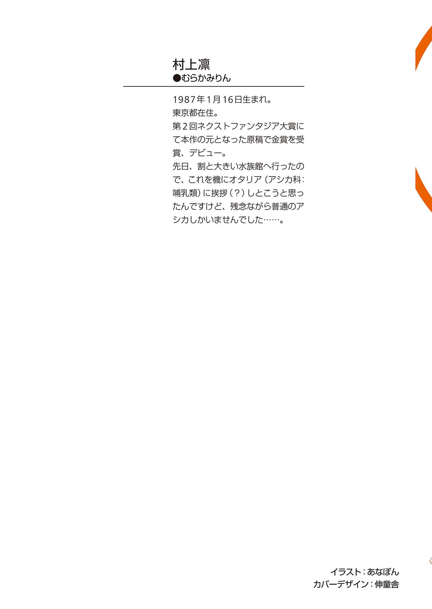
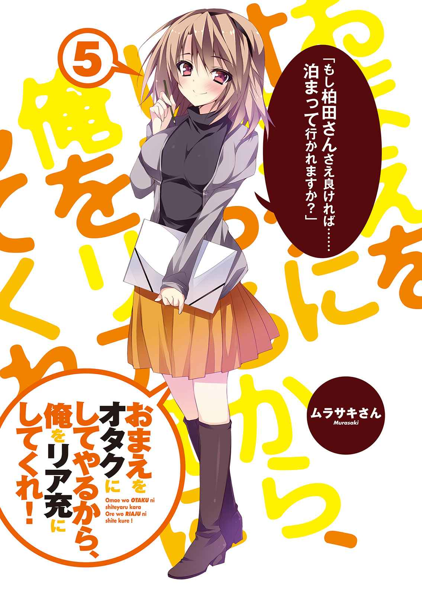
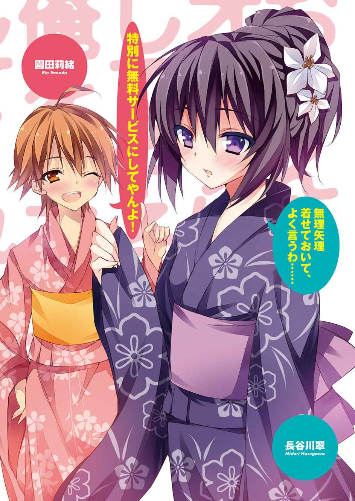
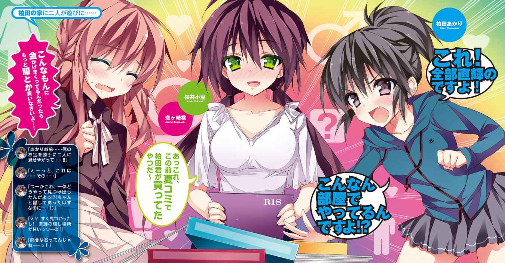
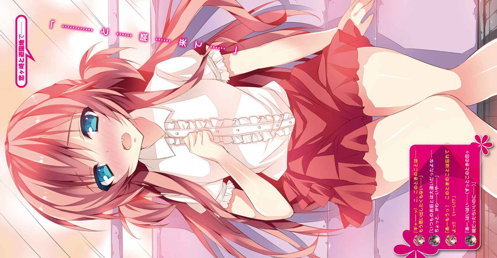
おまえをオタクにしてやるから、
俺をリア充にしてくれ！５
村上 凛

富士見ファンタジア文庫
本作品の全部または一部を無断で複製、転載、配信、送信したり、ホームページ上に転載することを禁止します。また、本作品の内容を無断で改変、改ざん等を行うことも禁止します。
本作品購入時にご承諾いただいた規約により、有償・無償にかかわらず本作品を第三者に譲渡することはできません。
本作品を示すサムネイルなどのイメージ画像は、再ダウンロード時に予告なく変更される場合があります。
本作品は縦書きでレイアウトされています。
また、ご覧になるリーディングシステムにより、表示の差が認められることがあります。
口絵・本文イラスト あなぽん
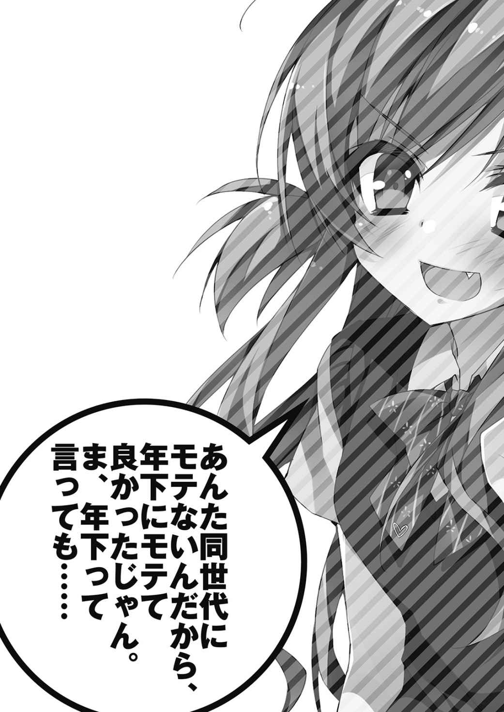
「っしゃいませー」
今日は祝日。ここは原宿の古着屋ハンジロー。
俺は今日『秋っぽい服』を購入するため、わざわざ原宿まで足を延ばし、いつぞやに恋ヶ崎に連れて行ってもらった古着屋へと一人で来ていた。
恋ヶ崎に教えてもらったこの店であれば、どの服を選んでも割と失敗することなんてないのではないか......と思い一人で粋がって来てみたはいいが、実際に買おうとすると途端に躊躇ってしまう。
また以前のように自分のセンスに任せて服を買って、後から恋ヶ崎や家族の評判が悪かったらどうしよう......と思うと怖くて、どの商品にも手が出ない。何せ二度も失敗しているので、さすがの俺も慎重になっている。
このままずっと悩んでいるわけにもいかないので、俺は決意を固めた。
携帯を取り出し、電話帳からか行を開く。か、き、く、け、こ......あった、恋ヶ崎。そのまま発信ボタンを押す。やはりここは、専門家に相談するしかない。
五回目のコールで奴が出た。
「あ、もしもし、恋ヶ崎？」
「柏田？ 何？」
「いや、ちょっと相談したいことがあって......今だいじょ」
「相談～!? 今それどころじゃないのよ！」
「え......」
それどころじゃない......その言葉を聞いて、理由は分からないがとにかく今恋ヶ崎はとても忙しそうであることが分かり、俺の相談は聞いてもらえることなくすぐにこの電話は切られるのだろうなあ......と瞬時に悟ってがっかりした。が、しかし。
「今ラクーアに買い物に来てるんだけどもう大変で......ちょっと助けに来て欲しい勢いなんだけど！」
ラクーア......ＪＲ総武線の水道橋駅付近にある、東京ドームシティという遊園地と同じ敷地内にある商業施設の名前だ。
「助けに......？ って、どういうことだよ!?」
「説明すると長くなるんだけどー......あんた今どこいんの？ 来れない？」
今いる原宿駅から水道橋駅までは、電車でそれほど遠くはない。
「えっ!? まあ、行けなくはないけど......」
「......あ──っ！ うそっ......逃げられたーっ！」
「えっ!?」
恋ヶ崎が突然叫びだしたかと思ったら、そこで電話が切れた。
助けに来て欲しい？ 逃げられた？ ......一体何なんだ？
説明すると長くなる、とか言ってたけど............まさか......！
実は恋ヶ崎は、地球を守るために宇宙からやってきた別の惑星の王女で、今まさに地球の平和を脅かす宇宙マフィア組織と戦っていた真っ最中で、俺の応戦を頼もうとしていた、とか......？ そんでもって、今せっかくマフィア組織の手下を捕まえていたっていうのに、俺と電話してたことにより逃げられてしまったとか......!?
──って、何厨二的妄想勝手に繰り広げてんだ俺は。......阿呆か。
しかし、助けを求めていたのは事実だ。一体奴の身に何が起きているのだろうか。
俺は心配になり、再度恋ヶ崎に電話をかける。しかし、繋がらないまま留守番電話サービスへと移行してしまった。
マジで何なんだよ......。電話に出られないほどの状況なのだろうか。そういえば奴は今、ラクーアに買い物に来ているとか言ってたな。ラクーアで助けて欲しい状況って、一体？ 全くもってわけが分からない。そんな中途半端なところで電話を切られたら、嫌でも気になっちまうじゃないか。
どうせこのままここにいても、恋ヶ崎の助言がなければ今日俺は服を買えないまま帰ることになる気がする。であれば、奴はなんだかよく分からないが俺に助けを求めていたのだから、行ってやってもいい。別に恋ヶ崎のことが心配で今すぐ駆けつけてやりたいとか決してそんなんではないが、ラクーアには確か服を買い物できるところもあった気がするから、うまいこといけば恋ヶ崎にその場で服を選んでもらえるかもしれないとも思うし。
恋ヶ崎に再度電話をかけてもやはり繋がらないのだが、とりあえず俺はラクーアへと向かうことにした。
ＪＲ総武線水道橋駅に到着し、駅を出て通りを渡り東京ドームシティへと入園する。ラクーアへは、まずこの遊園地へと入らないと辿り着くことができない（もしかしたら行けるのかもしれないが、俺はそれ以外の行き方を知らない）。
家族で何度か来たことがあるので、迷わずにすんなりと来ることができた。
東京ドームシティは遊園地だが入園料がかからないので、アトラクションに乗らず入るだけなら無料だ。
園内の看板を見ながら、少しずつラクーアへと近付いていく。そこで、今更ながらふと不安になる。恋ヶ崎から一方的に電話を切られてから、一度も折り返しの電話がない。果たして奴はまだラクーアにいるのだろうか？ 気になって、鞄から携帯を取り出す。
「!?」
なんと、俺の携帯は充電が切れていた。
まずい、全く気付かなかった。そういえば昨日、寝るときに充電するの忘れたな......。これでは恋ヶ崎から連絡が来ていたとしても分からないはずだ。
そのとき、後ろから俺の足に何かがぶつかった。
「あうっ」
「えっ？」
下の方から声がして振り向くと、小さい女の子が俺の足にぶつかったようだ。長い髪をツインテールに結んでいて、目が大きくとても可愛らしい女の子だ。まあ、俺にロリコンの気質は皆無なので、小動物を可愛いと思うような感覚なのだが。
「あ、大丈夫？」
女の子は俺の問いに黙って頷く。
そこで俺は違和感を覚えた。この女の子の保護者らしき人物が、周りに見当たらない。恐らく四、五歳くらいだろうと思うのだが、このくらいの年齢の子が一人で遊園地内をうろついているだなんて、普通は考えられない。つまり......迷子？
「ええっと、お父さんかお母さんは？」
女の子は、黙って首を横に振る。
「えっ......誰と来たの？」
「おねえちゃん！」
「お姉ちゃんはどこなの？」
「わかんない」
やはり、迷子か。はぐれてからそんなに経っていないのであれば、この近くにその『お姉ちゃん』がいるはず。
「とりあえず、お姉ちゃんを一緒に探そう」
どこかへ逃げないように幼女の手を掴む。幼女は抵抗せずに俺と手を繋いでくれたが、俺の言葉に眉を八の字にした。
「え!? やだ！ ゆず、おねえちゃんのところにもどりたくない！」
この子、ゆずという名前なのか。お姉ちゃんと仲が悪いのだろうか。
「お姉ちゃん嫌いなの？」
「おねえちゃんすき！ だけど、いまからいやなひとよぶっていうから、ゆずにげてきたんだもん！」
「いやなひと？」
「うん！ おねえちゃん、さいきんそのひととあそんだり、でんわとかメールばっかするから、ゆずとあんまあそんでくんなくなったんだもん。だから、ゆずそのひときらいなの。でもおねえちゃん、きょうにもつおおくてたいへんだから、ゆずだっこできないから、そのひとよぶとかいうんだもん。だから、ゆずにげてきたの」
えーと......。つまりは姉が今から彼氏かなんかを呼ぶと言って、この幼女は姉の彼氏のことが嫌いで、逃げてきたというところなのだろうか。
「そ、そっかー......大変だね」
なんと言っていいか分からないので、とりあえず適当に相づちを打った。
「そうなの！ おにいちゃん、わかってくれるー!?」
幼女は俺の目を真剣に見つめてきた。おにいちゃん、っていうのは俺のことか。幼女に慕われるってのも悪くないな。
「うん......でもお姉ちゃんの元に戻らないと、お姉ちゃん心配するよ？」
「しんぱーい？ うーん......」
「一緒にお姉ちゃんの元に戻ろう。どっちから来たの？」
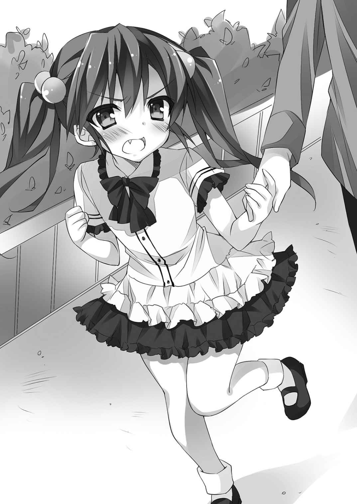
「や......やだ！ ゆず、もどらな......」
「あーっ！ 柚子いたーっ！」
そこへ、前方から若い女の子が幼女の名前を呼びながら駆けつけてきた。
これが、この子の姉......
「......恋ヶ崎!?」
駆けつけてきたのは、やたら紙袋をたくさん両手につり下げた恋ヶ崎だった。
......ということは、恋ヶ崎がこの子の姉......？
そういえば恋ヶ崎は小さい妹がいるって前に言っていたな......。今一度幼女の顔を見ると、なんとなく恋ヶ崎に似ているような気がしなくもない。
「えっ!? か、柏田......!? なんで、ここに......」
恋ヶ崎は紙袋を地面に下ろして息を切らしながら、俺を見て驚いている。
「えっ......かしわだ......？」
そのとき、幼女が俺の名前を聞き返す。
「かしわだ......!? えぇーっ!? おにいちゃんが......かしわだっ!?」
かと思うと、突然今まで繋いでいた俺の手を離し、恋ヶ崎の後ろへと逃げるように移動する。どうして急に俺の元から逃げたのかよく分からず、俺は混乱した。
幼女は恋ヶ崎の後ろから顔だけ出して、俺を鋭く睨み付けている。先ほどまでおとなしく俺と手を繋いでいた女の子と同一人物とは思えないほどの豹変っぷりに、少なからずショックを受けてしまう。
「柏田、なんであんたが柚子と一緒に!?」
「誘拐犯じゃねえぞ！ お前がラクーアに来て欲しい的なこと言うから来てやったんだろ！ そしたら、この子が迷子っぽいから話を聞いてたところで......」
「嘘っ......！ マ、マジで来るなんて......。電話かけてもかかんないから、もう完全にあんたを呼ぼうとしてたこと自体忘れてた......」
恋ヶ崎は俺の姿を見て呆然としている。
──って、ちょっと待てよ。
ということは、今この幼女......柚子ちゃんが言ってた、『お姉ちゃんが今から嫌な人呼ぼうとしてた』の嫌な人って......俺!?
柚子ちゃんから話を聞いたときは、てっきり柚子ちゃんの姉の彼氏か何かのことだと思い込んでしまっていたが、まさか俺のことだったなんて......。
そのとき、柚子ちゃんが再度逃げようと走り出し、恋ヶ崎が慌てて追いかけて捕まえた。
「もうっ柚子！ やっと見つけたと思ったら、なんでまた逃げようとすんのよ！ お姉ちゃんがどんな思いで探したと思ってんの!?」
「だ、だって......かしわだきちゃったんだもん！ ゆず、かしわだきらいだもん！」
柏田嫌い。いくら相手が判別のつかない幼女でも、ここまではっきり言われると、豆腐メンタルな俺はいとも簡単に傷ついてしまう。恋ヶ崎が来る前までは少しだけ心を開いてくれていたような様子だったっていうのに......。
「恋ヶ崎お前......さては家で俺のこと散々貶してるんじゃ......」
「えっ!? そんなことしてないわよ！」
初対面の幼女にすらこんなに嫌われてるって、俺ってつくづく女に好かれないよなあ......。もはやこれは、モテないとかいう次元の話ではない。
あ、でもそういえばさっき、お姉ちゃんが俺に構ってばっかで遊んでくれなくなった、って言ってたなあ......つまり、嫉妬？ 俺は恋ヶ崎の彼氏でも何でもないし、嫉妬されるほど恋ヶ崎と仲がいいわけでもないのだが......。
柚子ちゃんは恋ヶ崎の陰に隠れながら俺の方をちらちら見ているが、俺が見ると途端に顔を背けた。俺のことを嫌っているオーラを全面的に醸し出しており、途端に口数も少なくなったような気がする。
「っていうかお前、すげえ荷物......」
改めて恋ヶ崎の姿を確認すると、計三つ程の大きめの紙袋を肩や腕、手につり下げて、無理矢理右手を空けて柚子ちゃんと手を繋いでいる。
「そうそう、もう大変だったのよ！ 今日お母さんに柚子の面倒見るように頼まれて、柚子がプレキュアのショーを見たいって言うから、わざわざ連れてきてあげたわけ！」
そういえば、ここの遊園地ではヒーローショーとかもやってるようだったな。
「で、見た後に柚子がおもちゃ買いたいって言うから買ってあげて、そしたら結構可愛い服いっぱい売ってたからついつい自分の服も買っちゃって、そしたら超大荷物になっちゃって、マジ超困っててー」
「......お前まさか、助けてくれって......たかがそんなことで!?」
「たかがそんなことって何よー！ 柚子がぐずりだしてだっこしてとか言うし、もう超大変だったんだから！ 柏田から電話きたとこでなぜか柚子が逃走しちゃうしー」
......ということは、先ほどの電話の『逃げられたーっ！』は、逃げた柚子ちゃんに対してだったのか......。まあ大したことなくて良かったが、つまり俺はたかが荷物持ちのためだけに呼び出されたのかよ......。
正確には、恋ヶ崎に呼び出されたというより俺が先走って勝手に来たんだけど。
「ほんとに大変だったんだからね！ ......けど、まさかマジで来るなんて......」
「お、お前が呼んだんだろーが！」
「え、まあ、そうだけど......半分冗談だったっていうか、マジで来るとは思ってなかったし......」
恋ヶ崎が俺をまじまじと見つめてくる。約束もしていないのに本当に来た俺に対して、かなり驚いている様子だ。......もしかして、本気で助けを必要としていたわけではないのか？ 本当に来てしまった俺に対して引いてるのだろうか？
「......や、休みの日だってのに、どんだけ暇なんだか！」
恋ヶ崎は俺を馬鹿にした様子で言いながら、俺から顔を背けた。
「んな......はるばる来てやった奴に言うセリフがそれかよ！」
恋ヶ崎のセリフにイラッとする。ああ、なんだっていつもこいつはこうなんだよ。こんなことを言われるくらいなら、わざわざ来てやるんじゃなかった。
恋ヶ崎は大荷物を抱えたまま遊園地の出口へと歩き出す。柚子ちゃんの手も引いているので非常に大変そうで、腹が立ちつつももう見ていられない。
「......貸せよ」
とりあえず来たからには自分の役目を果たそうと、恋ヶ崎の手から紙袋を二つほどもぎ取る。
「えっ、あっ......」
突然荷物を取られて動揺している恋ヶ崎をスルーして、奴の前を足早に歩く。
「......遊園地出たら、水道橋駅でいいのか？」
「......え......あ、ていうか、タクシーで家まで帰るから......」
「タクシー!?」
金持ちは発想からして違うもんなんだな......。
「えっ......ゆうえんちでる？ もうおうちかえるの!?」
そのとき、今まで黙りこくっていた柚子ちゃんが突如口を開いた。
「そうよ。もう散々楽しんだでしょ。おもちゃも買ってあげたし」
「えーやだー！ まだかえりたくない！ ゆずメリーゴーランドとかみずのやつとかのりたい！」
「えぇー!? だってこんな大荷物なのに......」
この荷物量で、遊園地で遊ぶ......？ そうなった場合、まさか俺がずっと荷物を持たされることになるのだろうか。そんなの、絶対まっぴらごめんだ。
「でも確かに、せっかく久々に東京ドームシティ来たしなー......このままアトラクション一つも乗らないで帰るのもったいないかも......」
振り向くと、恋ヶ崎が目を輝かせてそんなことを言い始めた。
「んな!? お前まで何言ってんだよ！」
それは俺に荷物を持たせる前提で話しているのか？ 一体どこまで俺をこき使う気でいるんだよこいつ......！
「あ、ってかコインロッカーあるじゃーん！」
恋ヶ崎が指さした前方に、確かにコインロッカーがあった。
恋ヶ崎は突然走り出してコインロッカーまで近付くと、
「残り一個だったー！ 危なー！ じゃ、こん中に荷物全部入れちゃお！」
などと上機嫌で言い出した。
「おいおいおい......じゃあ、俺来た意味ねえじゃんか......」
ずっと荷物を持たされる危機は回避できたが、俺は今日荷物持ちのために来たというのに、荷物をコインロッカーに預けるなら俺の存在意義がなくなってしまうじゃないか。
「なんでよ、遊園地出てからタクシー乗るまで荷物持ってもらうわよ」
「え!? じゃあ、お前らが遊び終わるまでずっと待ってろっつーのか!?」
俺を自分の執事か何かと勘違いしてんじゃねえだろうな、この女。
「え......だ、だから......」
恋ヶ崎はなぜか少し赤くなって俯き、言いにくそうにしながら、
「い、一緒にあんたも、遊べばいいじゃんっ！ ......せ、せっかく来たんだからもったいないし......！」
「えっ......」
俺も一緒に遊ぶ......？
そんな考え微塵もなかった。
「ええーっ!?」
俺と一緒に、柚子ちゃんも驚きの声をあげる。あからさまに嫌そうな声だ。
「いや、でも......アトラクション代っていくらすんだ？」
恋ヶ崎は俺が一緒に遊んでもいいのか？ とか、柚子ちゃんはいいのか？ とか、色々と突っ込むところはあったが、まず金の心配が念頭に来た。
「い、いいわよそれくらい......今日、柚子の面倒見るようにママにいっぱいお小遣い貰ってて、全部使い切ってもいいって言われてるし」
「えぇ!?」
つまり、俺のアトラクション代も恋ヶ崎が（正確には恋ヶ崎の親御さんが）負担する......と？
「いやいやいや、さすがにそんなん出してもらうわけには......」
「あたしがいいって言ってるからいいの！ わ、わざわざ今日一日潰して来てくれたわけだし、まあ、そのくらいしてあげるわよ！ あっ、あ、あたしなんかと遊園地で遊びたくないって言うんだったら別にいいけど!?」
「......な、誰もそんなこと言ってねえだろ！」
「じゃ、チケット買ってくるから柚子とそこで待ってて！」
恋ヶ崎は柚子ちゃんの手を無理矢理俺に握らせ、入口のチケット売り場へ行くために足早に去ろうとする。
「ま、まっておねーちゃん！ ゆずもいっしょにいく！」
柚子ちゃんはすぐに俺の手をふりほどき、恋ヶ崎の後を追って駆けていった。
「なんでかしわだもいっしょなのー!?」
柚子ちゃんが恋ヶ崎に俺も一緒に遊ぶ件について文句を言っているのが聞こえてくる。恋ヶ崎は別にいいでしょ、なんでそんなに嫌うのよ？ などと柚子ちゃんをなだめており、やはり俺は帰るべきだったのではないだろうかと今一度不安になった。
十五分程度待っただろうか。
恋ヶ崎と柚子ちゃんがチケットを持って戻ってきた。
「ごめんお待たせ。ついでにお手洗いにも行ってたから遅くなった」
チケットを購入しただけにしてはやけに長かったなあなどと思ったが、そういうことだったのか。
「あ、ありがとう......マジでいいのか、金」
恋ヶ崎から複雑な気持ちでチケットを受け取る。
「しつこいわね。いいってば」
気づくと、柚子ちゃんが大変不機嫌そうな顔で俺を睨み付けていた。邪魔者は帰れ、というような表情だ。
「じゃ、早速行くわよ！ 柚子、どれ乗りたーい？」
恋ヶ崎が柚子ちゃんの顔をのぞき込む。
「え......」
柚子ちゃんは不服そうな様子だったが、遊園地内のアトラクションをキョロキョロと見渡すと徐々に笑顔になり、
「ゆず、あれのりたーい！」
と、アトラクションの一つを指さした。俺がいることを不満に感じつつも、遊園地で遊べるという誘惑には勝てなかったようだ。柚子ちゃんが指さした先には、水の上をボートのような乗り物で走るウォータースライダーがあった。確かにまだ暑いし、涼しげなアトラクションには俺も惹かれる。
「柚子乗れるかな～。とりあえず行ってみよっか」
そういえば、年齢制限や身長制限で柚子ちゃんは乗れない可能性もあるんだよな。
乗り場へ行くと、柚子ちゃんはスタッフに年齢と身長を確認された。五歳以上は付き添いがいれば乗車可能なようで、ちょうど五歳だという柚子ちゃんはギリギリオーケーだった。三人で列の最後尾に並ぶ。
「ゆず、おねーちゃんとのる！ かしわだとはぜったいのらない！」
「あーはいはい。もう、なんだってそんなに柏田のこと毛嫌いしてんのよ」
相手は幼女だし、姉を取られたという嫉妬心から嫌われているだけなのかもしれないが、こうもはっきり言われると悲しくなってくる。
悲しくなる一方で、なんだか既視感を覚えた。この感じ......そうだ、桜井さんと出会ったばかりの頃もこんな感じだったなあ。桜井さん、あからさまに俺のこと嫌ってるのが態度に出てて......つくづく俺って、女という女に嫌われやすいよな......。
まあ桜井さんのあれは、嫌ってるわけじゃなくてオタク男子が全般的に苦手だった、ってだけだったが。
「柏田、何遠い目してんの？」
「遠い目!? いや......なんか柚子ちゃん見てたら桜井さんと会ったときのこと思い出してさ......」
「......えっ？ 小豆ちゃん......？ なんで？」
気のせいだろうか、恋ヶ崎の表情が少し強ばる。
「いや、最初はこんな風に嫌われてたよなあ、って思って......。あのときに比べたら、桜井さん、今はすごい優しくしてくれてるよなあ......」
当時を改めて思い返すと、今の桜井さんの態度を本当にありがたく思う。
「......何にやついてんの？ キモっ」
「えっ!?」
意識していなかったが、俺は今口元が緩んでいたようだ。
「じゃあ、今度小豆ちゃんと来ればいいんじゃん？」
「......はぁ？」
恋ヶ崎は俺の顔を見もせず、冷たい口調で言い放った。
小豆ちゃんと来ればいいんじゃん？ って、遊園地のことを言っているのか？
なんで今そんな話になるんだ？ 今の今まで機嫌良かったくせに、何を突然機嫌悪くなっているんだ、こいつ。
よく不注意な発言をしてしまうのは自分で自覚しているが、今の会話の流れでこいつの機嫌を損ねるようなことを言った覚えはない。本気でわけが分からない。
「ちょっとー！ ゆずちゃんってなんだし！ かってになれなれしくよばないでくれる!?」
「えっ!?」
気付くと、柚子ちゃんが俺に向かってふくれっ面で抗議していた。俺の呼び方が気に食わなかったようだ。
「ええっと、ごめん......じゃあ、柚子......さん？」
「ゆずさま、だったらよんでもいーけど！」
柚子様......ねえ。なんだかこの子、さすが姉妹だけあって将来恋ヶ崎に似てわがままで高慢になりそうだな......。
「はーいそれではチケットを拝見致しまーす」
列はそれ程長くなかったようで、気付くと最前列に来ていた。スタッフにチケットを提示すると、乗り場へと案内される。既に俺たちが乗るためのボートが準備されていた。
「では順番にお乗り下さい」
「とりあえず柚子が前でー......柏田は一番後ろね」
「えっ、あ、ああ」
そうか、何も考えていなかったが、この小さいボートに三人で乗るのか......。
ジェットコースターのように座席がはっきり分かれているわけではなく、仕切りもない。真ん中に縦に長い椅子があって、その上に三人でまたがって座るようだ。
俺が一番後ろとのことだったので、慌てて座る。続いて、恋ヶ崎が柚子ちゃんを抱きかかえて俺の前に腰を下ろし......。
「......っ!!」
恋ヶ崎は、両手で柚子ちゃんを抱いているためにスカートを押さえることができなかったのか、俺の前に腰を下ろす際に......赤の短いスカートの隙間からほんの一瞬、見えてはいけないものが見えてしまった。
......意外にも、白か......。
「ちょ、ちょっと、狭いんだけど......柏田、もっと後ろ行けないの!?」
「え......え!? こ、これ以上後ろ下がれねえよ！」
俺は限界まで後ろに下がっているが、確かに狭い。俺の太ももあたりに恋ヶ崎の柔らかい尻が......当たっている。
「!?」
さらに、とんでもないことに気付いた。俺の目の前には恋ヶ崎の背中があるわけだが、白のブラウスの下に、本当にうっすらだが......ブラジャーが透けている。髪で隠れているのでここまで至近距離に来なければ全く気付かないレベルなのだが。
「それでは出発しまーす」
このウォータースライダー、ゴールまで一体どのくらいの時間なんだろうか......。
これからゴールするまで、俺、持つかな......。
「キャー！」
出発すると同時に、前に座る柚子ちゃんと恋ヶ崎が楽しげに叫ぶ。意外と速度が速い。
「どわあー!?」
突如、上り坂が始まり恋ヶ崎の背中が俺の方へと滑り落ちてくる。
「お、おい、お、重い！ 落ちてくんな！」
「え!? 無茶言わないでよ！」
恋ヶ崎の、尻が......背中が......柔らかい感触が......。
「ギャ────ッ!!」
などと思っている間に、山の頂上まで来たらしく今度は一気に下り坂を落ちる。意外と坂が急で、情けなくも叫んでしまった。
落ちた瞬間、俺たちは水しぶきに包まれた。
「キャーッ！ びしょびしょ！ 柚子大丈夫!?」
「つめたくてきもちーっ！」
俺も少し濡れたが、恐らく俺よりも前にいる柚子ちゃんや恋ヶ崎の方がより濡れただろう。
「もうゴールだぁー！ みじかーい！」
柚子ちゃんの言葉通り、あっという間にゴールに辿り着いた。
「油断してたけど結構楽しかったー！」
柚子ちゃんを抱えてボートから降りながら、恋ヶ崎が満足げに笑う。
「でもめっちゃ濡れちゃっ............!?」
そのとき突然、奴の笑顔がこわばった。
自身の濡れてしまった服を見下ろして、慌てて鞄からハンカチを取り出し自身のブラウスを拭き始める。
「確かにお前かなり濡れたな、柚子ちゃんも。大丈......」
「ちょっ......こっち来ないでっ!!」
俺が心配して声をかけてやったというのに、恋ヶ崎はすごい形相で俺から離れるべく後ずさりし始めた。
「あぁ？」
「ちょ、ちょっとあたし......お手洗い行くからっ！」
大きな声でそう宣言すると、柚子ちゃんの手を引いて女子トイレへと向かった。そんな大声で言うことでもないだろうに......一体何なんだ？ ものすごい慌てようだ。
服を乾かしたいとかメイクが崩れたのを直したいとかでトイレへ行ったんだろうとは予想できるが、それにしてはなんだか様子がおかしかったように思う。
一人取り残された俺は、その場に呆然と立ち尽くした。
十分後。
完全に服が乾き、ついでにメイクもばっちりになった恋ヶ崎が柚子ちゃんと共に戻ってきた。
「お......おまたせ......」
戻ってきた恋ヶ崎は、なぜかとても気まずそうにしている。
「おねーちゃん、およーふくかわいてよかったね！ ぶらじゃーすけすけはいやだもんね！」
柚子ちゃんの言葉に、俺と恋ヶ崎が一瞬にして凍り付いた。
「なっ......バッ......バカ柚子！」
恋ヶ崎が真っ赤になって柚子ちゃんの口を押さえるが、時すでに遅し。具体的な単語を聞いて俺まで自分の顔が赤くなるのを感じた。
──恋ヶ崎は水で下着が透けてしまっていたから、あんなに慌ててトイレへ向かったのか......。今一度恋ヶ崎の服をさりげなく盗み見ると、もう完全に乾ききっており全く透けてなどいなかった。俺の視線に気づいたのかどうか分からないが、奴は赤面したまま俺を睨み付けている。
くそっ、さっき気づいて見ておけば良かった......なんて考えが脳裏に一瞬浮かんだが、そんな風に思ったことが恋ヶ崎にバレたら殺されるだろうな......。
「ゆず、つぎあれのりたーい！」
ウォータースライダーに続いて柚子ちゃんが指さしたのは、観覧車だった。
「観覧車かぁ、懐かしー！ 最近全然乗ってないや」
「俺も、子供の頃以来乗ってないな......」
早く早く、と恋ヶ崎が柚子ちゃんに手を引っ張られ、俺もその後についていく。
「一回ちっちゃい頃、かさりんの観覧車に乗ってさー」
「かさりん？」
「葛西臨海公園におっきい観覧車あるじゃん」
いや、あるじゃんて言われても行ったことねえし知らねえし......。っていうか葛西臨海公園のその略し方初めて聞いたし。
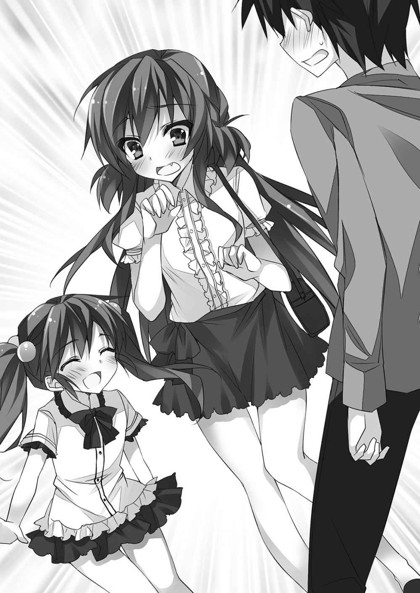
「そのときめっちゃ怖かったの覚えててー」
「怖かった？ じゃあこれ乗って大丈夫なんかよ？」
「ちっちゃい頃って言ったじゃん。最近は観覧車自体全然乗ってないけど、この年になったらさすがに怖いなんてことないでしょ～。あ、柚子は高いところ大丈夫？」
「ゆずたかいところすきー！」
そんな他愛もない会話をしているうちに、俺たちの順番が回ってきた。チケットをスタッフに見せ、観覧車の中に乗り込む。恋ヶ崎と柚子ちゃんが隣同士に座り、向かい側に俺が座った。
「すごいすごーい！」
「柚子、立ったら危ないでしょ」
観覧車は少しずつ、高い位置へと上がっていく。
なんか......今更だけど、こう落ち着いてみると、すげえ変な感じだよなあ......。柚子ちゃんがいるとはいえ、恋ヶ崎と観覧車に向かい合って座ってるだなんて......と感慨にふけっていると、
「え..................ちょ、ちょ、ちょちょっと待って」
「......あ？」
突然、恋ヶ崎が苦笑いを浮かべて焦り始めた。
「な、なんだ？」
「おねーちゃんどしたのー？」
「な、なんか......た、高くない？」
「は？」
高くない？ って、まだ四分の一くらいの位置にしか来ていない。つまり、天辺の半分の高さだ。
恋ヶ崎はちらっと外の景色を見たかと思うと、すぐに室内へと顔を戻す。その顔は真っ青だった。
「え、ちょ、な、なんか............む、無理かも......」
「はあ!?」
おいおいおいおい。
「さっき自分で『この年になったらさすがに怖くない』的なこと言ってたじゃねーか......」
まさか、あのセリフがフラグだったなんて......。
「さっきはそう思ったんだもん！ そ、外から観覧車見ても怖そうとか何も思わなかったし......ジェットコースターは平気なのに......」
「ジェットコースターは平気なのに観覧車は駄目って......そんなことってあるのか？」
「あ、あたしだってびびってるわよ！ なんでこんなに怖いのか自分でも分かんないし......っていうか、な、なんか......お、お、落ちたらどうしよう......」
「いや、落ちるわけねーから！ 観覧車のゴンドラが落ちたなんて話は今までに一度も聞いたことねえし！」
とりあえず恋ヶ崎の恐怖を少しでも軽減させてやらなくては......。
「ゆ......柚子は怖くないの!?」
「ぜんぜんこわくなーい」
恋ヶ崎は柚子ちゃんを膝の上に乗せて抱きしめる。顔は相変わらず青いままで、見てるこっちが気の毒になってくるほどだ。
「わ、分かった、恋ヶ崎。外は見るな。絶対見るな」
「言われなくても絶対見ない！ けど、さっき外見たときかなり高くて、それから結構経ってるから今......ど、ど、どんだけ高いのよ......」
「想像もすんな！」
「おねーちゃんくるしー！」
恋ヶ崎は柚子ちゃんをおもいっきり強く抱きしめていたようだ。
「え、あ、ご、ごめん、柚子......」
恋ヶ崎が柚子ちゃんを解放すると、自由の身になった柚子ちゃんが恋ヶ崎の膝の上からぴょん、と軽快に床へと降り立った。
その瞬間、観覧車が僅かに揺れる。
「ひいいいっ──────」
恋ヶ崎が涙目になって声にならない悲鳴を上げる。
「ご、ごめんおねーちゃん......」
「マジ無理無理無理無理無理っ！ もう無理超無理！ 降りる！ 今すぐ降りる──！」
「む、無茶言うな！ とりあえず落ち着け！」
恋ヶ崎は目を固くつむって首を横に小刻みに振る。目の前でここまでパニックになられると、俺まで動揺してしまう。
「か、柏田......」
いつもの恋ヶ崎と同一人物とは思えないほどか細い声で、恋ヶ崎が俺の名を呼ぶ。
「お、おう！ なんだ!?」
「............と......隣......来て......」
「......えっ!?」
えーっと........................今のは、聞き間違いではあるまいな？
──恋ヶ崎の隣に、俺が？
「ってゆーか！ ......な、なんでもいいから！ しがみつく何かが欲しいの！ そ、そんだけ！ ......あ、あんたなんて全然頼りになんないけど......」
こんな状況になっても尚強がっているのか、恋ヶ崎は興奮気味に早口で言い切った。
「おねーちゃん、ゆずにしがみつけばいーじゃん！」
「柚子だとぎゅってやりすぎるとかわいそうだから......」
「お、おねーちゃん、やさしい」
「わ、分かった......隣、行けばいいんだな......」
俺はそっと椅子から立ち上がり、観覧車が揺れないようにそろそろと向かい側の席まで移動する。
「ひやああ!?」
俺が移動したことによって、観覧車が傾いた。恋ヶ崎がさらに変な悲鳴を上げる。
柚子ちゃんが座っている反対側の恋ヶ崎の隣へと、ゆっくり腰を下ろす。
「え、え、えっと......」
いざ隣に座るとなんだか途端に恥ずかしくなり、どうすればいいか分からなかったが、
「ほ、ほら......」
とりあえず、少しでも怖さを軽減させるため恋ヶ崎の前に手を出してみる。そのまま俺の手を握るかと思いきや......恋ヶ崎は、俺の腕に思いっきり強くしがみついた。
「いっいてえ！」
「はー、はー......」
横で息を荒げている恋ヶ崎の顔を見ると、眉をしかめて酷く怯えた表情をしている。
俺が見ていることに気付いたようで、潤んだ目をこちらへと向けたので、目が合った。
俺の腕にしがみつく両手は、強く握りしめてはいるものの、恐怖から小刻みに震えている。
──いつも強気で傲慢で自分勝手で口うるさいこいつが、観覧車ごときに怯えてこんな状態になってしまうだなんて......なんだか信じられない。
なんだろう......うん、こんなときにすげえ不謹慎だとは思うけど......。
すげー可愛いじゃねえか。
「な、なに......？」
「え？」
恋ヶ崎がか細い声で、何かを言った。
「なんでこっち、見てるの......？」
「え、えぇ!? いや......えっと、こ、怖がってんな、って思って......」
今何を考えていたのかなんて、死んでも口にしたくない。
そのとき、俺は気付いた。
恋ヶ崎がしがみついている自分の腕の二の腕あたりに、何か柔らかいものが当たっていることに......。そして、瞬時にそれが何かを悟ってしまい、途端に自分の動悸がより激しくなるのが分かった。
......恋ヶ崎の奴......テンパりすぎて自分の胸が俺の腕に当たってることすら気付いていないだなんて......。
俺の中の全神経を自身の二の腕へと集中させる。......うーん、今まで貧乳だ貧乳だと思っていたが、想像してたよりあるかも......。
あれ？ 今日、なんかすげーいい日だな？ 俺、今日で運を使い果たして死ぬんだろうか？
「か、柏田......なに、ニヤニヤしてんのよぉ......ひ、人が怖がってんのが、そんなに楽しいわけぇ？ ば......ば、ばかにしてんの？」
恋ヶ崎は相変わらず蚊の鳴くような声しか出せないくせに、それでも必死に文句を言ってくる。やべっ、俺また無意識にニヤついてたのか......。
「に、ニヤニヤなんてしてねえよ！ 気のせいだろ！」
「おねーちゃん！ もうすぐちじょうつくよ！」
「え？」
柚子ちゃんの声に外を見ると、いつの間にかもう少しで地上というところにまで降りてきていた。
色々ありすぎて、もう下に降りてきているだなんて全く気付かなかったな......正直、もうちょっとこのままでも良かったかも......って、何を考えてるんだ俺は。
次の瞬間、恋ヶ崎は慌てて俺の腕から手を離し、勢いよく身体ごと俺から離れた。
「も、もう大丈夫だから、さっさと向こう側に戻ってよ！ 狭いし！」
恋ヶ崎は俺の方を見もせずに、しっしっと手を振って俺を追い払う。
「あぁあ!?」
自分で近くに来いっつーから来てやったっつーのに、その態度はねーんじゃねえのか？ さっきまでの弱々しくて可愛い恋ヶ崎はもうどこにもおらず、一瞬でいつもの強気で高慢な態度に戻ってしまった。
イラっとしつつ、立ち上がって向かい側の席へと戻る。
向かい合って改めて恋ヶ崎の顔を見ると、奴は赤くなって俯いていた。
落ち着いて我に返った今、あんな状態の自分を俺に見られて相当恥ずかしくなったのかもしれない。......もしかして今キレ気味だったのは、照れ隠しだったりするのだろうか。
「はーい、お疲れ様でしたー！」
スタッフの人が扉を開け、俺たちは順番にゴンドラから降りる。
「はあ、はあ......地上！」
恋ヶ崎は一歩一歩強く地面を踏みしめながら、地上に降り立ったことを確認（？）していた。
「全っ然大丈夫じゃねえじゃねーか！ こっちがびびったっつーの」
「う......下手したら、ちっちゃい頃より今の方が怖がってたかも、あたし......ああ、マジで怖かった......観覧車なんてもう二度と乗らない......」
「おねーちゃん、ゆずよりこわがりー！」
柚子ちゃんはきゃっきゃと笑っている。
「つぎはねーえっとねー」
柚子ちゃんは周りを見渡して、早くも次に乗るアトラクションを物色し始めた。
「......あー、柚子ちゃん......お姉ちゃんがまだフラついてるから、少しだけ休んでもいいかな？」
恋ヶ崎のふらついた足取りを見るに、すぐに次のアトラクションに乗るのは不可能だろうと思い、柚子ちゃんを引き留める。
「......か、柏田......」
恋ヶ崎が、驚いた表情で俺を見ていた。
「......っ！ し、しってるもん！ ゆずだって、いまそうしようとしてたところだもん！」
柚子ちゃんは強がってそう言うと、ぷいっと俺から顔を逸らした。
ああ、また一歩嫌われた気がする......。
それから俺たちは近くのベンチへと座り、俺は売店で二人分の飲み物を買って恋ヶ崎と柚子ちゃんの元へと戻った。
「はい」
恋ヶ崎にオレンジジュースを渡してやる。
「え......あ、ありがと......」
恋ヶ崎は驚いた様子で、俺からジュースを受け取った。
「......気が利くじゃん。あんたにしては......」
「あんたにしては!? 一言余計だっつの！」
「ゆずのぶんはー!?」
「......あ」
やべ、完全に忘れてた。
「柚子はお姉ちゃんと一緒に飲めばいいでしょ、ほら。どうせ一人で全部は飲みきんないんだから」
恋ヶ崎は柚子ちゃんに自分のオレンジジュースを渡す。柚子ちゃんは文句を言わず黙ってそれを飲んでくれたので助かった。
恋ヶ崎が柚子ちゃんの面倒を見ている様子は、なんだか端から見ると不思議な感じだ。
普段のイマドキな女子高生の恋ヶ崎は、ぱっと見どう考えても小さい子のお守りをするようなタイプには見えない。
だけど今柚子ちゃんと一緒にいる恋ヶ崎ときたら、まるで柚子ちゃんの母親のようなのだ。
「......何黙って見てんのよ、薄気味悪い」
「べっ、別にお前なんか見てねーよ！」
少し休んで恋ヶ崎が体調を整えると、柚子ちゃんが今度はメリーゴーランドに乗りたいと言い出した。さすがに俺は恥ずかしくて乗る気になどなれなかったのでそう告げると、恋ヶ崎のデジカメで二人の様子を撮影するよう頼まれた。
「ここ押すと動画だから、動画で撮って！」
「あー、はいはい」
メリーゴーランドが回り始めると、俺は言われたとおり動画の録画ボタンを押し、馬にまたがる二人を撮影した。
一周してこちら側に来たとき、恋ヶ崎が俺の方を（というかデジカメの方を）指さして柚子ちゃんに何か言っている。恐らく動画を撮っているから手を振るようにと言っているのだろうが、柚子ちゃんは手を振るどころか笑顔も見せずにむすっとしてこちらを睨み付けた。たとえカメラが回っていようが俺なんかには手を振りたくない、というのが言わなくても伝わってくる。
俺は少しでも柚子ちゃんに手を振らせようと、デジカメを持っていない方の手を柚子ちゃんに向かって振ってみたりなんかしてみたが、逆効果だったようで次に一周してこちらにやってきたとき柚子ちゃんはこちらを見ようともしなくなってしまった。
......はあ、俺、どうしてこんなに頑張ってるのか、もはや自分でもよく分からない。
ただ、娘をビデオ撮影する父親って、こんな気分なんだろうか......なんて思ってしまったのだ。
──って、ちょっと待て、ということは、恋ヶ崎と俺が......。
バ、バカか、一体何考えてるんだ俺は！ ああ、もう、たとえ一瞬でも、我ながらなんて阿呆なことを考えてしまったんだ。
「ちょっと、何ぼーっとしてんのよ！ もう終わったわよ！」
「え!? うおお！」
気付くとすぐ近くに恋ヶ崎がおり、ぶったまげた。慌てて録画停止のボタンを押す。
「なんて声出してんのよ。ちゃんと撮れたー？」
恋ヶ崎は俺の返事も聞かずに俺の手からデジカメを奪い取る。
「そらもう、バッチリ......」
「......って、なんか、今録画になってるけど......？」
「え......？」
いや、そんなはずは......今録画停止のボタンを押したはずなのに......。
「ちょっとー！ 一瞬も撮れてないじゃん！」
「えっ......嘘!? いや、バッチリ撮ったはずなんだけど......」
「あんた、録画してるつもりで録画停止のままにしてたんじゃん!?」
「マ、マジか......」
デジカメで動画撮るのなんて初めてだったから、全然気付かなかった......。
「マジ最悪！ オタクのくせになんで機械音痴なのよー!?」
「オタクがみんな機械に強いと思ったら大間違いだ！」
「何開き直ってんのよっ!?」
「じゃ、柚子、トイレ行こっか」
一通り俺を罵倒して気が済んだのか、恋ヶ崎は柚子ちゃんの手を引いてトイレへと向かおうとした。
「えーまたー!? ゆずもうおしっこでない」
「そんなこと言って漏らしたらどうすんの！」
「もらさないってばー！ さっきトイレいったばっかじゃん！ おねーちゃんひとりでいけばいいじゃん！」
「そう......？ じゃ、お姉ちゃん行ってくるから柏田とちゃんと待ってるのよ？」
恋ヶ崎は柚子ちゃんにそう言うと、トイレへと向かった。
「もー。なんかいおけしょうなおせばきがすむんだか」
「......え？」
恋ヶ崎が去ったあと、柚子ちゃんが珍しく姉の愚痴（？）を言った。
「さっきおみずのあとなおしたばっかりなのにー。そのまえだってかしわだがきてからひっしになおしてたし」
「......必死に直してた？」
つい気になって、柚子ちゃんの独り言に乱入する。
「うん、すごいいきおいでなおしてたもん」
......そういえば、チケット買いに行った後トイレへ行ったって言ってたけど、そのときか？ やけに長いなあとは思ったが、化粧を直してたとは......。
そのとき、柚子ちゃんが俺の顔をじっと見つめていることに気付いた。
「ん？ どうしたの？」
「やっぱりかしわだ、ぜんぜんかっこよくない」
「!?」
それは俺の顔面の話で間違いないのだろうか。姉妹そろって面食いか。自分たちが整った顔の造りをしているからって、人の顔を馬鹿にする気か。
「......おねーちゃんは、かしわだはこまったときたすけにきてくれるとか、いがいとおとこらしいとかいってたけど......ぜんぜんちがうし！」
「......えっ？」
......柏田は困ったときいつも助けに来てくれる？
意外と男らしい!?
「そ、それって本当にお姉ちゃんが言ってたの!?」
俺はついしゃがみ込んで柚子ちゃんの肩を掴み、問いただす。
「ほ、他に何か言ってた!?」
「ちょっ......かおがちかい！」
柚子ちゃんはものすごく嫌そうな顔をして俺から顔を逸らしつつも、姉の発言を思い出そうとしてくれた。
「えーっと......さっきゆずが、かしわだぜんぜんかっこよくないっていったら、たしかにかっこよくはないけど、でもきょうだっておねえちゃんがこまってたらたすけにきてくれたでしょ、とかいってたけど......」
確かにかっこよくはない......はもうこの際聞かなかったことにしよう。
今日も困ってたら助けに来てくれた......問題はこっちだ。なんだよあいつ、休みの日だってのにどんだけ暇なのよ、とかムカつく言い方しておいて、柚子ちゃんにはそんな風に言ってたなんて......。
単に照れていただけで、内心、今日俺が来たことに対して感謝してたりするのか？
「けど、おねえちゃんはそういってたけど、かしわだぜんぜんおとこらしくないじゃん！ ビデオとれてないし！ かんらんしゃでもなにもしないし！ ぜんぜんおねえちゃんたすけてないじゃん！」
「うぐっ......」
五歳児にまともなだめ出しをされてしまい、強く精神的ダメージを受ける。
「ビデオ撮れてないは確かにそうだけど......観覧車で何もしない？」
「ふつーは、もっとぎゅってしたり、おれがいるからだいじょうぶだよ、とかゆうじゃん！ かしわだオロオロしてただけだし！」
「えっ......!?」
ぎゅってする？ 俺がいるから大丈夫だよ？ そ、そんな寒いことできるわけがない！ しかし、確かにあそこまで怯えているのだったら、そのくらいしてやった方が良かったのだろうか？
「そういうふうにした方が良かったと思う？」
「うん！ ってか、ふつーするでしょ！ こないだテレビで、おんなのひとがないてたらおとこのひとがそういうふうにしてたもん！」
......って、俺なんで五歳児にアドバイス求めてんだよ！ 阿呆か。
しかし、五歳児にして女の扱い方についてのだめ出しをしてくるだなんて......さすが恋ヶ崎の妹......っていうか、本当に五歳児か？ 末恐ろしい。
「しかし、お姉ちゃん遅いな......」
恋ヶ崎が行ったはずのトイレの方へ目を向けたが、未だに姿が見当たらない。
いくら化粧を直してるって言ったって、少々遅すぎる気がする。
「あ、おねえちゃん......」
柚子ちゃんが指さした方に目を向けると......恋ヶ崎が、見知らぬ男二人組と話していた。
恐らく二十代くらいの、体格の良い派手な服装の二人組だ。
恋ヶ崎、あんなゴツい奴らと知り合いなのか？ ......って、んなわけあるか。
やはりあれは、どう見ても......ナンパ......だよな？ 恋ヶ崎を見ると、怯えた様子でおどおどしている。
「おねーちゃんがへんなおとこにかこまれてるー！」
「......よ、よし......柚子ちゃん、お姉ちゃんを助けに行こう」
「えぇー!? たすけにって、どうやってー!? かしわだがあんなマッチョたちにかてるわけないじゃん！ かしわだよわそうだし！」
柚子ちゃん、よく分かってるな......。確かに恋ヶ崎をナンパしている二人組は、やたらとガタイが良い。喧嘩したら、確実に負けるな......。
だが今はまだ明るいし、ここは遊園地の中で人目もある。だったら、喧嘩に持ち込まれることなんてほぼないだろう。と、自分で自分に言い聞かせる。
「大丈夫大丈夫」
柚子ちゃんに向かって引きつった笑いを浮かべると、
「え!? む、むりだよー！ ぜったいかしわだすぐやっつけられちゃうよー！ だれかおとなのひとよぼうよ！」
柚子ちゃんは泣きそうな顔で俺の腕を掴んで必死に止める。もしかして、柚子ちゃんなりに俺のことを心配してくれていたりするのだろうか。
「大丈夫だよ、やっつけられたりしないから、お兄ちゃんに任せて！」
俺はしゃがみ込んで柚子ちゃんの頭の上に手を乗せ、柚子ちゃんを安心させるために笑顔を見せた。
それから意を決して、柚子ちゃんの手を引いて恋ヶ崎の元へ足を進める。
「......あ、あのー......」
「あ？」
俺が恐る恐る声をかけると、ナンパ野郎二人組が一斉にこちらに振り向いた。
「え......えっと、その人は俺たちと遊園地に来たので......」
我ながらなんとも情けない声のかけ方である。たとえ嘘でも、その女は俺の女だ！ くらいに言って助けられたらどんなにかっこいいか。俺には百パー無理だが。
たった今柚子ちゃんの前でかっこつけたばかりなのに、直後にこんな情けないところ見せてしまったら、認めてもらうどころかより一層呆れられて嫌われるかもな。
「ちっ......なんだよ男連れかよ」
「随分しょべー奴だな」
ゴツいナンパ野郎二人組は、捨て台詞を吐きながらスタスタと立ち去っていった。大層感じが悪いが、意外と諦めが早くて助かったというのが本音だ。
「もー、あんた気付くの遅すぎっ！ ......まあ、助かったけど......」
恋ヶ崎はこちらに駆け寄ってきて俺にそう声をかけたかと思うと、怖かったのかしゃがみ込んで柚子ちゃんに抱きついた。
「あーもーマジしつこかったー！ ......って、柚子、どうしたの？ ぼーっとして」
「ほんとだ......」
「え？ ほんとだ、って何が？」
「こまったときいつもたすけてくれる、って......。......ほんとに、おねえちゃんのことたすけた......」
「へ？ 柚子......何言ってるの？」
柚子ちゃんは、俺の顔を見上げて目をキラキラさせていた。
お姉ちゃんのこと助けた、って......柚子ちゃんは、今の俺の姿を見てそう思ってくれたのか？ 助けたなんて大げさなもんじゃないし、大層情けなくかっこわるかったと自分では思うのだが......柚子ちゃんの目には、違うように映ったのだろうか？
「スーパーマン......スーパーかしわだマン......」
「え!?」
「ちょっと柚子、突然何言ってんの!?」
恋ヶ崎はぽーっとなっている柚子ちゃんを正気に戻そうと、必死に揺さぶった。しかしその後も柚子ちゃんは、輝いた瞳で俺を見つめるのをやめなかった。
「ってやばっ、もうこんな時間！ 今日は柚子連れてるから早く家帰らないといけないんだった」
恋ヶ崎が自身の腕時計を見てそう口にする。気付くと、夕方の五時を回っていた。
「じゃ、そろそろ帰るか」
荷物を預けたコインロッカーまで移動して、中から荷物を取り出す。俺と恋ヶ崎がそれぞれ紙袋を持った。
「......え？」
俺が紙袋を肩にかけると、不意に柚子ちゃんが俺の手を握った。
「ゆ、柚子!?」
「かしわだも、ゆずんちまでいっしょにかえろ！」
「えっ......？ ええ......!?」
柚子ちゃんは俺に向かって笑いかける。先ほどまで俺に仏頂面ばかりを向けていた女の子とはまるで別人のようだ。
まさかナンパ男から恋ヶ崎を助けた（と言えるほど大したこともしていないが）だけで、柚子ちゃんがこんなに好意的な態度になるだなんて、予想外だった。
「一緒に帰るって......ちょ、ちょっと柚子、何言ってんのよ！」
「まあ、どっちにしろお前んちまで荷物持ってくつもりだったけど......」
「え、そうなの!? あんた、時間とかは大丈夫なわけ？」
今更っ!? 俺の時間なんかを気遣う心が恋ヶ崎の中にまだ残っていたことに俺はびっくりだよ。お前の時間は俺の時間、くらいに思ってるかと思ってたぜ。
柚子ちゃんと手を繋いだまま、大通りに出てタクシーを探す。
少し待ったところで空車のタクシーが来た。荷物を後ろのトランクに入れて、後部座席に柚子ちゃんを真ん中にして三人で座る。恋ヶ崎が素早く家までの道順を運転手に説明した。こいつ、絶対タクシーに乗り慣れてる......。
「あれ、柚子......寝ちゃった」
「えぇ!? ほんとだ......早っ」
「丸一日遊んでたから疲れちゃったのね」
思えば今日一日、この子に振り回されていたような気がするなあ、俺......。こんな五歳の女の子にすら振り回されるだなんて、俺ってどんだけ男として情けないんだ......。もっと余裕のある男になりたい。
「柚子ちゃん、無防備に寝て......可愛いな」
柚子ちゃんの寝顔を見ていたらほっこりして、自然にそんな言葉が漏れた。恋ヶ崎の共感を得ようと奴の方に目を向けたところ......恋ヶ崎はなぜか、怯えた眼差しで俺を見つめていた。
「ちょっと！ 柚子を性的な目で見ないでくれる!? このロリコン！」
「なっ......ちげえ！ 誤解だ！ 誰がそんな目で見るか！ 俺はあくまで保護欲的な意味合いでだな......念のため言っておくが、俺にロリコンの気質は皆無だ！」
「いや......そうやって本気になって否定するところが逆に超怖いんですけど......！」
恋ヶ崎がジト目になる。
「いや、ちょ、ガチでほんとだし！ 俺をロリコンに仕立て上げるのやめろ！」
「..................」
くだらないことで騒いでしまった後、疲れ切った俺たちはそれから少しの間互いに黙っていた。
「......柏田」
少し沈黙が流れた後、恋ヶ崎がふいに口を開く。
「あ？」
「今日......来てくれてありがとう。......助かった」
奴は俺の顔も見ないまま、礼を言った。......もしかして、照れているのかもしれない。
「え、ああ、別に......暇だしな」
素直に礼を言われると、途端に調子が狂う。なんとなく気恥ずかしくなって、そのまま恋ヶ崎の家に到着するまで、俺たちは互いに黙っていた。
「ん......？ おうち、ついたー？」
「あ、柚子起きたの？」
恋ヶ崎の家の近くまで到着して、俺たちはタクシーを降りた。荷物を取り出し、恋ヶ崎の家へと運ぶ。柚子ちゃんはまだ寝ぼけ眼なので恋ヶ崎が柚子ちゃんを抱っこし、俺が荷物を全て持った。
「あっ、柚子ちゃんだー！」
恋ヶ崎の家の前で、不意に後ろから柚子ちゃんの名前を呼ぶ女の子の声が聞こえた。
「ん......？ あ、みほちゃん......？」
振り向くと、通りがかりの小さい女の子と、その母親らしき人がこちらを見ていた。
「柚子、お友達？」
「うん、ようちえんのおともだちー」
柚子ちゃんのお友達の幼女が、俺と恋ヶ崎を見上げる。そして、次の瞬間......
「柚子ちゃんのパパとママー？」
幼女は、脳天気にそのセリフを放った。
柚子ちゃんのパパとママ......って、まさか俺と恋ヶ崎のことを勘違いしているのか？
幼女から見たら、俺たちも親くらいの年齢に見えてしまうものなのだろうか。
「こ、こらみほ。ち、違うわよ」
幼女の母親が慌てて訂正しようとした瞬間。
「パパとママ!? ......って、な、な、なに言ってんの!? 違うから！ ありえないから！」
恋ヶ崎が、手を顔の前で振りながら、顔を真っ赤にしてものすごい勢いで幼女に向かって否定し始めた。否定しながら、なぜか俺の顔をチラチラ横目で見てくる。
みほちゃんという幼女は、恋ヶ崎のあまりの剣幕に完全にびびっていた。
「お、おい......そんな、小さい子の言ったことに何ムキになってんだよ、お前......」
「え......？ あ、え、えっと......そ、そうよね......」
そこで我に返った恋ヶ崎は、慌てて作り笑いを浮かべた。
こいつ、どんだけ動揺してんだよ、ものすごい勢いで否定しやがって......。......そんなに、俺と夫婦に間違えられるのが嫌だってのか......。
「ちがうもん！」
突然、柚子ちゃんが大きな声を出した。
「ゆずのパパとママじゃないよ！ こっちはゆずのおねえちゃんでー、こっちが......」
柚子ちゃんは俺の足にがばっと抱きつくと、
「こっちが、ゆずのかれし！」
......何ぃっ!?
「へぇー！ そうなんだー！ 柚子ちゃんのカレシ、おとななんだねっ！」
みほちゃんという幼女は、驚いた様子で俺をまじまじと見つめた。
「あ......ええと、じゃあ、私たちはこれで......」
みほちゃんのお母さんは苦笑いを浮かべ、そこで二人は気まずい空気の俺たちを残して去っていった。
「あーっもう、いくら相手はちっちゃい子でも、あんたと......ふ、夫婦だと勘違いされるなんてっ......」
恋ヶ崎は怒りからか、まだ顔を赤くさせている。よほど屈辱だったようだ。俺だって、恋ヶ崎と夫婦に間違えられるだなんて不愉快極まりないっつの。
「かしわだ、ゆずんちによってけばー!?」
柚子ちゃんが恋ヶ崎の家を指さして、俺に告げる。
「ええっ!? いやいやいや」
「柏田もおうちに帰らなきゃいけないのよ。それに、うちももうすぐパパとママ帰ってくるし」
「ぶーっ！ じゃあこんど、ぜったい遊びにきてよ！ やくそく！」
「えっ......わ、分かった......こ、今度ね......」
「ぜったいのやくそくだからねーっ！」
柚子ちゃんに小指を差し出され、俺と柚子ちゃんは指切りを交わした。
それから恋ヶ崎の家の玄関に荷物を全部入れ、恋ヶ崎の家を後にすることにした。
恋ヶ崎が帰りの運賃までくれると言ったが、さすがにそれは断った。
「じゃーねー！ かしわだー！」
家の前で俺を見送る恋ヶ崎と柚子ちゃんに手を振り、駅へと向かう。
──って、恋ヶ崎に秋服の相談すんの忘れた！
......まあ、どっちにしろそれどころじゃなかったか。柚子ちゃんもいたしな。
柚子ちゃん、か......。......もしかして俺、今日生まれて初めて女にモテた......!?
十五年間、一度も女にモテたことのないこの俺が！
......まあ、相手は判別のつかない五歳児なんだけどなー！
なんて、自分で考えて空しくなりながら、一人帰路についたのだった。
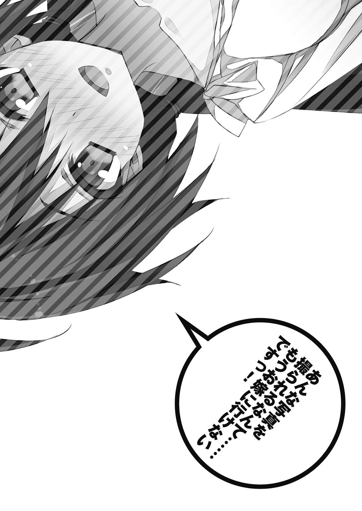
「あ、着きました......柏田君。こ、ここみたいです」
夏休み某日。
俺の隣で、桜井さんが携帯の地図を見ながらぎこちなく言う。
今俺たちの目の前には、五階建てくらいの縦に長い建物がそびえ建っている。
どうやらここが、俺たちの今日の目的地のようだ。
「へ、へえ......が、外観は、意外と普通の建物っぽいんだね......い、いや俺、は、初めてきたもんだから......」
俺は動揺を抑えきれず、しどろもどろになりながらそんなセリフを口にする。
「わ、わたしだって！ も、勿論、こんなとこ来るの初めてですよっ！」
桜井さんが俺の言葉に焦って言い返す。桜井さんも、俺と同じく動揺しているんだな......。
「じゃ、じゃ、じゃあ......入ろうか......」
「は、はい......」
俺は建物の入り口へと、一歩足を進める。
恥ずかしいことに、今俺の顔はかなり火照っているだろうというのが自分でも分かる。心臓はばくばく高鳴ってるし、変な汗もかいてきた。
こんなんで、俺今日、大丈夫かよ......。
俺たちが今まさに入ろうとしている建物の看板には、はっきりとこうあった。
『ラブホテル 貴賓館』
俺と桜井さんが二人でラブホテルに来ることになった経緯は、数日前に遡る......。
＊
俺と恋ヶ崎と桜井さんの三人で夏コミへ行った日の夜、わざわざ桜井さんから『途中暴走してしまってすみませんでした』というお詫びと、『映画楽しみにしてますね！』という内容のメールが来た。
俺が嬉しく思いつつもどう返信すべきか悩んでいると、続けてもう一通メールが来た。そのメールも桜井さんからのものだったが、俺と恋ヶ崎へ宛てた一斉送信メールだった。
『件名・お誘いメール☆ 本文・今日はお疲れ様！ 途中でとなコス行っちゃってごめんなさい実はそのとなコスで合わせしたレイヤーのお友達に、来週の火曜日コスプレスタジオ撮影会に誘われまして！ そのお友達とカメラマンさんでスタジオを予約したみたいなんだけど、広いスタジオだからコス友達呼んで来てもいいよって言われてるんだ♪ すごく立派なスタジオらしいんだけど、友達とカメラマンさんがスタジオ代ほとんど払ってくれるらしいから、かなり安い金額でいいって言われてて♪ もし良かったら、三人でコスしたいな～って思って！ どうかな?? 今からだと準備間に合うか分かんないから、合わせは難しいかもだけど』
......という内容の、コスプレ撮影会の誘いのメールだった。
恋ヶ崎を誘うのは分かるとしても、俺まで誘ってくれるだなんて......。七月のコスプレイベントのとき『今度桃ちゃんと三人でコスプレしよう』ってメールくれたのは、まんざら社交辞令でもなかったのか。
桜井さんの心遣いを嬉しく思う一方で、ビジュアル面で二人と大きく差が付いている俺なんかが、一緒にコスプレなどしてもいいのだろうか......という気持ちになってしまう。っていうか俺、七月のイベントで着た一着しかコスプレ衣装なんて持ってないし、その一着だって衣装と呼んでいいのか分からないほどショボすぎるもんだしなあ......。
などと一人で悶々と考え込んでいると、再び携帯が鳴った。恋ヶ崎からのメールだ。俺と桜井さん二人へ宛てての一斉送信になっている。
『今日ゎおつかれちゃん☆ コスプレスタジオ撮影会......って気になるー！ ......だけど、ぁたし来週の火曜日既に別の予定入っちゃってるんだ。。。まぢごめん～っ！』
既に来週の予定が入ってるとは、さすがリア充。一応俺も携帯のスケジュールを開いて確認したが、予想どおり来週の火曜日には何も予定など入っていなかった。
桜井さんにそれを伝えるべくメールを打っていると、再び桜井さんからメールが来てしまう。俺と恋ヶ崎への一斉送信で、
『そっか～了解☆ じゃあまた今度コスしようねっ！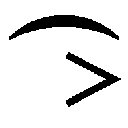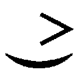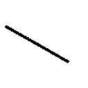』と打たれていた。くっ、どんだけメール打つの早いんだよＪＫ！ 完全に一人置いてきぼりを食らっている。いや、単に俺が遅いのか？
ようやく俺がメールを打ち終えて桜井さんへと送信した。
『今日はお疲れ～！ 俺は来週の火曜日空いてるから大丈夫だよ！ ただ、俺ボロ雑巾みたいなコス衣装しか持ってないけど大丈夫かね...？orz』
すぐに返信が来る。
『本当!? 嬉しい♪ 実は当日、友達とカメラマンさんは二人でずっと撮影してるっぽかったので、誰か一緒に来てくれないと暇になっちゃうな～って思ってたので、すっごく助かります！ って、ボロ雑巾てｗ』
......解せぬ。その当日来るカメラマンとやらは、桜井さんみたいな美少女コスプレイヤーを放置して、その友人ばかり撮影しているということなのか？ どんだけ見る目ないんだよ、そいつ。
『そうだったんだ？ せっかく行ったのに暇になっちゃうのは嫌だよね～...。いや、マジでボロ雑巾だからｗ 桜井さんも前のイベントんとき見たでしょ？ｗ』
『はいなんか、友達はカメラマンさんとコスプレＲＯＭ写真集を作るための撮影ずっとしてるみたいなんですよね。わたしは全然そういうのは作る気ないんですけど...。いや、衣装見たけど、ボロ雑巾は言い過ぎだよｗ』
なるほど、写真集の撮影......か。しかしそれにしたって、こんな美少女コスプレイヤーがコスプレしているのに誰もそれを撮影する人がいないだなんて、そんなに勿体ないことあっていいのだろうか。断じて許せない事態である。
『あのさ...もし良ければだけど......俺その日撮影に徹しちゃだめかな？ 雑巾衣装あんま着たくないし（ｗ』
それは俺の正直な気持ちであった。ぶっちゃけ、あんな衣装だしいくら立派なスタジオが使えると言ってもコスプレをしたいとはあまり思えない。だが、桜井さんのコスプレ姿の撮影だったらしてみたいなんて思ってしまったのだ。メールを送ってから、もしかして俺結構キモい提案をしてしまっただろうか？ と不安になる。すぐに返信が来たので慌てて開いた。
『えっ......いいんですか!? ありがとうございます！ じゃあ、楽しみにしてるね（*^_^*）』
メールを読んで俺は心底安心した。
その後桜井さんから当日の待ち合わせ時間と場所のメールが送られてきた。俺が家族で共用のデジカメしか持っていないけどそれで大丈夫かと聞いたところ、カメラは桜井さんが持ってくるので大丈夫とのことだった。あわよくば桜井さんのコスプレ姿を自分のカメラにも収めたいなどという俺の密かな企みはあっけなく消え去ったが、まあ仕方がない。
そんなわけで、俺はコスプレ撮影会で桜井さんのカメラマンを務めることが決定した。桜井さんのコスプレ姿を撮影できることになって、ついついテンションが上がってしまう。
翌週の火曜日。
待ち合わせ場所である川崎駅（スタジオの最寄り駅らしい）に到着すると、既に到着していた桜井さんが誰かと電話をしていた。
「......そっかー、うん......大変だね......うん、お大事に」
やがて、電話を終える。
「あ、柏田君......今、今日来る予定のコスプレ友達から電話があって......」
「え？ うん」
「今日急に熱が出ちゃったみたいで、来れなくなっちゃったみたいなんです」
「えぇっ!? マジで!?」
「本当に、勿体ないですよね......お金はその子とカメラマンさんがほとんど出してくれてるっていうのに......。悔しいから私の分まで撮影しまくってきて！ って言ってました」
「そっか～......」
「......なので、か、柏田君は嫌かもしれないですけど......今日は、ふ、二人っきりで撮影ってことになりました......」
「......えぇ!?」
桜井さんの口から出た衝撃の事実に、俺は驚く。
「あ、もう一人のカメラマンの方は、その友達を撮るっていう話で来る予定だったので、友達が来れないんだったら来ても意味がないので......わたし、その人と面識ないですし。もう友達が連絡済みみたいです」
「あ、そ、そうなんだ......」
桜井さんと二人きりで、桜井さんのコスプレ姿を撮影、か......。撮影するだけでも緊張しそうなのに、ますますやばいだろうなあ、俺......。
「で、では、行きましょうか！」
「あ、そうだね！」
桜井さんが携帯に保存しているらしきスタジオの地図を出す。
「駅から徒歩十分らしくて、場所はここなんですけど......」
「へえ、どれどれ......え!?」
桜井さんの携帯を覗き込んで地図を見た瞬間、俺はぶったまげた。
携帯の画面にはスタジオの地図が表示されているはずなのだが......どういうわけか目的地のところに『ラブホテル・貴賓館』という文字があったのだ。
「ラブホテル!?」
一体どういうことだ。今から行くのはスタジオじゃないのか？
「あっ......ご、ごめんなさい、言い忘れてて......実は、今日のスタジオは......ホテルなんです......」
「スタジオが、ホテル......!?」
「はい。今ちょっと流行ってるんです、ホテルでコスプレ。ホテルっていってもスタジオ並に内装が立派で撮影映えするところを、業者がコスプレイヤー向けにスタジオとして貸し出すっていうサービスなんです。撮影用の機材とかも準備されてて」
「へえ～、そんなんあるんだ......」
な、なるほど......そういうことか、ああ、びっくりした......。
......ということはつまり、今日桜井さんと二人きりで、ラブホテルで、桜井さんのコスプレ姿を撮影する、と......!?
二人きりで撮影する、ってだけで動揺してたのに、場所がラブホテルって......。
「あ、で、でも！ ラブホテルっていっても、ホントにスタジオとして使うだけなんで......もう、今日行くのはラブホテルじゃなくてスタジオって思いましょう！ 思い込みましょう！」
桜井さんが突然顔を赤くしてそんなことを言い出した。やっぱり、桜井さんも俺と同様に突然二人きりで撮影することになってしまって、しかも場所はラブホテルだもんなので、動揺し、緊張しているのだろう。
そりゃあそうだよな、いくらなんとも思ってない相手とはいえ、同い年の男とラブホテルに二人きりで行くだなんて、緊張もするだろうし、怖いとか不安......っていう気持ちもあるのかもしれない。
まあそんな不安抱かなくても、俺に何かする度胸なんてこれっぽっちもないのだが。
「そ、そうだね！ スタジオでコスプレ撮影する、それだけだもんね！」
桜井さんを不安にさせまいと、俺もなるべく明るく言った。
そんなわけで、桜井さんのコスプレ撮影会inラブホテルが始まったのだった。
ラブホテル・貴賓館の扉を開けてホテルの中に入る。
これが、ラブホテル......生まれて初めて入ったが、まあ普通のホテルと大きくは変わらない......かな。壁にパネルがあって、部屋内の写真が表示されている。普通に利用する人たちは、この中から部屋を選んでパネルをタッチするのだろうか。
フロントに行くと、何の配慮なのか受付の女性の顔の上半分が見えないような作りになっている。
「すみません、今日スタジオ利用として予約してたものなんですけど......」
桜井さんが、口だけしか見えていない受付の女性に向かって声をかけた。
「あ、はい、本日スタジオとしてご予約の山田様ですね？」
「あ、実は今日予約した山田が体調不良で来られなくなりまして......」
桜井さんは慌てて答える。
「あ、そうでしたか。では本日のご利用は......お二人ということで宜しかったですか？」
「はい、大丈夫です」
受付の女性の口から撮影する上での注意事項（靴を履いて撮影する場合は裏側を綺麗に拭くように、備品などを壊した場合は弁償してもらう、インテリアなどの位置を動かしたら最後に元に戻すように......など）を告げられてから、注意事項・利用規約が書かれた紙を渡され、それに署名するようにということだったので桜井さんが署名した。署名した用紙を返すと、今日俺たちが利用する部屋の鍵を渡される。
「それでは、ごゆっくりお楽しみ下さい」
「はい、ありがとうございます」
桜井さんが鍵を受け取り、俺たちは奥にあるエレベーターで俺たちが利用する部屋のある四階まで上がることにした。
エレベーターが来たと思ったら、中からカップルが降りてきた。今はまだ午前中なので、宿泊した客が帰るところなのだろう......。
き、気まずい......。当然向こうからは、俺たちもカップルで、これから......そういうことをするって思われてるんだよな......。
カップルが降りた後にエレベーターへ乗り込む。
「四〇五号室......みたいです」
「そ、そっか......」
俺たちはそれだけ会話を交わすと、互いに無言になった。
シーンとしているエレベーター内。ああ、めっちゃ気まずい。
スタジオでコスプレ撮影するだけ......さっき自分でそう言ったが、やはり完璧にそんな風に思い込むだなんて無理だ。だって、どう見てもラブホテルなんだもんよ。ラブホテルに桜井さんと二人きりで......ってどうしても変に意識してしまって、変な汗が次から次へと流れ出てくる。
やがて二人とも無言のまま四階に到着し、エレベーターを降りて四〇五号室へと向かう。
すぐに部屋が見つかり、桜井さんが鍵をさして扉を開けた。
「わあっ......すご──いっ！」
桜井さんが歓喜の声をあげる。
それもそのはず、部屋の中は思っていた以上に豪華な内装だった。
ここは本当にラブホテルなんだろうか？ と疑問に思ってしまうほどで、まるでヨーロッパの宮殿......（行ったことないけど）といったら大げさかもしれないが、それに近い雰囲気を作り上げていた。
一室のはずなのに上と下に分かれており、下の階にはベッドルームと大きな鏡のあるソファスペースがあり、階段を挟んで上の階が絨毯敷きの通路になっていた。
階段も鏡もソファーも豪華で、天井にはシャンデリアが吊されている。
「すごいすごい、お城みたーいっ！ ホームページで見た写真より迫力あるーっ！」
桜井さんが先ほどまでの静かな様子から一転して、ハイテンションになってはしゃぎまくっている。
「ほんとすごい......ね。ラブホなんて思えない......本当にスタジオみたい」
俺も正直な感想を漏らす。
ここ、ラブホテルなんだよなあ......？ こんなところでそういうことしても、絶対落ち着かないだろうな......なんて密かに思ってしまった。
「こんな豪華な場所で撮影できるなんて......早く撮影したーいっ！ 早く着替えちゃお！」
桜井さんはテンション高いまま、着替える場所を探して室内をうろつく。下の階にシャワールームと脱衣所があったらしく、脱衣所で着替えることにしたらしい。衣装が入っているであろうカートを、室内では転がしてはいけないので持ち上げている。
重そうに持ち上げて運ぼうとしている桜井さんの姿を見て、俺は慌てて桜井さんに代わってカートを持ってあげる。
「あ、す、すみません......ありがとうございます」
「え？ いやいや」
そのままカートを脱衣所へと運んだ。
「じゃあ、着替えちゃいますね！」
「うん、よ、よろしく......」
俺はぎこちなく返事をしてから脱衣所の扉を閉めて、元いた場所へと戻る。扉を隔てた向こうで桜井さんが着替えていると思うと緊張するし、少しばかり興奮もしてしまう。桜井さんはひたすらスタジオにはしゃいでいてもうあまり緊張してなさそうだったな。......もしかして俺、男として意識されていないんだろうか......？ なんて、少し落ち込む。
彼女が脱衣所で着替えている間、部屋の中をじっくりと見渡す。下の階と上の階両方に撮影用の照明と脚立、三脚が置かれていた。あれを使用して撮影するのか、随分本格的だなあ。今日俺はカメラマンとして来たわけだから、きちんとその役割を果たして少しでも綺麗な写真を撮影してあげなくては。写真を撮ることなんて普段ほとんどないが、きちんといい写真を撮ることができるだろうか。
そういえば、桜井さん今日は何のコスプレするんだろう。七月にイベントで着てたボーカロイドの巡音リカかな？ 何にせよ、彼女のコスプレ姿を見るのが楽しみだ。
「お、お待たせしましたあ......」
「あ、おつか......!!」
俺は、着替え終えた桜井さんのコスプレ姿を見て驚いた。
俺も以前イベントで主人公のコスプレをしたヒーローものアニメ『サイキッカーズ』に出てくる、ヒーローの一人にしてヒーロー界のスーパーアイドルと呼ばれている、『パープルローズ』という美少女キャラクターのコスプレだった。
桜井さんは、恐ろしいくらい『パープルローズ』のコスプレが似合っていた。全体的に名前の通り紫色を基調とした衣装なのだが、ほぼ水着並み......いや下手したらそれ以上に肌の露出度が高い。胸はがっつり開いてるし......そういえば、この元のキャラクターよりも桜井さんの方が胸が大きいような気がするな。
「柏田君がサイキッカーズのおじさんのコスしてたじゃないですか。だから、いつか合わせしたいなって密かに勝手に思ってて、作っちゃいました！ 桃ちゃんドラゴンジュニアのコスしてくれないかなぁ～！ そしたら三人で合わせできるのに......」
「えっあぁ、そうなんだ......！」
おじさんというのは、俺がコスプレした主人公のキャラの愛称だ。
彼女は恥ずかしがることなく嬉しそうにそんなことを話す。こんなに肌を露出しているのに、恥ずかしくないのだろうか？ 魅惑的すぎて、正直こっちは目のやり場に困る。
「え、えっと、じゃあ時間勿体ないし早速撮ろうか！」
「はい！ 宜しくお願いします！ あ、そうだ、カメラ......」
桜井さんが自身のカートからカメラを取り出して、撮影のための設定をしている。......って、随分本格的なゴツいカメラだなあ。レンズもでかいし......。
「すごいね......それって、一眼レフってやつ？」
「はい！ 今日のために、お小遣いで買っちゃいました！ 前からずっと欲しかったんですよね～、一眼レフデジカメ。はい、これでお願いします！」
設定を終えたようで、俺にカメラを渡してきた。今日のためにわざわざ買っただなんて、気合い十分だなあ。
まずは、一階にある豪華な赤いソファーで撮影することにした。照明を桜井さんに当たるように移動させる。
「ええっと......じゃあ、こんな感じで......お願いします」
桜井さんがソファーに座ってポーズを撮る。変身後のヒーローのときは女王様キャラという設定なので、足を組んでかっこよく座っている。
「あ、うん、じゃ、じゃあ......撮るね」
ああ......既にやばい、エロすぎる、エロすぎるよ桜井さん......！ 胸が......太ももが......眩しすぎる......！ ......って、見とれてる場合じゃない！ 俺ははっと我に返って、撮影するべくカメラの液晶越しに桜井さんを見る。
......すごい、めちゃくちゃ絵になってる。背景が素晴らしいってのもあるし、何よりコスプレ姿の桜井さんが芸術的に美しい。ポーズもバッチリ決まってるし。
俺は一番いい構図で撮れるようにカメラを移動させて、シャッターを押す。
「すごい！ すっごい絵になってるよ！」
俺は自分が今撮影した写真を確認して、感動の声をあげた。
「えっ!? ほ、ほんとですか!?」
桜井さんがカメラの液晶を覗き込む。
「わー、すごい！ やっぱ背景がすごいと違うな～！」
桜井さんも俺が撮った写真に満足してくれたようで、安心する。
それから、続けてソファーやソファーの奥の鏡を使って何枚か撮影した。
「あ、そのまま目線外して、もうちょっと顔をこっち側に......あっそうそうそう！ そのままで！」
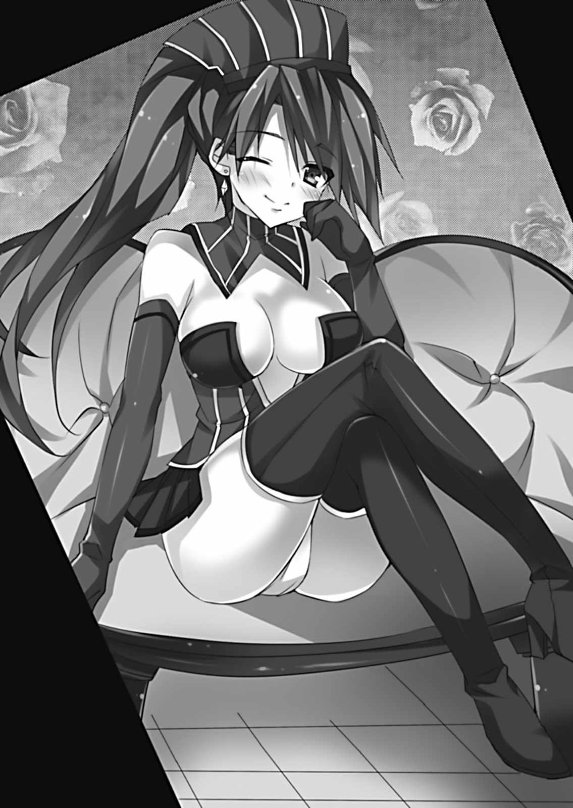
やばい、美少女の写真撮影がこんなに楽しいものだなんて思ってなかった。カメラにハマる人の気持ちが今日でよく分かった気がする。俺は夢中になって撮影した。
「柏田君、ほんとのカメラマンさんみたいですね......！ すごく頑張って撮ってくれて......ありがとうございます」
桜井さんが嬉しそうに礼を言ってくれて我に返る。やべ、撮影に夢中になるあまり我ながらすごいテンションが上がってしまった......これじゃあただのカメラ小僧だよな......キモがられないレベルにテンションを抑えないと......。
「じゃあ、次別の場所で撮ってみる？」
この場所では思う存分撮影できたので、撮影場所の移動を提案する。
「あ、はい」
次の撮影場所をどこにしようかと部屋の中をキョロキョロと見渡す。
上の階へ続いている階段が目にとまった。とても豪華な階段で、ここで撮影したらとても絵になるだろうと感じた。
「じゃ、次階段とか......どうかな？」
「あ、いいですねーっ！」
撮影するため、桜井さんが階段の方へ移動する。......気のせいだろうか、なんか足下がおぼつかないような......。
足下を見ると、とてもヒールの高いロングブーツを履いていた。もしかして、これのせいで歩きにくいんだろうか。
「ヒール普段履き慣れてないんで、フラついちゃって......」
そう言いながら階段を上る桜井さんの後ろ姿を見て、またしても邪な気持ちがわき上がって来る。ほぼ水着のような衣装なので、俺の位置から......お尻の形がはっきり見えてしまうのだ。
......落ち着け柏田直輝。落ち着け落ち着け落ち着け。今日の俺の使命を思い出せ。こんなに興奮した状態ではカメラマンなんか務まらない。
この際、とても勿体ないけれどもういっそ見ない方がいいと思い、目線を逸らした。
「えーと、場所、この辺でいいですか......って、柏田君？」
「あっ、うん！ そうだね！」
桜井さんの声に慌てて上を向く。桜井さんは階段の上の方にいて、もう身体をこちらに向けていた。
「じゃあ、撮影するね！」
俺はカメラを桜井さんに向けて、液晶を見る。
「ポーズは、階段から降りてくるような感じでいいですか？」
「あ、そうだね」
俺の返答に、桜井さんが階段を降りようとした、そのとき。
「キャッ」
「えっ......」
桜井さんが階段を一段踏み外し......
「きゃああああ────っ」
そのまま、階段から落ちてきた。
俺はどうにか桜井さんを受け止めようとしたが......
無理で、落ちてきた桜井さんの衝撃にそのまま倒れてしまった。
「うぅっ......」
固い床に頭をぶつけて後頭部に痛みを感じた。
......なんだ？ 顔の上に柔らかい何かが乗っかってる......。
「きゃあああ、柏田君、大丈夫ですかっ!?」
桜井さんの声が聞こえて、俺の視界が明るくなる。次の瞬間、突然桜井さんの大きな胸が目の前にあった。、桜井さんが慌てて起き上がり、俺の上から退く。
......つまり、今の柔らかいのって......俺の顔に当たってたのって......桜井さんの、胸!?
「ああっ！ 柏田君......は、鼻血が......！ ごめんなさい！ わたしの下敷きになって助けてくれたせいで......本当にありがとうございます！」
桜井さんがテーブルの上にあるティッシュを持ってきて、俺の鼻血を拭いてくれた。
いや、鼻血が出たのは下敷きになったせいではなく興奮したせいなんだけど、どうかそのまま気付かないでくれ。そもそも頭打ったのに鼻血出すなんておかしいんだけど、桜井さんがちょっと天然入ってくれてて助かった。
「本当にすみません、わたしって鈍くさくて......そういえば、初めて会ったときも階段から落ちたわたしの下敷きになってくれましたよね......」
ああ、なんかデジャブを感じると思ったら、偶然にも桜井さんと初めて会ったときと同じシチュエーションだったな。
「いや、大丈夫......桜井さんは、平気？」
本当は後頭部を触ったら軽くたんこぶが出来ているような気がしたのだが、今みたいなハプニングだったら何個たんこぶが出来ようが大歓迎です。
「わたしは無事です！ 柏田君が、助けてくれたので......」
桜井さんはなぜだか顔を赤くして、俺を見つめた。
「じゃ、じゃあ、撮影を続けようか！」
俺はティッシュを丸めて鼻に詰めた。
「え......柏田君、大丈夫ですか？ 少し休んだ方が......」
「いや、全然大丈夫！ なんともないし、時間もったいないし！」
「そ、そうですか......分かりました、次はもう二度と落ちないように足下に気をつけます！」
それから再び桜井さんが階段を上り、降りてくるところを何枚か撮影した。先ほどと同じように完成度の高い写真を何枚も撮ることができ、俺は満足した。
「ありがとうございます！ もう十分たくさん撮ってもらえたので、この衣装は満足です」
「そう？ ネットにアップできる写真が少しでも多くあるといいんだけど......。じゃあ、次は二着目かな？」
「はい、でも、その前に......」
桜井さんは自身のカートのチャックを開けて、何かを取り出した。
「これ......今日撮影してくれたお礼......になるかどうか分からないんですけど、良かったら着てくれませんか？」
そう言って取り出したのは、俺が七月にコスプレイベントで着た『サイキッカーズ』の主人公『おじさん』こと、益明のコスプレ衣装だった......のだが、俺が持っている衣装の何倍も完成度が高いものだった。
「柏田君、イベントで着たおじさんの衣装を気に入っていないようだったので......余計なお世話かもしれないですけど、作ってみたんです」
「えぇっ!? わざわざ、作ってくれたの!?」
俺は桜井さんの手からコスプレ衣装を受け取って、衣装を広げてみる。やはり、とても出来がいい。俺が持っているショボいアレと同じ衣装だなんて思えないほどだ。桜井さんって、本当に裁縫の腕がいいなあ。夏コミ後メールくれた日からあまり日数なかったっていうのに、短期間でこんな素晴らしい衣装を完成させてしまうだなんて......。
「はい！ パープルローズは変身後でおじさんは変身前になっちゃいますけど、よ、良かったら......二人での合わせ写真も撮りたいな、って思って......。三脚もあるみたいなので、セルフタイマーで撮れますし」
「あ、いいねえー！ わざわざそのために作ってくれたんだ......ありがとう」
俺が礼を言うと、桜井さんは恥ずかしそうに笑った。
それから俺は、先ほど桜井さんが着替えていた脱衣所へ行ってコスプレ衣装に着替えた。
着替えを終え、脱衣所にある鏡を見る。......ううん、衣装は完璧なのだが、やはり俺の顔が残念過ぎてコスプレとしての全体の完成度は低い気がするな......。髪型も全然違うし。桜井さんが衣装を作ってきてくれたのなら、あのショボいヅラでも持ってくるべきだったな。
しかし俺が脱衣所から出てくると、なんと桜井さんが手元にヅラを持って櫛でとかしていた。そのヅラは、どうやら益明のヅラのようだ。桜井さん、ヅラまで用意してくれたなんて......。
「あ、ありがとう！ ウィッグまで準備してくれたんだ......」
ヅラだって安いものではない。衣装の生地代、ヅラ代......一体どのくらいお金をかけてくれたのだろう。いくらメイド喫茶でバイトしてるって言ったって、かなり負担が大きかったのではないだろうか。
「いいえ！ じゃあ柏田君、こちらへ来てくれますか？」
桜井さんに言われた通り、桜井さんの近くまで行く。一体何をするのだろうと思ったところ......桜井さんは、カートからメイク道具を取り出した。
「化粧!?」
「はい！ 柏田君さえ良ければ、ですけど......男の人も、コスプレのときはメイクするみたいなんですよ？」
「えっ、でも俺、メイクの仕方とか分からないんだけど......」
「わたしがしますよ！ おじさんのコスプレメイク勉強してきましたから！」
「ええっ!? マ、マジで......!? じゃあ、お願いしようかな......」
「はい、喜んで！」
桜井さんにウィッグをかぶる前につけるためのウィッグネットを渡され、ネットをかぶる。どうやら、ウィッグネットを付けてからメイクをした方が、髪が邪魔にならなくて良いらしい。鼻に詰めていたティッシュを取ると、もう鼻血は止まっていた。
桜井さんが真剣な表情で、俺のメイクを始めた。こんな美少女に至近距離に来られて正直心臓の高鳴りが止まらないが、必死で耐えた。俺の顎につげひげまで付け始めて、かなり本格的だ。
二十分程経過しただろうか。桜井さんがメイクを終えたようだ。
「お疲れ様でした、じゃあ最後にこのウィッグをかぶって下さい！」
「あ、うん......」
桜井さんに渡されたウィッグをかぶる。
「あ、ちょっと動かないで下さいね」
桜井さんが、俺のかぶったウィッグにワックスなどを付けてセットし始めた。
「!?」
俺の目の前に、桜井さんの豊満なバストが......ウィッグをセットしているので腕を動かしており、その度に胸が微妙に揺れている。──おおっと、まずい、せっかく止まったのにまた鼻血が出る。俺は咄嗟に目を閉じた。
「よし、完璧！」
桜井さんの声に、俺は立ち上がってソファーの奥にある大きな鏡を見た。
......すげえ!! 何がって、桜井さんのコスプレ技術、半端ねえ......！
前回したコスプレと同じキャラのコスプレだなんてとても思えない。というかむしろ、これが俺だなんてとても思えない。ウィッグもメイクも衣装も完璧で、おじさんに近い誰かが、鏡に映っている。
「す......」
「すご──いっ！ おじさんそのものですっ！ 完璧ですっ！」
俺がすごい、という前に、桜井さんが興奮気味に叫びだした。
「はあ、はあ......早く撮影したい！ 撮影していいですか!? やっぱり思った通り、ちゃんとコスプレすれば柏田君、すっごくおじさん似合いますよ！」
桜井さんの変わりように少しばかり動揺する。お、お世辞でこんな風に褒めてくれているのだろうか？ しかし、この興奮っぷり、絶対演技などには見えない......。
「わたし実はっ！ あのイベントのときはサイキッカーズのことあまりよく知らなかったんですけど、あの後ＤＶＤでアニメ全話見たんですよ！ そしたらすっごくハマっちゃって！ もうおじさん最高すぎです！ 最近同人誌も買いまくっててー！」
「あ、そうだったんだ......」
この興奮っぷりは、おじさんに対する愛だったのか......。
「結構おじさんのコスしてる人多いんですけど、女性が多くて......わたし個人的には、おじさんは、絶対男の人がコスした方が似合うと思うんです！ もう、柏田君のおじさんは最高です！ すっごい似合ってます！」
桜井さんは相変わらず興奮気味なまま、早口で言い切った。まさか俺のコスプレにこんなに喜んでくれるなんて思っていなかったので、ついポカーンとなってしまう。
「じゃ、じゃあ、三脚でツーショット撮影を......」
「あーっその前に！ 個人的にピンショ撮らせて下さい！」
ピンショというのはピンショットの略だろうか。俺がいいけど......と言った瞬間に桜井さんが俺にカメラを向けて激写しまくった。
「次！ こっち来て下さい！ ポーズはこう！ 視線はこっち側で！」
桜井さんの的確すぎるポーズ指定に動揺しつつも、なんとか応じる。この娘、俺の何倍もカメラマンの素質あるな......。
ひとしきり撮影を終えると、ようやく桜井さんが満足したようで、上の階でツーショット撮影をすることになった。
「......もうわたし、いつ死んでも悔いはありません......」
俺が三脚にカメラをセットしていると、桜井さんが遠い目をしながら満足げにさりげなく恐ろしいことを言った。
「......え、えっと、もうちょっとこっち側に来てくれる？」
カメラの液晶を見ながら、桜井さんに位置を指示する。
「じゃあ、十秒でセルフタイマーセットするね」
セルフタイマーをセットして、俺も慌てて桜井さんの隣へと移動する。
「ポーズ、どうしよ......」
「左手でキャップ掴んで、右手は腰に当てて、左足は軽く曲げて下さい！」
桜井さんの細かすぎるポーズ指定に若干驚きつつも、言う通りにポーズをとる。
『三、二、一──』
シャッター音がして、撮影された。
「うまく撮れたかな......」
俺がカメラを見に行こうとすると、
「はあ......わたし今日、今までのコスプレ人生の中で一番幸せかもしれません......」
隣で桜井さんが、幸せそうにため息をつきながらそんなことを言った。
「すごく安い値段でこんな素敵なスタジオを占領して撮影できるってだけでも幸せなのに......柏田君とコスプレできるなんて......」
桜井さんはうっとりした表情でポーッとなっている。
「え!?」
柏田君とコスプレできるなんて......!?
それって、俺とコスプレできてそんなに嬉しいってこと......なのか？
驚いて俺が桜井さんの顔を見ると、
「......あ、い、いやその！ わたしおじさん大好きなんで、おじさんコスと合わせできて幸せだな～......って！ そ、そういう意味です！」
慌てて顔を赤くして、手のひらを顔の前で左右に振った。......あ、なんだ、そういうことね......。
「っていうか、お礼に作ってきたとか言っておいて、これじゃ完全にわたしへのご褒美ですよね......すみません......」
「えっいや、そんなことないよ！ このツーショット写真、データもらえたりする!?」
本当は俺が撮影した桜井さん単独の画像データも非常に欲しいが、さすがにそんなことを言う勇気はなかった。
「え、は、はい！ 勿論！」
「じゃあ十分ありがたいよ」
ツーショットとはいえ桜井さんのコスプレ姿の写真がもらえるのであれば、それだけで今日来た甲斐がある。
「あ、あと勿論、柏田君のピンショットも全部データあげますから！ 何だったら、フォトショで明るさ調整とかレタッチもしますよ！」
「フォトショ？」
「写真を加工するソフトです。大抵のコスプレイヤーは、それで綺麗にレタッチしてからネット上にアップしたりするんですよ」
「へぇ～、そうなんだ。......あ、でも俺はレタッチは大丈夫」
「そうですか？」
撮ってもらった自分のコスプレ画像は確かに少し見てみたいが、ネット上にアップだなんて恐ろしいこと絶対にする気はないので、レタッチの申し出は断った。
それから更に数枚ツーショット写真を撮影して、桜井さんが満足したようなので次の衣装に着替えることとなった。
「あの......実は次の衣装なんですけど、このスタジオでコスプレ衣装を無償で借りられるみたいなんです。キャラクターものじゃない普通のコスプレなんですけど。で、せっかくだから借りてみようかな、って思ってて......」
「あ、そうなんだ」
テーブルの上にクリアファイルがあり、そこにレンタル可能衣装一覧が載っていた。
「この中から選んで電話すれば、フロントの人が持ってきてくれるみたいです」
桜井さんがテーブルの上にファイルを広げて、どの衣装を借りるか吟味している。
「へー、たくさんあるんだね」
セーラー服にメイド服、ナース服にチャイナドレスにキャビンアテンダント......衣装の種類は豊富である。どれを着ても似合うだろうなあ。
「あのっ......」
「ん？」
桜井さんが顔を赤くしながら、俺の方を向いた。
「よ、良ければ、なんですけど......この中から、柏田君が......衣装選んでくれませんか......？」
「えぇっ!?」
「いえ、その......自分じゃ迷っちゃって、決められそうにないので......」
俺が衣装を選ぶ？ そんなことしていいのか？
今一度ファイルのコスプレ衣装の写真に目をやる。うーん、すごく悩む......ぶっちゃけ着て欲しいのはラムちゃん風ビキニとかだけど、さすがにそんなこと絶対言えない。このお城風の背景のことも考慮しなければならないが、この背景に合いそうな衣装なんてそんなにないしなあ......。メイド服とかだったらそれなりに合いそうだけど、桜井さんのメイド服姿はメイド喫茶で見てるからできれば他のコスプレを見てみたいし......。あぁ、シスターとかゴスロリもまあ似合いそうか......うーん......でも......。
「せ、セーラー服......とか」
俺は桜井さんの顔色を窺いながら、ピンク色のセーラー服の写真を指さした。
ぶっちゃけ、この背景になんて絶対に似合いそうにないのだけれども......完全に、俺の個人的要望だった。桜井さんの、セーラー服が見てみたい！ うちの学校の制服はブレザーだが、俺は制服だったらブレザーよりもセーラー派なのだ。
「あ、いいですね～！ ピンクで可愛い！ じゃあ、この衣装にします」
桜井さんもノリ気でそう答えてくれたので助かった。
桜井さんが電話でフロントに希望衣装を伝えると、すぐに衣装を持ったフロントの人がやってきた。桜井さんが衣装を受け取り、再び脱衣所で着替える。
その間に俺も、ウィッグを外しコスプレ衣装から私服に着替えた。コスプレ衣装だと少し動きにくいし、せっかく桜井さんが作ってくれたので汚したり破いたりしたら嫌だと思ったのだ。
化粧は......どうしよう。桜井さんがメイク落としを持っているかもしれないから、後で借りることにするか。
俺が着替えを終えてから数分後、桜井さんも着替えを終えて脱衣所から出てきた。
いつもの二つ結びで、メイクもパープルローズ風から普通のメイクに変わっている。長い前髪をヘアピンで留めていた。
桜井さんはスタイルはいいが顔はどちらかといえば童顔なので、ピンク色のセーラー服がとてもよく似合っていて、可愛かった。
「へ、変......ですかね？」
さっきまではあんなに露出度の高い衣装でもそれほど恥ずかしそうにしていなかったというのに、この衣装になった途端スカートの裾を押さえて、恥ずかしそうにそわそわしている。
「よ、よく似合ってる......と思うよ」
スカートの丈が短くて、ドキドキしてしまう。
「ほ、本当ですか......？」
桜井さんが恥ずかしそうに俺の顔を見る。
「あ、柏田君も着替えたんですね」
「あ、うん......」
どうして着替えちゃったんですか!? なんて文句を言われたら嫌だなあと思っていたが、何も言われなかったので安心する。
「じゃあ、撮影しよっか......どこで撮りたい？」
「え、えっと......どこがいいでしょうかねえ......」
「まだ上の階ではあんまり撮ってないよね。上で撮ってみる？」
上の階では、まだツーショットのときくらいしか撮影していないので勿体ないと思いそう口にしたのだが、
「う......上の階!?」
桜井さんが、突然驚いた様子で聞き返してきた。
「う、う、上の階は......ちょっと......」
苦笑いを浮かべて焦った様子で言う。
「あ、そう？」
一体何をそんなに焦っているのかが気になったが、深く突っ込まないでおいた。
「じゃあ......下の階でセーラー服が似合いそうな場所って言ったら......」
お城風の階段もソファーも鏡も多分似合わなそうだし......あ......。
「ベッド......とか？」
言ってから、まずったと思った。ベッドで撮影って、グラビア撮影じゃあるまいし......嫌がられるだろうか......。
「ベ、ベッド!? ......確かに、他の場所だとどうにも合わないですもんね......そうですね、ベ、ベッドで撮りましょうか」
桜井さんは少し驚いている様子だったが、ベッドで撮影するという意見に賛同してくれた。しかし、相変わらずなんだか落ち着きがない。
ベッドルームへ移動すると。そこは白い壁の少し狭い部屋で、真ん中に白いお姫様ベッドが一つ置いてあるだけのシンプルな部屋だった。だが、この部屋であればピンクのセーラー服で撮影してもおかしくはないと思う。
「お姫様ベッドだ～！ 可愛い～！」
「へぇ～、こんな立派なベッド初めて見た」
俺は珍しがってベッドに近づく。すると、枕元に何かが置かれていることに気づいた。
「!?」
それは、黒くて小さい正方形のビニール袋に入った、円形の......
ちょ、こ、これって......所謂......！
「柏田君、どうかしましたか？」
「えっ!? い、いや、別に何も！」
桜井さんが気づく前に、慌ててソレを枕の下に隠した。桜井さんに発見されなくて、良かった......。発見されてしまっていたら、なんとなく気まずくなってしまうこと間違いない。ここがラブホテルだということを完全に忘れてたぜ......。
「あ、じゃ、じゃあ......乗ってもらっていいかな......」
気を取り直して、俺は作り笑いを浮かべつつベッドから少し離れて、桜井さんに指示する。
「あ、はい......」
桜井さんが、ベッドに腰掛けた。俺はカメラを向けてシャッターを切る。
......ううん、なんだろう......桜井さんの表情が、先ほどのパープルローズのコスのときに比べて硬い。それに、なんだかやたらとスカートを押さえたポーズが多いな......。
何枚か撮ったのだが、桜井さんは依然座ったポーズのままだった。先ほどまでのパープルローズコスの桜井さんであれば、俺が言わなくてもどんどん自分からポーズを変えてくれたのだが......。
「あの......そろそろポーズ、変えないの......？」
仕方なく、俺から提案してみる。
「えっ......あ......そ、そうですよね......」
桜井さんは俺の言葉に苦笑いを浮かべながら、そっとベッドの上に横になった。
横になった桜井さんにカメラを向けて、撮影を再開する。
相変わらず、表情もポーズも硬い。笑顔を作ってはいるものの、液晶で見ても分かるくらい不自然な作り笑いだ。
数枚撮った後に、今まで撮った画像を軽く見返してみる。ううん......やはり、先ほどのパープルローズコスの時の写真の方がずっといい写真が多い。それは被写体の善し悪しではない。ピンク色のセーラー服を着た桜井さんだってパープルローズコスのときと同じくらい可愛くて魅力的なのに、表情とポーズが別人のように硬いのである。一体どうして突然こんな風に変わってしまったのだろうか。......もしかして、パープルローズは既にキャラがあるから大胆にポーズをとれるが、特にキャラがないこういった衣装だと途端恥ずかしくなってしまうのだろうか。
「柏田君......どうしたんですか？」
俺がカメラの液晶を見つめたまま固まっていたので、不思議に思った桜井さんが声をかけてきた。
「あ、えっと......」
俺は一瞬、言うべきかどうか迷った。しかし、今日の俺の役割は桜井さんのカメラマンだ。いい写真を一枚でも多く撮影してあげなくてはいけないのだ。そのためには、やはりこのままじゃダメだ。せっかくいいスタジオで被写体も素晴らしいのだから、勿体ない。
「その......なんだろう......もしかして、俺の勘違いかもしれないんだけど......さっきのパープルローズコスのときの方が、結構ポーズとか生き生きしてた、っていうか......。いや、今が悪いってわけじゃないんだけど......」
「......！」
桜井さんは俺の言葉に少し驚いている。
「あのさ、もしかして桜井さん......今、さっきみたいなキャラのコスプレじゃなくて素に近い状態だから、結構緊張してるのかな？ って思って......もしそうだったら、俺なんか相手に、全然緊張する必要ないから！ さっきみたいに積極的にポーズとかとってくれた方が、いい写真になると思うし......。......って、なんか偉そうにごめん......」
自分で言ってて恥ずかしくなってきたが、なんとか最後まで言い切った。
桜井さんは俺のセリフに驚いて少しの間黙っていたが、やがて笑顔になって、
「分かりました！ そ、そうですよね......せっかくこんなにいいスタジオで、柏田君が撮影してくれてるんだし......。分かりました、もう恥ずかしがるのやめます！」
それから、桜井さんは別人になったようにいい表情になった。ポーズも、先ほどまではスカートに手を置いているものが多かったが、きちんと撮影映えするポーズをとってくれるようになった。
──可愛い。やっぱり、桜井さんは可愛い。キャラクターのコスプレをしていなくったって、前髪で顔を隠したりさえしていなければ、抜群の美少女だ。
桜井さんは撮影していくうちに、先ほどのパープルローズのときと同じように......いや、下手したらそれ以上に、大胆なポーズをとってくれるようになった。
俺は夢中になって撮影した。撮影しすぎて気持ち悪いかもしれないが、今日の俺の役割はこれなんだ。だから、キモいと思われようが、一枚でも多くいい写真を残してあげなければいけないのだ。......と、自分に言い聞かせて。
突然、液晶に映る桜井さんが恥ずかしそうな顔になった。頬を赤らめて、少し驚いているような表情だ。これはこれで魅力的な表情だが、一体何が......。
「あっ！ ......ご、ごめん！」
俺は撮影に夢中になるあまり......なんと、桜井さんと同じベッドの上に乗っていたのである。勿論覆い被さって撮ったりなんかはしていないが、ベッドの上にひざ立ちになっていた。それでも、同じベッドの上に乗ってしまったことには変わりない。同じ、ベッドの上に......俺は瞬時に自分が耳まで赤くなったのが分かり、すぐにベッドの上から降りた。
「あっ、い、いえ......だ、大丈夫です......。さ、撮影のため、ですから......。あんまり遠くからばっかり撮っても代わり映えしない写真ばっかになっちゃうし、至近距離でも、何枚か......撮った方が、バリエーション増えると思う......ので......」
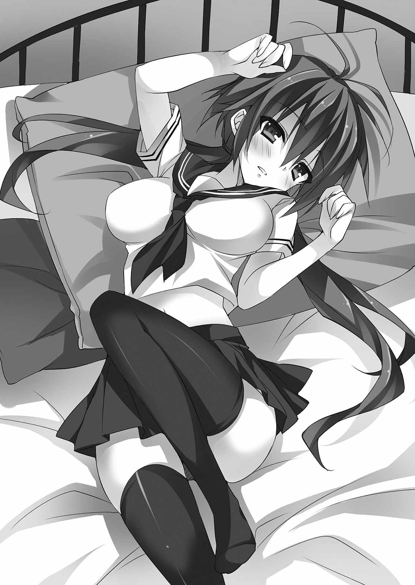
桜井さんは頬を赤らめたまま、俺から視線を逸らしてものすごく恥ずかしそうに、そう言った。
「あ、そ、そう......？ ......じゃあ......」
俺は桜井さんのお言葉に甘えて、再びベッドの上にひざ立ちになった。
ほ、本人が望んでるんだから、いいんだよな......？ 上から、ベッドの上に横たわる桜井さんを撮影する。
桜井さんは、先ほどと打って変わって......頬を赤らめて、すごく恥ずかしそうな表情になった。やっぱり、いくらなんでも俺の距離が近い......んだよなあ？ しかし、同じ緊張している表情でも、さっきまでの不自然な作り笑いとは違い、これはこれで色っぽくてとても魅力的な表情だと思ったので、そのまま撮影を続ける。俺自身も顔が火照って動悸が激しくなっているが、悟られないようにしないと......。
「あ、わたし......ま、また表情硬くなってますか......？」
「え!? いや......確かに硬いと言えば硬いかもしれないけど、これはこれで......」
「そ、そうです......か......？ あ、え、えっと......普段、女の子のレイヤー同士でしか撮影しないし、カメラマンさんに撮ってもらうことはあっても、イベントで短時間撮影するだけなんで......その、こんなに長時間、本格的に男の人に撮影してもらったのって初めてだから、ドキドキしちゃって......」
「あ、そ、そうなんだ......」
だからこんなに色っぽい表情になっているのか......。普段男性カメラマンに撮ってもらうことも多いんだろうなあと思っていたが、意外にもこんな本格的に撮影したのは俺が初めて......ということか。やべえ、なんか興奮してきた。
それから十分に撮影が出来たところで、俺はベッドから降りて今まで撮った写真を確認する。ううん、どれも素晴らしい......ぶっちゃけ今後のために全部データ欲しい......ん!?
ちょっと待てよ今、写ってはいけないものが写っていたような......。
「......あっ！」
見ている途中で、突然液晶に『充電して下さい』の文字が表示されたかと思いきや、そのまま勝手にデジカメの電源が落ちてしまった。
「じゅ、充電切れ!?」
「ああっ......充電満タンにしてこなかったから、切れちゃったんですねー......あ、でも時間的にもそろそろ着替えないといけない時間ですし、ちょうど良かったですね！」
桜井さんは無邪気に笑う。
ううん、気のせいだったのだろうか......充電が切れてしまった今、確認する術がなくなってしまった......。
ベッドで寝転がっているポーズの写真を見たとき、一瞬見えてはいけないものが見えてしまったような気がしたのだが......。
いやしかし、桜井さんに限ってそんな無防備なことあるわけないよな......。俺の見間違いだったに違いない。自分で自分に言い聞かせ、納得する。
「じゃあわたし、着替えてきますね」
「あ、うん」
桜井さんが脱衣所へと向かう。
桜井さんが着替えている間、暇だったので照明やインテリアの位置を元に戻しておいた。
やがて桜井さんが着替えを終えて荷物をまとめて脱衣所から出てきた。メイク落としを持っているか尋ねると持っているとのことだったので、一枚もらって俺もメイクを落とす。終了時間まであと少しだったので、慌てて部屋を出てフロントへと向かう。
フロントに鍵を返し、俺たちはラブホテル貴賓館を後にした。
「柏田君、今日は本当にありがとうございました！ もう、本当に......すっっっごく楽しかったです！ 大満足です！」
ホテルから駅へと向かう間、桜井さんが満面の笑みで俺に礼を言ってくれた。
「いや、こっちこそ......撮影すごく楽しかったよ。写真ってめっちゃ楽しいね！ 俺もいいカメラ欲しくなっちゃったよ！」
率直な感想を桜井さんに告げる。
「本当ですか!? なら良かったです！」
桜井さんは嬉しそうに笑った。
やがて駅に辿り着き、別の電車に乗る俺たちは駅で別れた。
＊
その日の夜、あかりとゲームを終えてから携帯を見ると、着信が一件入っていた。発信者は桜井さんだった。
メールをくれることはあっても電話なんて今まで滅多にくれたことなかったので、一体何なんだろう......と驚きつつ、自分の部屋に移動して電話をかけ直してみる。
「あ......も、もしもし......」
桜井さんが動揺した様子で電話に出る。
「もしもし桜井さん？ ごめん、電話くれた？」
「あ、はい......」
「どうし......」
「み、見ました......」
どうしたの？ って聞こうとした俺のセリフを、桜井さんの言葉が遮った。見ました？ 一体何の話だ？ なんだか声が怒っているように感じるのは気のせいだろうか。
「え？ な、何を......？」
「な、何って......写真ですよ！」
急に大声を出した桜井さんに、驚きを隠せない。どうやら俺の予感は間違っていないようだ。桜井さんは、怒っている。
写真って、今日のコスプレ写真のことか......？ どうしてその写真を見て、怒るようなことがあるんだ？ 俺の撮影が下手すぎて怒っているとか？
「ど、どうして......途中で言ってくれなかったんですか......？」
桜井さんの声は、怒っていることには間違いないのだが、今にも泣き出しそうな声にも聞こえる。
「え？ え......？ な、何を......？」
「......だ、だから......えっと、その......」
桜井さんは言いにくそうにボソボソ話した後、
「......わたしの......パンツが......写ってるってこと......」
消え入りそうな小さな声で言った。
パンツが、写ってる......？
俺はそこで、ようやく事態を把握した。
やはりさっき俺がカメラの液晶で一瞬見てしまった、薄いピンク色のアレは......見間違いなんかではなくパンツだったのか──！
桜井さんに限って、スカートの下にブルマやらスパッツやらを穿かないだなんて無防備なこと絶対するはずないだろうと思って、見間違いだと思い込んだのだが......。
ああもしかして、だからセーラー服に着替えたばかりのとき、やけにそわそわしてスカート押さえたり、パンツが写らないよう気にして表情やポーズが硬かったりしたのか？
くそっ、パンツだったならもっとちゃんと見ておけば良かった......じゃない！
「ごっ......ごめん！ 違うんだ、俺、パンツが写ってるなんて撮ってるとき全然気付かなくて......。途中で充電切れちゃったから画像の確認もできなかったしさ......」
「えっ......そ、そうなんですか......？」
桜井さんの声から一瞬、怒りの色が消える。た、助かった......。
「じゃ、じゃあ......柏田君は、見てない、んですね......？」
「うん！ だって、薄いピンク色の短パンか何かなんだろうって思ったし......」
「見たんじゃないですか────っ！」
耳がキーンとするくらい大きな声で、桜井さんが怒鳴った。
くっ......俺のバカ！ 何墓穴掘ってんだ！
「いやさ、普通ああいう写真を撮るときって、露出対策用の短パンとか穿くんだろうな、って思ってたからさ......てっきりそれなんだろうと......」
「......今日......スカート穿くって思ってなかったから、スパッツ忘れちゃって......忘れたわたしが、悪いんですけど......」
そ、そうか......一着目のパープルローズの衣装はスカートではなかったから、スパッツが必要なかったんだな......。二着目で俺がセーラー服を選んだばっかりに、こんなことに......。
「......もう、お嫁にいけないです......。に、二回も......パンツ見られるだなんて......」
桜井さんの声は、今にも泣き出しそうだった。
「ごめん、ほんとに......」
やっぱり柏田君なんかに頼むんじゃなかった、この変態め......もう二度と撮影なんて頼むもんか。きっと桜井さんは今、そう思ってるに決まってる。せっかく以前の嫌われていた状態から少しずつ仲良くなれてきたっていうのに、ふりだしに戻ってしまったかもしれない。
「......ダメです、許しません」
「......えっ!?」
桜井さんの言葉に耳を疑った。許さない？ な、なんて恐ろしいセリフを......。一体どうするつもりなんだ。今後無視されるようになってしまったりして......。
「ごっ、ごめん！ 俺、一体どうしたら......」
「今度......お詫びにまたおじさんコスして下さい！」
「..................へっ!?」
桜井さんのセリフに驚いて、俺は気の抜けた声を出してしまった。
おじさんコス......？ そ、そんなことでいいのか......!?
「そ、それで......今度は、もっと長時間撮影させて下さい！ わ、わたしの希望どおりのシチュで！」
な、何を言い出すかと思ったら......。俺は驚きのあまり少しの間黙ってしまった。すると桜井さんが不安げな声で、
「だめ......ですか？」
なんて尋ねてくる。
「だっ......だめなわけないよっ！ そんなことでいいなら、いつでもやるし！」
「良かったぁ～......。じゃあ、約束ですよっ！」
......あれ？ 怒ってたんじゃないのか？ 彼女の今の声からは、怒りの色がすっかり消えていた。
「あ、あとそれから......今度はし、下着なんて写ってない、ちゃんとネットにアップできそうな写真を撮影して下さい！」
桜井さんのセリフに俺は再び驚いた。桜井さんは、また俺にコスプレ姿を撮影させてくれるのか？
「えっ!? も、勿論！ 俺で良ければ、またいくらでも撮るよ！」
「ほんとですか!?」
「うん、今度はちゃんと、......し、下着なんて撮らないのは勿論、カメラについて勉強して、いい写真が撮れるよう頑張るよ！」
罪滅ぼしのつもりで俺が言うと、
「はい......。じゃあ、楽しみにしてますね！」
桜井さんは嬉しそうにそう返事をしてくれた。
なぜか機嫌を直してくれたようで本当に助かった。しかし、未だによく分からない子だ......。
桜井さんとその後他愛もない会話をして、電話を終えた。
──桜井さんのコスプレ姿をまた撮影できるなんて、楽しみだな......なんて、内心密かに思いながら。
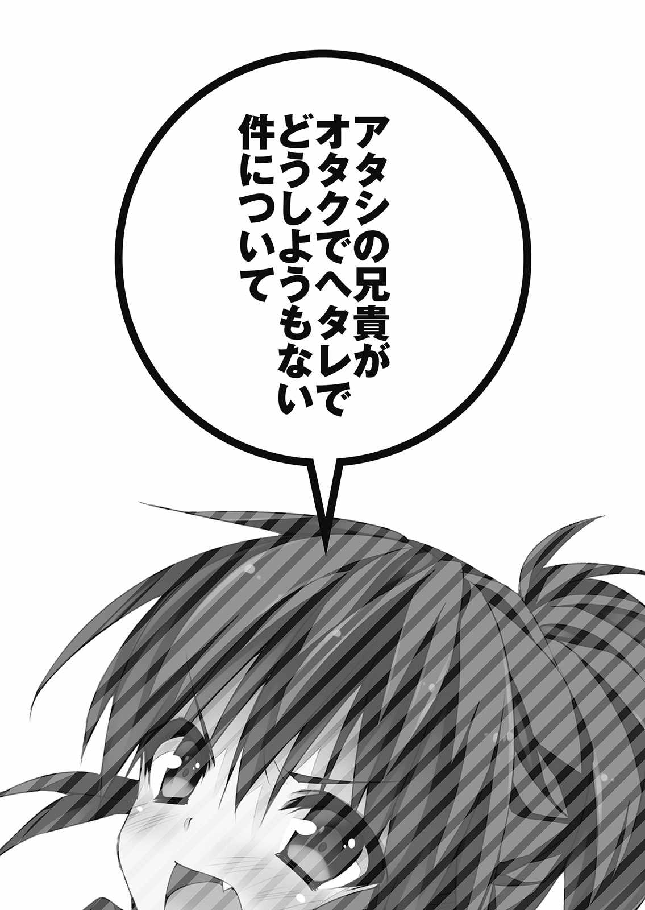
アタシは柏田あかり。中学一年生。
ごく普通の女子中学生。好きな科目は体育で、部活はバドミントン部に所属してる。
趣味はゲーム。そんでもって、所謂、オタクで腐女子。
昔からゲームとか漫画が好きだったけど、小学校六年生のとき当時ハマッてた少年漫画の『同人アンソロジー』を友達に借りて以来、同人誌やＢＬにどっぷりとハマってしまった。それからは、周りにいるオタク友達に同人誌やＢＬ漫画、ＢＬゲームを借りて楽しんでいる。自分でも買いたいとも思うけど同人誌やＢＬゲームは値段が高くて、ママからもらえる月のお小遣いが千円のアタシにはとてもじゃないが手が届かない。高校生になってアルバイトでもできるようになったら買いたいなあ、なんて今は思ってる。
アタシはそういう自分のオタク趣味が大好きで、中学では趣味の友達を作ることも出来、楽しい毎日を送っている。
だけど最近、一つだけとても腹立たしいことがある。
それは、アタシの三つ上の兄、直輝のことだ。
直輝は兄のくせに全然情けなくて頼りにならないし、その上キモオタで、同人誌やエロ漫画や十八禁のエロゲーが大好きなエロくて阿呆でどうしようもないバカ兄貴。
別にアタシは自分自身もオタだし、オタであること自体がキモいとか言ってるわけじゃない。自分の兄である直輝が、エロゲーやらエロ同人誌やらを読んでるところを想像すると、どうしようもなくキモいって思っちゃうだけ。
昔からこのバカ兄貴のヘタレさ、キモさにはイライラさせられることが多かったけど、アタシの堪忍袋の緒が切れそうなのは特に最近のこと。
直輝はそんな風にキモオタなくせに、高校に入学してからというもの、自分のことを顧みずに調子に乗って、変に色気づいてるようなのだ。
突然ワックスで髪をいじくり出したり、休みの日にクラスメイトの女子と出かけたり、女に服を選んでもらったり......実際その女を見たわけじゃないから、もしかしたら実在しないんじゃ？ って最初は疑ってたりもしたけど、でも最近直輝が浮かれたり落ち込んだりと起伏が激しいのは、どうやら女が原因らしい。信じがたいことに、まんざら妄想ってわけでもないみたいなのだ。
だけどアタシは、内心思ってる。万が一あのキモい直輝なんかの相手をしてくれる女が実在したとしても、その女は絶対大したことない女に決まってる。直輝と同じようにオタクで、モテなくて、きっと可愛くない女の子のはずだ。直輝以外の男とは話せないから、わざわざ直輝なんかの相手をしているんだ。それでも大分物好きな女だとは思うけど。
夏休みのある日。アタシは朝から友達に借りたばかりのＰＳ２のゲームソフトをやろうと、三階の自分の部屋を出て二階のリビングへ向かった。我が家のゲーム機は直輝もアタシもどっちもやるから、リビングのテレビに繋いである。
だけどその日リビングに行くと、予想外の光景がアタシを待ち受けていた。
直輝が、リビングを片付けている。散らばってる服をせっせと畳んだり、そこら辺に積んである漫画雑誌を本棚に入れたり......。
夏休みの間、予定がなければ昼まで寝ているぐーたらな直輝が、午前中のうちから掃除をしているだなんて......一体何事？
「何やってんの？」
「おお、あかり。見て分かんだろ、片付けてんだよ。散らかすなよ」
「片付けなら自分の部屋やんなよ。なんでわざわざリビングなんて片付けてんの？」
「ああ、これから、と......友達が来ることになっててな」
「えっそうなの？ あかり聞いてないんだけど」
人を呼ぶなら事前に言っておいて欲しい。せっかく今日は一日リビングでゲームやろうと思ってたのにさ。ほんとに直輝って気が利かない。
「直輝が家に友達呼ぶなんて珍しいじゃん。友達少ないくせに。中学んときの太っちょと眼鏡？」
「うるせーな。ああ、あいつらじゃねーよ。高校の友達」
「高校？ 直輝って高校に友達いるわけ？」
「いるに決まってんだろ！ 俺を何だと思ってんだよ！」
だって高校に入ってから、女の話がちょいちょい出るくらいで男友達の話なんてほとんど聞かないし......って、え、まさか......。
「......友達って、女？」
直輝は片付けをしている手を止めて、アタシの方に振り向いて少しニヤっとしながら、
「ま、まあな......」
うわあああああああすっげえムカつく！ ドヤ顔してんなっつーの！
ってか、かまかけただけなのに、まさか本当に女を連れ込もうとしてるだなんて......。
「しっ......信じらんない！ 今日一日ママがジムに行ってていないからって、女家に呼んで変なことするつもりなんじゃ......」
「ちげーよ！ 言っただろ、友達だって！」
......あ、友達ね、友達......。
「ふ、ふうん......まあ、直輝に彼女なんてできるわけないもんね......」
「あーはいはい、あんま無駄話してる時間ねーんだよ。さっさと片付けねえと......」
直輝は否定することもせず、また片付けの作業へと戻る。
「ってかさ、あかりやりたいゲームあんだけど、やっていいよね？ リビングでしかゲームできないし」
どんな女を連れ込むんだか、この目で見てあげてもいい。まあ、直輝が女相手にあたふたして失敗する様とか、面白そうだし。
「え？ マジか。友達来たら、ＰＳ３でＤＶＤ見ようとしてたんだけど......」
我が家のリビングにはテレビが一台しかなく（基本的にそういう家が多いとは思うけど）、ＰＳ２やＰＳ３、Ｗｉｉなどのゲーム機を繋げて遊ぶのにもＤＶＤを見るのにも、その一台のテレビを使っている。なので、時々こうやってテレビの取り合いになることがある。
「ＤＶＤ？ 今日家で、ＤＶＤ見んの？」
「うん」
女友達と、ＤＶＤ鑑賞会？ なんのＤＶＤを見るんだか少し気になったけど......聞くのも癪なのでスルーしておく。
「じゃあパソコンで見ればいいじゃん。リビングにもあるし直輝の部屋にもあるんだから」
アタシがやりたいゲームはリビングのテレビ＆ＰＳ２でしかできないけど、ＤＶＤ鑑賞はパソコンでも出来るんだから、ここはアタシに譲るべきでしょ。
「俺の部屋にはあんまり入れたくないんだよなあ......片付けんの面倒だし......じゃあしょうがねえから、リビングのパソコンで見るか。つーかお前、暇だったら片付けちょっとは手伝ってくんね？ お前が散らかしたものとかも多いんだから。あの辺の漫画とか」
直輝がリビングのテレビ＆ＰＳ２を譲ってくれたのには安心したけど、その代わりとでも言いたいのか、アタシに片付けを手伝うように言いながら部屋の隅に何冊か積んであるアタシの漫画を指さした。
「はぁあ!? なんであかりが、直輝の女友達のために片付けてあげなきゃいけないわけ!? 絶対やだし！」
「んな......テレビ譲ってやったっつーのに、マジ性格悪いなお前......ってか、なんでそんな急にキレてんだよ？」
「べっ、別にキレてないし！」
アタシは直輝に背を向けて、ＰＳ２の電源を入れてゲームを始めた。
ゲームを進めているとやがて直輝が片付けを終えたらしく、今いる二階から自分の部屋がある三階へとドタドタと忙しなく上がっていった。
少ししてから、階段を降りて戻ってきた。ゲームから一瞬だけ目を離して、振り返って直輝の姿をチラ見する。さっきまでのスウェット姿から着替えたらしく、水色のチェックのシャツに、ベージュのチノパンを履いていた。
......最近、この服ばっか着てる......。
直輝がクラスの女子に選んでもらって買ったとかいうその服は、ムカつくことに割とセンスがいい。直輝の地味でショボい顔が、服のおかげで少しはマシに見えるほど。
ここのところ直輝は、たまに奇想天外な服装や髪型になることはあれど、中学の頃から比べたら生意気にも大分オシャレになってきていると思う。中学の時は牛乳瓶の底みたいなダッサい眼鏡をかけてたくせに、コンタクトにしてみたり、髪型やら眉毛やらも整え始めて、直輝のくせに本当に生意気。
だけど、認めたくないけど......中学のダサすぎる頃から比べたら、かなりマシな外見になってきてることは間違いない。......もしかして、服を選んでもらったとかいうそのクラスの女子の影響......だったりするのだろうか？ っていうかもしかして、今日連れてくる女友達っていうのは、その服を選んでもらったクラスの女子と同一人物？ もしそうだとしたら......一緒に買い物するわ家に連れてくるわ、どんだけ仲いいわけ!?
着替えを終えた直輝は、今度は鏡の前に移動して髪型のセットを始めた。
あーもーきもいきもい。そんな長時間鏡の前でセットしちゃって、ナルシストかっつの。そんな大した顔もしてないくせに。
そのとき、インターフォンが鳴った。直輝が慌てて受話器を取る。
どうやら直輝が心待ちにしていた客人が来たみたいだ。直輝は慌てて階段を降りて、一階の玄関へとお出迎えに行く。
「お邪魔しまーす」
リビングのドアが開いて、直輝と一緒に女の人が......二人も入ってきた。
てっきり一人だと思っていたからそのことにも驚いたのだけど、それよりも信じがたいことがあって、アタシは直輝の女友達に釘付けになってしまった。
二人とも、すっごい美人だった。
直輝の女友達は、直輝に手土産みたいな紙袋をそれぞれ渡している。
一人は、茶髪にパーマで、芸能人みたいにオシャレで華やかな、可愛らしいお姉さん。もう一人は、黒髪を二つに結んでいて真面目そうな感じなのだけど、よく見ると顔も綺麗でスタイルも抜群なお姉さん。
な、何あの胸......うちのママみたいに太ってたら胸が大きいのも分かるけど、あんなに細いのに胸だけ大きいって、どんだけスタイルいいの!? あんな人が実在するなんて......。一瞬自分の胸を見下ろしてみたけど、空しくなったので見なかったことにした。
直輝の奴、超キモいことに巨乳好きだからな......直輝の好きなキャラにはさりげに巨乳キャラが多いこと、アタシは知っている。きっと、この人にもデレデレしてるに違いない......想像しただけでヘドが出そうに気持ち悪い。
っていうか、どうしてこんなに綺麗な人たちが直輝の家なんかに来るわけ？ 直輝の女友達っていうから絶対可愛くない人だろうと思ってたのに......信じられない......。
「柏田君の妹さん!? 可愛い～！ 初めまして、桜井小豆です！」
スタイルがいい方のお姉さんが、突然アタシに向かって挨拶をしてきた。なぜだか、目をキラキラと輝かせて......。
「あ、か、柏田あかりです......」
一応、挨拶を返す。
「恋ヶ崎桃です。確かに、柏田に全然似てなくて可愛いわね......」
茶髪の方のお姉さんが、アタシと直輝をじろじろと見比べ始める。
確かに、アタシはママ似で直輝はパパ似だから、あんまり似てないってよく言われる。
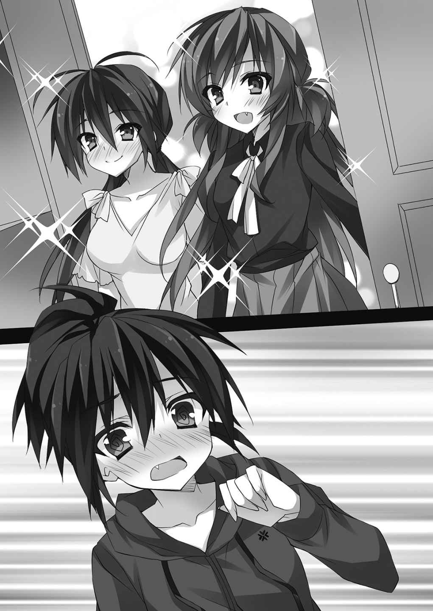
「どういう意味だよ！」
直輝が、すかさず突っ込んだ。
......直輝が、女の人相手にそんな強気の口調で話せるだなんて、なんだか変な感じ......。
そういえば、直輝の服を選んだり直輝と買い物にいっぱい行ってるのはどっちの人なんだろ？ ......まあ、別にどっちでもいいけどさ！
「ねえ、ところでそのキューティーなんとかのＤＶＤは!?」
茶髪のお姉さん......確か、恋ヶ崎桃......さんだっけ？ 桃さんが、直輝の肩を掴んで急かす。
......って、何さりげなくボディタッチしてんの？
「あー、分かったからちょっと待てって」
お姉さんに急かされて、直輝は意外にもうざったそうにリビングの隅にあるパソコンの電源を入れた。女慣れしてないはずの直輝があんな綺麗な人に触られたりしたら、もっと動揺して照れたりするのかと思ってたけど......意外にも無反応だった。
そういえば、ＤＶＤ見るのが今日の目的とか言ってたっけ。
「キューティー５、わたしも一度見てみたかったのでありがたいです！ まさか柏田君がＤＶＤ持ってたなんて......」
「あ、俺のじゃなくて友達に借りてるんだけどね......。正直俺あんま興味持てなくてずっと放置してて......。だからこうやってみんなで見ることになって俺も助かったっていうか......」
自分の部屋からＤＶＤを持ってきた直輝は、そう言いながらパソコンにＤＶＤを入れて準備をする。チラ見すると、少し前に流行った小さい女の子向けの戦隊アニメ、『美少女戦隊キューティー５』のＤＶＤだった。確か高校のオタク友達に見ろって無理矢理押しつけられたけど、あんま興味ないから見るのめんどいなー......とかブツクサ言ってたやつ。なんであのアニメを、三人で見るんだろう？ あの二人、オタクなのかな？
アタシはなるべく気にしないようにして、三人に背を向けてゲームに集中しているフリをする。
だけど内心、尋常じゃないくらいに焦っている自分がいた。
あんな綺麗な人たちが、直輝の友達なんて......ありえない。絶対にありえない。
──何か裏があるに決まってる！
例えば......二人がかりで直輝を宗教に勧誘しようとしてるとか、高い壺とか買わせようとしてるとか、あるいは、モテない直輝のことを二人でからかって陰で馬鹿にしてるとか、直輝をパシリにして利用してるとか......。
うーん、我ながらどの考えもしっくり来てしまう。だって、そういう何かでもない限り、あんな綺麗な人たちが直輝なんかと仲良くするはずがない。
利用されそうになっていることにも気付かず朝から掃除したりオシャレしちゃって、直輝って本当にバカ。きっとダサいくせに高校に入ってから変に調子に乗って気張ってるから、女に目をつけられて利用されたりするんだ。自業自得だ。
今日あの人たちが帰ったら、直輝に忠告してやらなくちゃ。気付いてないかもしれないけど、多分あの人たちは直輝を利用しようとして近付いてきてるだけだ、って。
「あかり、なんだよそのゲーム......また誰かから借りたのか？」
不意に直輝に話しかけられて、驚く。
な、なんなの......友達来てるんだから、アタシのことなんかほっとけばいいのに......。
今アタシがやってるゲームはＰＳ２の人気ＢＬゲームで、この間友達から借りたばかりなのでプレイするのは今日が初めてだ。だから、直輝は見たことがなくて当然。
「うん、まあね」
素っ気なく返事する。
「お前、こんな真っ昼間からリビングで堂々とＢＬゲーすんなよ......」
直輝は呆れた声でそんなことを言ってきたけど、無視無視。アタシの家なんだからどこで何をしようが勝手じゃん。
「ＢＬゲー!?」
直輝のセリフに、突然一人のお姉さんが興奮気味に声を荒げた。
「あっ！ よく見たら、これって咎狗の骨!?」
突然やってるゲームのタイトルを当てられて驚いて振り返ると、黒髪二つ結びのお姉さん......ええと、小豆さん......だっけ？ が、目を輝かせてゲーム画面を見つめていた。
「小豆ちゃん、知ってるゲームなの？」
「うん、わたしもこのゲームやったよー！ 面白いよねっ！」
こんなＢＬゲーをやってるってことは、この小豆さんって人......腐女子？
「あっ！ そういえば柏田君、この間妹さんが腐女子だって言ってましたね！」
小豆さんは目を輝かせたまま、アタシの至近距離までやって来る。
直輝の奴、アタシのこと話したりしてるんだ......ちょっと意外。
「ＢＬゲー、好きなの!?」
「あ、はい、まあ......」
一応、頷いて肯定した。
「あ、ごめんね、初対面なのに馴れ馴れしくて......わたしも同じ腐女子だから仲間なんだー！ 良かったら、よろしくね！」
オタク特有の『仲間を見つけたときの興奮』からなのか、それとも直輝を騙すためにアタシまで手の内に丸め込もうとしているんだか分からないけど、お姉さんははしゃいで満面の笑みをアタシに向けてきた。
「あ、やべっ......飲み物買ってくんの忘れた！」
そこで突然、冷蔵庫を開けた直輝が一人で叫びだした。
あーあ、バカ直輝。ホントに気が利かないんだから。
「ちょっと買ってくるわ」
「え、そんな、大丈夫ですよ？」
小豆さんが、直輝に気を遣ってる感じで引き留める。
「えー!? それまでＤＶＤ見れないじゃん！」
桃さんが不満げに言う。
「んな......まあ先に再生しててもいいけど......」
「そんな！ 待ってますよ！」
「じゃごめん、コンビニすぐそこだからすぐ戻ると思う！」
財布だけ持って、直輝が慌ただしく家を出て行った。
......って、アタシとお客さんだけにすんなっつーの！ 気まずすぎるじゃん！ アタシにどうしろっていうんだよ！
とりあえず、無視してゲームを続ける。別に気にしなければいいんだよね。どうせ、直輝を騙そうとしている人たちなわけだし。
ところが。
「咎狗好きなの!? 誰が好き!?」
小豆さんが、引き続きアタシに向かってテンション高く話しかけてくる。アタシは直輝の友達なんかと仲良くする気ないのに......。アタシに気を遣ってるつもりなのだろうか？ それとも、単に仲間を見つけて嬉しいだけ？
「あか......アタシ、このゲーム借りたばっかりで、今日初めてやったから......」
「あ、そうなんだー！ ごめんね、じゃあネタバレしないようにしなくちゃね！」
うーん......悪い人ではなさそうだけど......って、だめだめ！ アタシは直輝とは違う。そう簡単に騙されたりしてなるものか。
「最近何かハマったりしてる!? あ、ごめんねゲームやってるのにうるさく話しかけて......腐女子の子と話すの久しぶりだから嬉しくなっちゃって......」
ふーん......じゃあ、もう一人の......桃さんの方は腐女子ではないのかあ。まあ、見るからにオタクじゃなさそうな外見だもんな。
「ていうか、桃ちゃんもごめんね、分かんない話ばっかして......」
「あ、全然いいよー。気にしないで」
桃さんはスマホを弄っていた。
「最近......？ えっと、黒子のサッカーとか......」
とりあえず質問には答えなければと思い、最近一番ハマってる少年漫画の名前を口にした。
「えーっ本当っ!? わたしも黒子今一番ハマってるよーっ！ ＣＰは!?」
お姉さんの声が一層興奮気味に高くなる。へぇ、お姉さんも黒子にハマってるんだ......今あの漫画同人界でめっちゃ流行ってる割りに、周りにハマってる友達いなくてつまんなかったんだよね......。
「えーと、黄黒とか......」
アタシがその言葉を口にした瞬間、お姉さんはいきなり右手を前に突き出し、アタシの手を強く握ってきた。
「黄黒派初めて会ったーっ！ メジャーな割りに周りに全然仲間いなくてすっごい寂しかったんだよー！」
そう言われて、ついつい顔がにやける。正直、腐女子にとって仲間を見つけられた瞬間ってのはかなり嬉しい。それも、ジャンルだけじゃなく好きなＣＰまでかぶってるだなんて、結構奇跡的だ。
「ねえ、今度同人誌とか貸そうかっ!? 黄黒本うちに大量にあるしっ！」
「えっ!? ほ、本当ですか!?」
黒子の同人誌......欲しいけどお金がないから全然買えてなかったんだよね......初対面のアタシに貸してくれるだなんて、この人、めっちゃいい人じゃん！
──って、危ない！ 完全にアタシもこの人の手駒になるところだった！
同人誌貸してくれるくらいで何騙されそうになってんのあかり！ この人は直輝を騙して利用しようとしてる悪女なんだっつーの！
「じゃあ今度、柏田君に渡しておくね！」
「あ......ありがとうございます......」
一瞬上がりかけたテンションをなるべく落として、冷静にお礼を言った。
「あかりちゃんって、お兄ちゃんと仲いいの？」
突然、小豆さんに直輝の話題を振られて驚く。
仲......？ まあ別に、悪くはないと思う。よく一緒にゲームとかするし、一緒にいれば話すし、何かやることがあるとき以外はアタシも直輝も自分の部屋にはあんまりいなくて、基本的にリビングにいたりするし。
だけど、そんなことそのまま正直に言ってしまっていいものなのか。敵に手の内を明かすのはあまり良くないと思うし。
「全然、仲良くないですよ！ あんなキモい兄貴！」
アタシがその言葉を口にすると、小豆さんはとても驚いた表情になった。また、今までスマホを弄っていた桃さんも、アタシの方に振り返った。
「ど、どうしてあんなキモい兄貴と仲良くしてくれてるんですか？」
とりあえず、直接聞いたら何か答えてくれるかもしれない。そうだよね～キモいよね～うちらも仲良くしてあげてるんだけどさ～！ ......なんて本心を語り出すかも。そう思って、そんな質問をしてみた。......だけど。
「お兄ちゃん、全然キモくなんかないよ？」
アタシの予想とは反対に、小豆さんが苦笑いを浮かべて直輝のフォローをした。
「えーっと......お兄ちゃんのこと、好きじゃないの？」
続いて、桃さんまで声をかけてくる。
二人とも、うちらの兄妹仲を心配しているような様子だけど......。
「す、好きじゃないです！ オタクだし変態だし、ヘタレだしケチで性格も悪いし」
「そんなことないよ！ お兄ちゃん、すごく優しいよ!?」
「うん......確かにオタクで変態だけど、性格は悪くないと思うよ？」
お姉さんたちは真剣に直輝のフォローをし始めてしまった。
その様子に、アタシを騙すために取り繕っているようなところは微塵も感じられない。
......もしかしてこの人たち、本当にただの直輝の友達なの？ 悪い人たちなんかじゃないの？
だとしたら、どうしてこんな綺麗な人たちが、直輝なんかと......？
小豆さんは直輝と同じオタクだし、もしかしたら直輝と話が合って仲良くなったって可能性も......。いやでも、やっぱり直輝がこんな綺麗な人たちと本当に友達だなんてどうしても信じられないし......っていうか、もしそうだとしたら超ムカつくし。
「あっそうだ！」
「あ、あかりちゃん!?」
アタシは階段を上って直輝の部屋に駆け込んで、直輝の本棚から中学時代の卒業アルバムを引き抜いた。それを抱えて再びリビングへと戻る。
「ほらこれっ！ 中学時代の兄です。超キモくないですかっ!?」
直輝の顔写真が載っているページを開け、二人に見せる。そこには、中学時代の眼鏡で髪ボサボサの超ダサい直輝が写っている。
「へえー、これが中学時代の柏田君......確かに今と雰囲気違う！ 眼鏡だし！」
「うわーっ、確かにキモい！ 今以上にダサいしっ！ 小豆ちゃん眼鏡フェチだっけ？ でも、いくらなんでもこの柏田の眼鏡はナシでしょーっ！」
小豆さんはなぜか嬉しそうに直輝の写真を見つめている。桃さんは貶しながらひたすら爆笑していた。
......あれ？ てっきりドン引きすると思ってたのに......。
「え、えっと、あとそれに......ちょっと待ってて下さい！」
焦ったアタシは再び直輝の部屋に駆け込む。えーと、確か......直輝の本棚の奥をあさると、いとも簡単にエロ同人誌を数冊発見できた。そんでもって、確かこっちに......今度は机の引き出しをあさりまくると、教材やプリントの奥の方からエロゲーを見つけ出すことに成功した。
前に直輝の部屋に忍び込んだときありかを知ったんだけど、あれから隠し場所変えてないなんて......隠し方甘過ぎだっつーの！
それらを持ってドタドタと階段を駆け下り、リビングへと戻る。
「あかりちゃん、それ......」
「これ！ 全部直輝のですよ！ こんなん部屋でやってるんですよ!?」
リビングの床の上に、直輝のエロ同人誌とエロゲーをどちゃっと置いた。
「あ、あかりちゃん......これ、勝手に見せちゃっていいの......？」
桃さんが、困ったような笑顔で聞いてくる。
「いいんです！」
多分いいわけないけど、今は緊急事態なのだから仕方ない。
「あっこれ、この前夏コミで柏田君が買ってたやつだ～。気になってたんだよね～。あとで許可とって見せてもらお～」
小豆さんが、興味津々に同人誌を一冊手に取る。
夏コミで買ってたやつ......？ ってことは、一緒に夏コミに行ったってこと......!?
夏コミに行くとは行ってたけど、女と行ってただなんて......そんなこと一言も言ってなかったのに......！
直輝のエロ同人＆エロゲーを前にしても、二人の反応は想像していたものと違った。
もっとキャーキャー騒いだりキモがったりするのかと思いきや、小豆さんに至っては興味津々でエロゲーや同人誌を手にとって「姉ものエロゲー!?」「巨乳もの多いなあ......」「柏田君って、やっぱり年上属性だったんだ......前からそうじゃないかとは思ってたけど......」などと真剣な顔でブツブツ呟いて分析してるし、桃さんは「柏田の奴、まさかこんなにいっぱい変なもん持ってるなんて......こんなもんに金かけまくってるんだったらもっと服とか買いなさいよ......」とため息をつきながら眉をしかめていた。
あれっ？ 何この反応......。女子高生がこういうもの見たときの反応って、こんなんだっけ？ 何か違うような気がするんだけど......。
そのとき、背後から、誰かが階段を上がってくる音が聞こえた。
やばい！ 直輝だ！
アタシは慌てて床の上の同人誌とエロゲーをかき集める。
「ただいまー」
後ろから扉が開く音がして、直輝の声が聞こえた。
「あ、柏田君、おかえりなさい......」
アタシは咄嗟に、床の上に置かれた大量の同人誌とエロゲーの上に覆い被さって、自らの身体を使ってそれらを隠した。咄嗟の行動にしては我ながらよくやったと思う。見事に同人誌とエロゲーらはアタシの身体の中にすっぽりと収まって、完全に隠れている。
「あかり、おま......何やって......？」
「あ、あかりちゃん！ パンツ見えてるっ！」
「えっ!?」
位置的に、扉から入ってきた直輝にお尻を向けて同人誌などに覆い被さるポーズになっていたので、ミニスカートを履いていたアタシは直輝の場所からパンツが見えるような格好になってしまっていた。小豆さんに指摘されて、アタシは大慌てで立ち上がってスカートの後ろ側を押さえる。
「あっ......」
その瞬間、今までアタシの身体によって隠されていた同人誌とエロゲーが、丸見えになってしまった。
「え............」
直輝は一目見て一瞬でそれらが何か分かった様子で、
「おま............何やってんだ────!?」
びっくりするような大声で、叫んだ。そりゃあ、無理もない......。
「こ、これ、勝手に俺の部屋から持ち出したのか......!?」
顔面蒼白になりながら、アタシのことを問い詰める。
「ううっ......」
いつもとは違うその剣幕に、アタシは情けなくもびびってしまう。
「そんな怒鳴ることないでしょ、ちょっとした悪ふざけじゃん。今更こんなん見たってうちら何も思わないんだし」
桃さんが、なぜかアタシをかばい始める。
「か、勝手に見ちゃったわたしも悪いです！ ごめんなさい！」
小豆さんは、謝りだしてしまった。
「あかりお前、一体何の目的でこんなこと......」
何の目的？ そんなの、アタシだって分からない。気付くと、途中から直輝のことを二人に嫌わせようと必死になってる自分がいた。
「今朝から機嫌悪かったけど、まさかこんな嫌がらせまでしてくるなんて......お前どんだけガキなんだよ！ 中学生にもなって......」
お姉さんたちが見てる前で、直輝はアタシを叱りつける。何も今怒らなくてもいいじゃん......二人が帰ってからでも......。そんなにアタシに恥をかかせたいわけ？
「うるさいなあ！」
アタシは頭に血が上って、直輝に向かって怒鳴った。
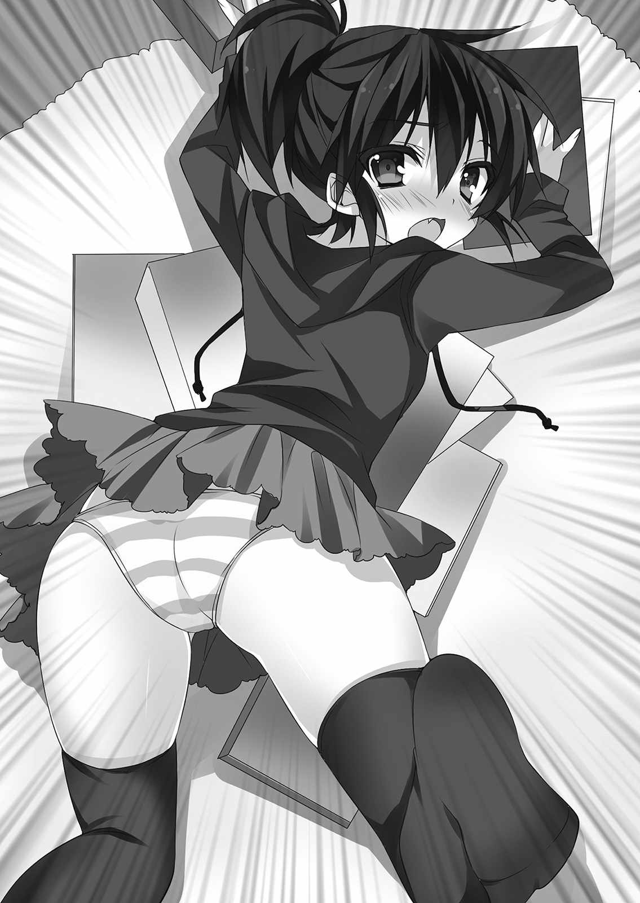
黙って不機嫌オーラを発したまま直輝に背を向けて、ゲーム『咎狗の骨』をセーブした。ああ、もう、すっごく不愉快。今日はもうこのまま、部屋に引きこもってやる。直輝だってどうせそれを望んでるんだろうし。邪魔者はとっととログアウトしますよはいはい。
ちょっと高校入って可愛い女友達ができたからって、調子に乗って説教ですか。直輝のくせに、直輝のくせに......。
......アタシは、直輝が騙されてるんじゃないかと思って、心配してあげてたっていうのに......！
そんなんだから、すぐ女に騙されて痛い目見るんだ。
アタシは知ってる。直輝が中学時代、女絡みで辛い目に遭ったことを。
直輝が確か中三のとき、ある日学校から帰ってきた直輝があまりにも凹んでたから、心優しいアタシは何かあったの？ って聞いてあげたんだ。そしたら、友達だと思ってたクラスの女子に陰口叩かれちまった......ははは......って、直輝はアタシに弱音を吐いた。
詳しくは話してくれなかったけど、その後の落ち込みっぷりは尋常じゃなくて、見ているこっちまで暗くなるくらいだった。
そのときアタシは思った。こんなバカでお人好しでヘタレな直輝がまた女関連で嫌な目に遭わないように、ダメダメな直輝の代わりにアタシがしっかり直輝を見てなくちゃ、って。
だから高校に入って調子に乗って女と仲良くし始めたって聞いたとき、一度嫌な思いしてるくせに、バカ直輝って本当に懲りないなって思った。
このままじゃ、中学の時の二の舞になるに決まってる。また女に騙されたり陰口叩かれたりして、辛い目に遭うに決まってるんだ。
だってやっぱり、こんなに綺麗な人たちが直輝と対等に付き合うだなんて考えられない。
あんな風に傷つく直輝を、もう見たくない......。
っていうのは、別に直輝が可哀想とかそういうことじゃなくて、凹んでる直輝は最高にうざいから、ってだけなんだけど！
ＰＳ２の電源を切って振り向くと、三人は仲良くリビングのソファーに並んで座ってお菓子を食べながらＤＶＤを見ていた。
──って、随分距離近すぎじゃない？ 直輝は一人がけの椅子が別にあるんだからそっちに座ればいいのに......。気のせいか、すごいニヤニヤしてて嬉しそうだし。マジキモいんですけど。ああ、なんかますますイライラしてきた。
「あ、せっかくケーキ持ってきてもらったってのに、出すの忘れてた！」
直輝が突然思い出したかのように叫んで、キッチンへと移動する。さっきお姉さんたちが持ってきてくれたケーキを箱から出して、お皿に載せている。
......このまま部屋に戻る気でいたけど、気が変わった。やっぱり、この人たちのこと、完全には信じられない。
ちゃんとアタシの使命を果たさないと......！
「これ、向こうに持ってけばいいの？」
「え!? ああ......」
直輝がお皿に載せたケーキを両手で持って、アタシは直輝に尋ねる。
今まで不機嫌だったのに突然協力的になったアタシに直輝は驚いていたけど、そのまま無視してケーキを小豆さんの元へと運ぶ。
小豆さんはケーキを運ぶアタシの様子を見て驚いていた。小豆さんが立ち上がって、アタシからケーキを受け取ろうとしたとき。
「あっ、ごめんなさーい！」
「！」
アタシはわざとケーキを持ったまま転んでみせた。そのまま小豆さんの上へと倒れ込む。
小豆さんを怒らせて、本性を暴いてやる......そういう作戦だった。
「あっ......！」
アタシが持っていたケーキはお皿から離れて小豆さんにぶつかった後、床へと落ちた。
あちゃー......転んで小豆さんにぶつかって彼女を怒らせるってことだけが目的だったので、ケーキで服を汚しちゃうことやケーキ自体をダメにしちゃうのは想定外だった。ここまでするつもりはなかったのに......。
だけど、いくらなんでもここまですれば、さすがにもう怒って本性を現すはず。
......そう思ったんだけど......。
「......あかりちゃん、大丈夫っ!?」
小豆さんは、ケーキの生クリームで自分の顔や服が汚れているのにも構わずに、倒れたフリをしているアタシの顔を心配そうに覗き込んできた。
「え......あ......」
アタシは慌てて小豆さんの上から退いて立ち上がる。
小豆さんの顔は、本気でアタシを心配しているような様子だった。
こんなことまでされてるのに、尚アタシを心配してくるだなんて......。
「うわーっあかり！ 何やってんだお前！」
直輝が後ろから、ティッシュを持って駆けつけてきた。
「柏田、なんか着替え借りられない？」
桃さんが直輝からティッシュを受け取って、小豆さんの顔や服についた生クリームを拭きながら直輝に尋ねた。アタシは何も出来ずにその場に立ちすくんでしまう。
「あ、俺の服で良ければ......」
「えっ......そんな......か、柏田君の服を借りるなんて......。拭けば大丈夫ですよ......!?」
小豆さんは驚いて動揺している。
「いやいや、結構汚れちゃってるし......あかり、俺の部屋に案内して」
直輝は床に落ちたケーキを片付けながら、アタシに指示をした。
「え、あ......うん......」
アタシは戸惑いながらも、直輝に言われた通り直輝の部屋に二人を案内する。
直輝のタンスの引き出しを開けて服を物色するけど、地味なダサい服ばっかで女の子が着てもおかしくないような服はない。
気付くと、小豆さんはハンガーにかけられている直輝の高校の制服である白いＹシャツをじっと見つめていた。
「えっ、小豆ちゃんそれ着たいの!?」
「あっそういうわけじゃないけど......こういうシチュエーションだったらＹシャツが基本だな～、って......あっ何でもない！」
小豆さんの言ってることはよく分からなかったけど、とりあえずタンスから直輝のＴシャツを出して小豆さんに渡した。
「あ、ありがとう」
小豆さんはアタシの手から着替えを受け取ると、その場で着替え始める。
「......ごめんなさい！」
「えっ!? あかりちゃん!?」
アタシはいたたまれなくなって、小豆さんに謝ってから直輝の部屋を出た。
......やっぱり小豆さん、直輝を騙してる悪い人なんかには見えない......。なのに、アタシってばなんてひどいこと......。
部屋を出ると、ちょうど階段から上がってきた直輝と鉢合わせしてしまって気まずくなる。直輝は、お盆の上にジュースとアイスなどのお菓子とＤＶＤを載せていた。
「桜井さん、まだ着替えてるか？」
「え、た、多分......」
リビングから、自分の部屋に移動するつもりなんだろうか。
「お前がうるさいからもう部屋でＤＶＤ見るよ。ゲームでもなんでも好きにやれや」
「......はあっ!? あっそう！ 好きにすれば!?」
アタシはブチ切れて、階段を降りてリビングへと向かう。
ふん、アタシがいるのがそんなにウザいですか！
──だけど階段の途中まで降りたところで、ふと足を止める。
部屋で......？ 直輝の部屋で、ＤＶＤを見る......？
あんな可愛いお姉さんたちを部屋に連れ込んで......一体何をする気でいるわけっ!?
いや、ＤＶＤ見ながらお菓子食べるだけだろうとは思うけどさ......でも若い男女なわけだし、万が一、間違いが起こる可能性だって......。
あたしは途中まで降りていた階段をそーっと引き返して、直輝の部屋の前の様子を見る。直輝の姿はなかったので、もう部屋に入ったようだ。
三人に気付かれないように静かに直輝の部屋の扉に近付いて、扉に耳を当ててみる。
「くっ......ふうっ......」
「!?」
突然、直輝の苦しそうな声が聞こえて、アタシはぶったまげた。
「柏田君......どう......でふか？」
「どうって............はあっ......はあっ......もう、いいでしょ......そろそろ......」
「柏田君......ふごい、です......まだまだ頑張れそうに見えまふよ......？」
小豆さんが少しだけいじわるそうに、そんなことを言う。なんだかもごもごしていて、まるで口に何か含んでいるような話し方だ。
「んな......そんな......こと......はあっ......」
「へえ......意外と忍耐力あるじゃん」
..................ちょっと待ってちょっと待ってちょっと待って......！
な、な、何これ!?
「何、もう限界なの？」
桃さんの強気な声が聞こえる。
「いや、......まだ、いけるけど......はあ......でも......ＤＶＤ......見ないと......っ」
「柏田君、ふらそうな顔......」
「......桜井さん、そんな......まじまじと......」
「もうふこししたら......次......交代しまふか？」
ええっとぉ......。
落ち着け柏田あかり。落ち着け落ち着け落ち着け落ち着け落ち着け落ち着け。
この、小豆さんと桃さんが二人で直輝を責め立ててるような口調......。
直輝の苦しそうな声......。
これって......まさか......同人誌とかＢＬゲーとかでもよくやってる............アレ!?
あんなの、漫画やゲームの中でしか見たことなかったのに、まさかこんなに身近で......しかも、直輝がされてるなんて......。
た、確かに、二人が一人を......っていうシチュも、ＢＬ漫画で見たことあるけどっ......！
どっどっど、どうしよう......まさか、直輝が本当に、女の子とこんな卑猥なことしてるだなんて......！ 正直、全然本気で疑ってなんかなかったのに......！
信じられない......どうしよう、どうしよう......！
気がつくと、どうしてか半泣きでパニックになってるアタシがいた。
あの直輝が、本当にこんなことしてるだなんて......思ってもみなかった。
頭の中に色んな感情が蠢く。
直輝のバカ。信じらんない！ 友達って言ってたくせに......嘘つき！ 友達ってそういう友達なわけ!? いやだ......。
......こんなのいや、いやだ、いやだ、いやだ────！
「いやだ──ッ！」
バン！
気がつくとアタシは、叫びながら勢いよく直輝の部屋の扉を開けていた。
「えっ......」
「あ、あかりちゃん？」
直輝の部屋の中の光景を見て、アタシは硬直した。
......直輝は、腹筋ローラーで筋トレをしている最中だった。
ちなみに腹筋ローラーとは、直輝が中学の時に買った筋トレ器具で、棒の中央に車輪がついていて、前屈みになって膝をついて両手でその棒の両側を持って、車輪を前後に動かすことで身体を前後に倒したり起こしたりして腹筋や背筋を鍛えられる......というもの。
直輝はものすごい険しい顔でローラーを前後に移動させながら、腕をプルプルさせている。
その様子を横で桃さんと小豆さんが見つめていて、小豆さんはアイスの実を食べているので口を押さえてモゴモゴしていた。
「はあっ、......もう限界！」
直輝は腹筋ローラーを前に倒して、うつぶせに倒れてしまった。
「あーあ、倒れちゃった。あんた、やっぱ腹筋ないのねー」
「じゃあお前がこれやってみろよ！ マジ辛いんだからな！」
「すみません柏田君、わたしがどうやって使うか見てみたいなんて言ったばっかりに......」
小豆さんは謝りつつも、楽しそうに笑っている。
え......単に......筋トレ、してただけ......？
──それを、アタシってば、なんてとんでもない行為と勘違いして......。
ああっ！ もう、アタシのバカっ！
「って、あかり......お前、何勝手に入ってこようとしてんだよ」
うつぶせに倒れていた直輝が、アタシに声をかけてきた。
「あーもう、お前が邪魔してくるから部屋に移動したっつーのに......」
「......あーはいはい！ 邪魔しましたね！ 安心しなよ、もう二度と開けないからっ!!」
アタシは思い切り音を立てて直輝の部屋の扉を閉めた。
今度こそアタシは自分の部屋に戻る。
ああもう、最悪。なんだって今日は直輝なんかにこんなに振り回されなくちゃいけないの？
それにしても......本当にびっくりした。
正直なところ、何もなくて、本当に......良かった。心から安心してるアタシがいる。
自分の部屋の絨毯の上にぺたりと座り込んだ。
......どうしてだろう。直輝が女の子を部屋に連れ込んで変なことしてるって思ったら、どうしようもなく嫌な気持ちになって、信じたくなくて、思わず扉を開けずにはいられなかった。
なんでこんなに直輝の動向が気になってしまうのだろう？ 自分で自分がいやになる。こんなに直輝のことばっかり気にして......今日一日、直輝にも二人にも迷惑ばっかりかけて......絶対あの二人にも変な妹だって思われてる......。
それに、今日一日で分かった。お姉さんたちは、直輝を騙そうとなんかしてない。
本当の本当に直輝のお友達なんだ。
小豆さんも、桃さんも、すっごくいい人だ。
本当は途中から、こんないい人そうな人たちが直輝を騙しているはずなんかないんじゃないか、って思ってた。だけど、直輝がこんな綺麗な人たちと本当に友達になれただなんてどうしても信じられなくて、同時にすっごくムカついてきて......。
なんなの、アタシ......。
これじゃあまるで......アタシが、直輝に......。
「あかり？ 入るぞ」
直輝!? な、なんで!?
自分で邪魔者扱いしたくせに......なんでアタシの部屋に？
直輝はアタシの返事も聞かないうちに、扉を開けた。
「ちょっ......か、勝手に入ってこないでよ！」
「お前だって勝手に入ってくるだろ」
「なっ、何の用なわけ!?」
「いや......あの二人が様子見てこいってうるさいからさ」
ああそう！ 自分の意志じゃなくてあの二人に言われたから仕方なく様子見に来てるわけねっ！
「さっき突然ノックもせずにすごい勢いで部屋に入って来ただろ、なんか用があったんじゃないのか？ って」
「別に！ 直輝に用なんてないけど!?」
「じゃあなんで部屋に来たんだよ？ 一人でゲームやってんの寂しくなったのか？ 仲間に入れて欲しかったのか？」
不本意な誤解をされて頭にくる。
「はああ!? んなわけないじゃん！ 仲間に!? 全然いらないっつーの！」
「じゃあ、一体何なんだったんだよ」
「えっ!? ......えっと......直輝が......ママがいない間に部屋で変なことしてないかどうか、あかりが見張らないとって思って......」
仕方なくそう答える。決して嘘ではないし。
「んなっ......」
『変なこと』という言葉に、直輝が少し動揺する。
「......じゃあ、さっきの『いやだ──ッ！』って何だよ......？」
げっ、そのセリフ聞こえてたわけ......!?
「それは......その、なんか、変な声が聞こえたから......」
「変な声？」
ああもう、ここまで来たら本当のこと言うしかない......。
「そうっ！ だって......なんか、直輝はハアハア言っててキモいしっ......なっ、なんか、キモいことしてんじゃないのか、って思って......」
「キモいこと？」
直輝は何のことなのか理解できないという感じできょとんとしている。
「キモいことって言ったらキモいことっ！ なんで分かんないのっ!? あ、あかり、本当にびっくりして......もう、どうしようってパニックになって......」
さっきのことを思い出してしまい、再び動揺がこみ上げてくる。
「えっ？ ......！ キ、キモいことってそういうことかよ!?」
直輝はやっと何のことか分かった様子で、途端に慌て出した。
「おま、何考えて......!?」
だけど直輝が突然、そこでセリフを途中で止めた。
「あかりお前......泣いてんのか？」
「......えっ!? な......泣いてないし！」
慌てて自分の目頭を触る。少しだけ、涙が出ていた。
なんか話してたら、さっきパニックになったことを鮮明に思い出して、本当に何でもなくて良かったなって改めて安心しちゃって......ほんの少し、涙が出てきてしまったんだ。
「ほんとに、泣いてな......」
「あー、はいはい」
直輝は呆れたように笑う。
「!?」
次の瞬間、直輝の手がアタシの頭の上にポン、と乗せられた。
「な......なっ......!?」
あまりに突然のことに、動揺してしまう。
直輝がアタシにこんな風にしてきたこと、大きくなってからは一度もない。
「あーもう、ほんっとバカだなお前......ガキのくせにＢＬばっか読んで変な知識だけついてるから、そういう卑猥なことばっか考えちまうんだろ......」
直輝はアタシを馬鹿にした様子で笑ってる。
「だ、だって......直輝がいけないんじゃん！ 直輝があかりを誤解させるようなことするからっ......！」
アタシは自分の顔が耳まで赤くなるのが自分で分かって、恥ずかしくなって直輝の身体をポカポカと叩いた。
アタシの頭の上の直輝の手から、直輝の温かい体温が伝わってくる。その体温にすごく安心して、また涙が出そうになるのを必死でこらえた。
......本当に、良かった......。何もなくて......。
『そんなことないよ！ お兄ちゃん、すごく優しいよ!?』
『うん......確かにオタクで変態だけど、性格は悪くないと思うよ？』
さっきお姉さんたちが言ってたセリフが頭を駆け巡る。
直輝は優しい。そんなこと、言われなくても知ってる。
だってアタシは、二人が直輝と出会う前から、ずーっと直輝と一緒にいるんだ。
......認めたくないけど、アタシはきっと不安だったんだ。直輝が、ダサくてヘタレな直輝から、アタシの知らない直輝になっちゃうんじゃないかって。
高校に入学して、どんどんオシャレになって、女の子とも仲良くなって......。
「二人も心配してるし、部屋から出てこいよ。リビングでＤＶＤ見ることにしたから、お前も一緒に見れば？」
「え............そ、そんなに言うなら......一緒に見てあげてもいいけど！」
だけど、やっぱり直輝は直輝だ。
どんなにオシャレになったって、女の子と仲良くなったりしたって、ヘタレで、オタクで、......だけど、優しい......。
あかりの、たった一人の......お兄ちゃん。
これからもどうか変わらないで欲しいなんて、アタシは心の奥で思い続ける。
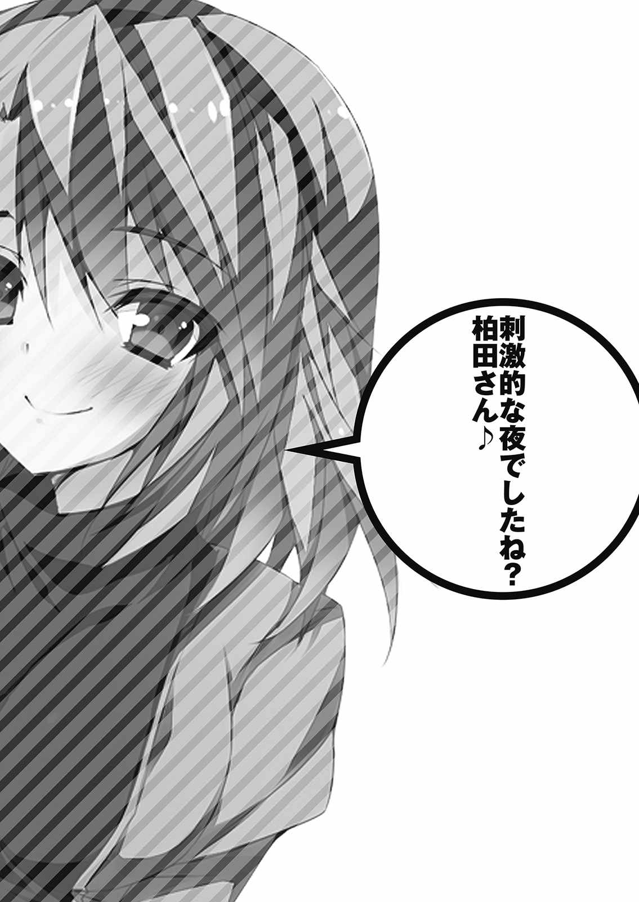
「お先に失礼しまーす......」
タイムカードを切ってから蚊の鳴くような声で言い、俺は従業員控え室に戻った。
今日俺はカラオケバイトだったのだが、いつも働いている店舗ではなく新宿東口店のヘルプにかり出され、午後六時から午後九時まで働いた。
自分の店ですら忙しい時間帯は死にそうになっている俺だが、今日初めて新宿東口店で働いて、そのあまりの忙しさにいつも自分が働いている店がどれほど楽なのかを思い知った。金曜日の夜ということもあって新宿のカラオケはとにかくものすごい人で、たった三時間しか入っていないのに疲れ切ってしまった。
更に新宿東口店の店長は厳しく何度も怒られてしまい、俺の気分は完全に滅入っていた。
バイトの前にコンビニで買ったおにぎりを袋から出し、夕飯として控え室で素早く食べ、帰り支度をして店を出る。駅へ向かおうと歩き始めると、夜の新宿は酔っ払った大人たちで溢れ返っていた。
固まって盛り上がっているサラリーマンの集団、泥酔してふらついている若い女性と、その肩を支えて歩く若い男性。騒いでいる大学生らしき若い男女の集団......。ああ、リア充うぜー。どうせ合コンかなんかだろ？ まだ九時だってのに酔っ払いすぎだろ。こちとら働いて疲れてんだよ。騒がしい声が頭に響いてイライラする。
「じゃ、二次会行く人ー！」
「はーい！」
「えっ!? ......ちゃんは!? 行かないの!?」
「ごめんなさい、今日はちょっと、この後用事があって......」
「えー!? 嘘でしょー!? ......ちゃんが来ないと盛り上がんないよー!?」
前方に固まっている十人程度の大学生らしき若い男女の集団の話し声が聞こえてくる。まだ距離があるのでよく聞こえないが、男が二次会へ行こうと言い、女性が断っている様子だ。リア充大学生らの会話など聞きたくもないのだが、声が大きいので嫌でも耳に入ってくる。
「用事って何よー？」
「え、それは......えっと......」
今度は別の女性が二次会を断っている女性に対して突っ込んでいた。
おいおい、別に帰るっつってんだからそのまま帰せばいいだろーが。なぜにそこまでして無理に引き留める？ だなんて、他人事ながらに思ってしまう。なるべく見ないようにしてその集団の横を通り過ぎようとした、そのとき。
「あ......柏田さん！」
「......えっ!?」
突然、集団の中にいる一人の女性に名前を呼ばれて驚いた。
「え......」
俺の名を呼んだ女性の方へ目を向ける。それは今二次会へ行こうと引き留められていたらしき人物であり、見覚えのある茶色のセミロングヘアの綺麗な女性......同人作家のムラサキさんだった。
......ムラサキさんってそういえば、大学生くらいだったんだっけ。
「ごめんなさい、私この後この人と会う約束をしていたんです」
ムラサキさんは若者の集団に向かってそのセリフを言うと......なんと、俺の元へ駆け寄ってきて腕を絡めた。
......って、会う約束!?
勿論、そんなのした覚えはない。
「えぇっ!? ゆ、紫ちゃん......そ、それって......もしかして、か、彼氏......？」
茶髪のオサレ大学生（割とイケメン）が、ムラサキさんに向かってとても驚いた様子で尋ねる。紫ちゃん......？ もしかして、ムラサキさんの本名なのだろうか。
「えぇ、そうですよ♪」
俺はムラサキさんのセリフに吹き出しそうになった。
......彼氏!? な、な、何を言ってるんだ......？
ふと横にいる彼女を見ると、俺に向かってウィンクをしていた。......そういうことにして欲しい、というサインなのだろうか。
オサレ大学生（笑）は酷くショックを受けた様子で、もはや何も言えなくなって固まっている。その他のその場にいる面々も、驚いてぽかんとしていた。
「それでは、失礼しますね」
そんな面々を華麗にスルーして、ムラサキさんは俺の腕に腕を絡ませたままその場から立ち去った。
「ごめんなさい、少しこのまま南口の方まで一緒に歩いてもらえますか？」
歩きながら、俺にしか聞こえないような小声で言う。
「あ、は、はい......」
腕を組まれていることに緊張しつつ、そう返事をした。
＊
「ごめんなさい、突然巻き込んでしまって」
南口に辿り着く少し前あたりで、ムラサキさんが立ち止まって俺の腕から手を離し、話し始めた。
「い、いえ......。さっきの人たちは......？」
「......実は今日、大学で友人に聞いて欲しい相談がある、って言われて......今日は用があるので早く帰る予定だったんですけど、どうしてもと頼まれたので行ったんです。そしたら、見たこともない男の人たちがいて......所謂、合コン、ってやつだったみたいなんです」
ムラサキさんは困ったような笑顔を作ってそう話した。
「じゃあ、その友達にハメられた......ってことですか？」
「えぇ、完全に。もう、本当に困ったものです。素直に合コンと言ったら私が行かないということは分かっていたんでしょうね。......月曜日叱らなきゃ」
彼女は腕を組んでため息をついた。叱らなきゃ、というのはその友人に対してなのだろう。怒ってもいるが、呆れているという気持ちの方が強いような様子だ。いつも穏やかでニコニコしている彼女だが、こんな言い方をすることもあるんだな。少し意外だった。
「そ、そうなんですか......。合コン、嫌いなんですか？」
「えぇ、嫌いですよ。というか、行ったのは今日が初めてなんですけど......もう二度と行きません」
キッパリと言う。顔は笑顔だったが、怒っているのが伝わってきた。
「そ、そんなに嫌なんですか......た、楽しそうですけどねえ......」
それは俺の正直な感想だ。うぜえとか散々思っているのも、どこかで羨ましいという気持ちが前提としてあることを否定できない。
「全然楽しくなんかないですよ。私......今日来ていたようなくだらない男性が大嫌いなんです」
彼女は怒り気味......というか、むしろ見下すような冷たい口調で言い切ってから、
「......って、あら、ごめんなさい、口が過ぎましたね」
と、片手を口元に当てて慌てて笑顔を作る。......って、今更そんな優しい雰囲気を醸し出しても遅い。今までムラサキさんのことを優しく穏やかで何があっても怒らない聖女のような人だと思っていたのに、あんな冷たい口調で話すことがあるだなんて......。失礼ながら、俺は少しだけ怯えてしまった。
「そ、そうなんですか～......け、結構イケメンだったような気がしますけどねー......」
彼女が『くだらない男性』と言ったのは、先ほど彼女を引き留めていたオサレ大学生だろうか。服装も髪型も顔も、いかにも大学生という感じでかっこよかったと思うのだが。
「どこがですか!?」
彼女は俺に顔を近づけて、憤慨した様子で問い詰めてきた。
「もう正直、私としては茶髪の時点でＮＧですし、外見もかっこいいと思えないんですが......飲み会が始まって更に、彼に対する印象がどんどん悪くなっていきました。女を振って泣かせた話とか、自分がモテるという自慢話を堂々と嬉しそうに話すんですよ。私、ああいう軽薄でモラルのない男性が一番嫌いなんですっ！」
彼女は、普段の彼女からはおよそ想像できないような様子で怒りを露わにして、先ほどの男性について語った。
「そ、そうなんですか......。確かに、それはムカつきますね......」
俺もそういうタイプの男は大嫌いなので同調する。
「......じゃあ、どういう人がいいんですか？」
個人的に気になったので、さりげなく探りを入れてみる。
「どういう人......そうですねえ......外見は、勿論黒髪で、必要以上にゴテゴテと飾り立てていなくて......中身は、真面目で誠実で、シャイなくらい純粋な方......って感じですかね」
なるほど......ムラサキさんの好みのタイプを心のメモ帳にしっかりとメモった。
「柏田さんは、どこかへ向かう途中でしたか？ すみません、強引に連れ去ってしまって......。お時間とか、大丈夫ですか？」
「あ、いえ、俺はバイトの帰りだったので全然大丈夫です」
「アルバイトですか......何のアルバイトをされているんですか？」
「あ、カラオケで......」
「そうなんですか。新宿にあるお店なんですか？」
「普段は違う店なんですけど、今日はヘルプでかり出されまして......」
「あら、そうだったんですね」
「あ、そういえば......今日この後用があるんでしたっけ？ ムラサキさんこそ時間大丈夫ですか？」
先ほど、彼女が今日は用があるので早く帰らなくてはいけないと言っていたことを思い出す。
「あ、えぇ......そうでした......」
ムラサキさんは自身の腕時計に目をやると、深いため息をついた。
「ですけど......もう、間に合わないかもしれないですね......」
「えっ!? そ、そうなんですか!? あの、用事って一体......？」
「......実は、今度出す本の原稿の締め切りが......明日なんです」
今度出す本......というのは、同人誌の新刊の件で間違いないだろう。
「えっ......明日までに終わりそうにない、とか......？」
「えぇ......。今回土壇場でトラブルが起きてしまって、たまに手伝ってくれる友人も今回は忙しそうで......。今日大学から帰ってすぐに手をつければギリギリ間に合ったとは思うんですけど......」
それで早く帰ろうとしていたのに、友人に相談があると言われてそっちへ行ってしまったらこんなことになった、ってわけか......。優しいムラサキさんのことだから、聞いて欲しい相談がある、という友人の申し出を断ることなどできなかったのだろうな、と勝手に予想した。
「全ては私の計画性のなさが招いた事態なんですけどね」
ムラサキさんは苦笑いを浮かべる。
「大変ですね、俺なんかでもできることがあればお手伝いしたいところなんですけど......」
本当に困っていそうだったので軽い気持ちでそんなことを言ってみたのだが、俺のセリフに彼女が真顔になる。
......って、原稿を手伝うって言ったらムラサキさんの部屋に行くわけだから、一人暮らしの女性が俺みたいな親しくもない男を簡単に家に上げるわけねえよな。さすがのムラサキさんも俺のセリフに引いたのだろうか......と焦って発言を撤回しようとしたところ、
「今のセリフ......本当ですか？」
彼女は柄にもなく真剣な表情で俺を見つめてくる。
「え、はい......ただ、力になれるかどうか分からないですけど......」
俺は彼女の反応に驚きつつも、そう付け加えた。そうだよ、絵や漫画が描けなければ手伝おうとしたって役立たずなんじゃ......。
「本当に手伝って頂けるんですか!?」
ムラサキさんが俺の右手を両手で握って、目を輝かせた。
「今の状況でしたら消しゴムかけをやって頂けるだけでもとても助かります！」
消しゴムかけ、の言葉を聞いて少し安心する。さすがにそれなら俺でもできそうだ。
「は、はい......俺なんかで良ければ......」
「ありがとうございます！ とっても助かります！」
大学の友人には頼めそうな子が少なくて本当に困っていたんですよ～、とムラサキさんは俺に何度も感謝をしてくれた。
......まさか本当に頼まれるだなんて思っていなかった。俺を自分の家に上げてしまうだなんて......本当にいいのだろうか？ 勿論何かする度胸なんてないが、普通怖がったり嫌がったりするもんなんじゃないだろうか......。それともこの人も恋ヶ崎のように、俺のことは男として意識していないから平気なのかな......などと変な汗をかきながら思いを巡らせつつ、二人で吉祥寺駅のムラサキさんの自宅まで向かった。
二度目となる、ムラサキさんのマンションに辿り着く。３Ｆまでエレベーターで上がり、ムラサキさんが３０６号室の鍵を開けた。
「どうぞ」
「お、お邪魔しまーす......」
緊張を抑えつつ、自宅へとお邪魔する。相変わらず片付いており、女の子らしくて綺麗な部屋だ。
玄関で靴を脱ぎながら、思い出した。前回お邪魔したときに何も手土産を持って行かなかったので、次回来たときこそは必ず持って行こうと心に決めていたのに、俺今回も手ぶらじゃねえか......。しかし、今回は急だし遊びに来たわけではないので、（まあ正確には前回も遊びに来たわけではなかったのだが）仕方がないとも思う。
「本当は、まずお茶でもしてゆっくりして頂きたいところですが......」
「いえ、だ、大丈夫ですよ！ 切羽詰まってるんですから、作業に入りましょう！」
俺のセリフにムラサキさんが申し訳なさそうに笑った。
そのままリビングには向かわず、彼女が『作業場』と呼んでいた部屋へと入る。
「ごめんなさい、この部屋は散らかっているんですが......」
ムラサキさんはそう言うが、デスクの上に原稿や画材が置かれている程度で、さほど散らかってはいなかった。これだったら俺の部屋の方が汚い。
この部屋にはデスクが二つある。パソコンが置かれているデスクと、その隣にもう一つデスクが並んでおり、その上に描きかけの原稿が置かれていた。恐らく、原稿の作業用のデスクなのだろう。
「おおー！ 生原稿！ すごい！」
俺は女性の部屋に二人きりでいるんだという事実を一瞬だけ忘れ、デスクの上にある同人誌の生原稿に食いついた。ペン入れの作業まで終わっているその原稿は東邦プロジェクトの同人誌の原稿のようで、とても綺麗だった。
ムラサキさんがキッチンで淹れたお茶を持ってきてくれて、受け取った。
「あ、ありがとうございます。ムラサキさんってアナログ派だったんですね！ 意外です」
中学の時少しかじった情報に寄ると、漫画を描くときには全ての作業を手描きでこなすアナログ派と、パソコンで描き上げるデジタル派がいて、最近の同人作家にはデジタル派が多かったと記憶していた。
「私の場合、普段はペン入れまでをアナログで行って、その後の処理をデジタルで行うようにしているんです。今回もペン入れ以降の処理をデジタルで進めていたのですが、作業の途中で漫画を描くソフトの調子が悪くなって、作業が進まなくなってしまって......。修理に出す時間すら勿体ないという状況なので、今回だけ全てアナログで仕上げることにしまして。昔アナログで原稿を描いていたこともあるので割と慣れていますし」
「はぁ～、なるほどー」
先ほど言っていた土壇場で起きたトラブルというのはそのことなのか。途中まで進めていたデジタル処理が全て無駄になってしまって、それが原因で締め切りに間に合うか分からないほど原稿の作業が遅れてしまっているんだとしたら......災難だなあ。
再度原稿に目を通す。これを手描きで描けるなんて、すごい技術だ。
「それでもどうしてもデジタルでの作業に比べるとアナログでの作業の方が時間がかかってしまって。現段階で二十ページ中、十二ページほどしか完成していない状態なんです。明日が印刷所の締め切りなので直接原稿を持ち込もうと思っているのですが、徹夜しても間に合わないかもしれないと諦めかけていたんですよ......今回は新刊落とすしかないかな、と......」
「えぇっ!? ここまで描き上がってるのに落とすなんて、勿体ない！」
「勿論、ペン入れまでの段階で本にして売ることだってできるんですが、それはどうしても嫌なんですよねぇ......。完全に私の我が儘ですが、本はきちんと仕上げてからお客さんの元に届けたいんです。......しかしだからといって、新刊を出すと告知していたのに落とすだなんて、一番お客さんに申し訳ないことなんですけど......」
ムラサキさんは口を動かしつつも、パソコンのキーボードやマウスのコードをパソコンから外して他の場所に移動させてスペースを開け、パソコンが乗っているデスクの上に原稿の作業をするための場所を確保していた。どうやら、そこで作業を行うようだ。
「な、なるほど......」
こだわりを持って同人活動をしているんだなあ。
「それでは、早速で申し訳ありませんが、柏田さんにはこちらにある全ての原稿の消しゴムかけをお願いできますか？」
ムラサキさんに原稿を渡される。全てペン入れまでが終わっている原稿で、数えると七枚程だった。確かによく見ると、まだ下書きの線が消されていない。
「分かりました！」
俺は原稿を受け取った。
「こちらでお願いします」
パソコンが置かれたデスクの隣のデスクの椅子を彼女が引いたので、俺はその椅子に腰掛ける。消しゴムを渡された。
「あっ、消しゴムかけなんですが、なるべく一定の方向へかけるようにすると綺麗にかけられると思います。単調作業ですみませんが、宜しくお願いします」
「了解です！」
アドバイス通り、手前から奥へと消しゴムをかける方向を決めて、消しゴムかけの作業を始める。原稿が破れたりインクが擦れたりしたらまずいので、力を入れすぎないように注意する。しかし力が弱すぎると下書きの線があまり消えてくれないので、意外と難しい。
ふと気になって隣を見ると、ムラサキさんは俺の隣のデスクでトーンを貼る作業に没頭していた。
やがて一枚目の原稿の消しゴムかけが完了して、消しゴムのカスをゴミ箱へと捨ててから次の原稿の作業へと入......ろうとしたのだが。
「ぶっ!?」
俺は次のページの原稿を見て、思わず変な声を出してしまった。
「......？ 柏田さん、どうかされました？」
隣で作業をしているムラサキさんが、俺の声に反応する。
「あっ、す、す、すみません！ 何でもないです！」
作業の邪魔をしてはいけないと思い、そう答えた。
「そうですか？」
彼女は不思議そうに首を傾げながらも、自分の作業へと戻ってくれた。
俺が原稿を見て驚いたのは、その原稿が......あまりにも、エロかったからだった。
十八禁百合同人誌のようで、帽子をかぶったロリキャラがベッドの上で卑猥なポーズをとっている。
一コマ目ではブラウスの前をはだけて小さな胸が露わになってしまっており、次のコマではもう一人の女キャラ（恐らく攻めなのだろう）によってパンツを脱がされて......最終的には全裸にニーソックスを穿いているだけの状態にされてしまった。見えてはいけない箇所が鮮明に描かれている。......こ、これって、後から修正されたりするのか？ 印刷所の規定的には大丈夫なんだろうか？
脱がされたロリキャラは、
「お姉様......だめ......」
なんてセリフを言い、顔を赤らめて困った表情になっていた。
くっ......いくら俺にロリコン属性が皆無だからって、健全な男子高校生として、ここまでエロかったら反応せざるを得ないだろ！ 自分の顔が火照っていくのが分かった。勿論、普段エロゲやら同人誌やらでこれよりエロいシチュなんて山と見ている。しかし、それとこれとではわけが違う。このエロい原稿は、エロなんかとは無縁そうな、隣にいるおしとやかな美女同人作家が描いたものである......という事実が、一層興奮を誘うのだ。しかも、一人でエロゲをやるのと、その美女と密室に二人きりで、美女が描いたエロ原稿の手伝いをする......というのとでは、興奮度も天と地ほどに変わってくる。なんというご褒美......じゃない！ なんという試練だろうか。
それでもなんとか興奮を抑えて原稿の隅から隅まで消しゴムをかけ終えた。今だけは自分で自分を褒めたい、なんて思う。やっとの思いで次の原稿を捲ると......。
「......!?」
ぶったまげた。
いや、少し考えたら予想できたはずだったのだが......次のページは、今の原稿よりさらにレベルの高いエロシーンだったのだ。今の原稿では単に脱がされただけだったが、この原稿ではついに......攻めキャラが受けのロリキャラのいけないところを舐めたり触ったり......と、実戦に突入してしまった。うおお......まずい、これは非常にまずいぞ......。落ち着け柏田直輝。俺の中で一番萎える何かを思い出せ......。ああそうだ、今日オカンが下着姿でリビングをうろついてたよなあ、よし、あの姿を鮮明に思い出せ......。原稿をデスクの上に置いたまま必死に記憶を呼び起こす。
俺が原稿をデスクに置いて作業もせずに難しい顔をしていたのを不思議に思ったのか、ムラサキさんが俺の方に再び顔を向ける。
「柏田さん、どうしま......」
「えっ、いや、あっ......」
彼女は俺のデスクの上にある原稿に目をやると、驚いて目を見開いた。
「あ......そっ......そうでした！ ごめんなさい！」
かと思ったら、突然謝罪を始めた。口元に手を当てて、赤面して恥ずかしそうにしている。
「こんな......純粋な高校生男児に、こんなエッチな原稿の手伝いをさせてしまうだなんて......わ、私ったら......」
......あ、あれ？ なんか恥ずかしそうにしていることには変わりないのだが......なぜか少し嬉しそうなニュアンスが混じっているのは気のせいだろうか......うん、気のせいだな。
彼女は口元に当てていた両手を頬に当てながら、
「逆セクハラで訴えられてもおかしくないレベルですね......」
赤くなったまま困ったような表情で、しかしなぜかうっとりと......そう言った。
「い、いや、そんなことしませんよ!?」
「作業......続けられそうですか？」
「は、はい！ 大丈夫ですよ！ 俺全然気にしないですし！」
赤面しているのがバレバレだとは思うのだが、なるべく平静を装った。
気付くと、彼女は俺の顔をじっと見つめている。一体いつから見られていたのだろうか。こんな赤くなっている顔を見られていただなんて、恥ずかしい......。......あれ？ やはり気のせいではない、彼女の口元は緩んでいる。
「......柏田さんって......」
「は、はい？」
「イマドキの高校生には珍しく、純粋で恥ずかしがり屋さんなんですねぇ」
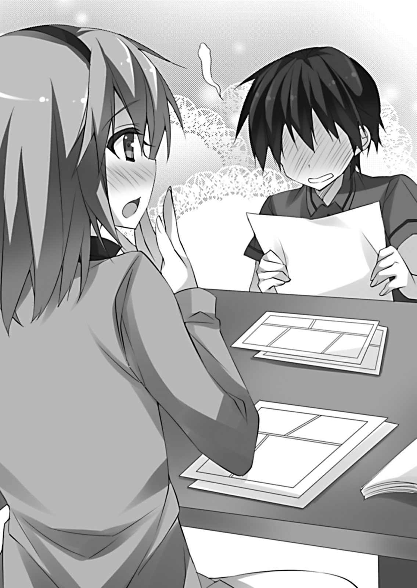
ムラサキさんは少し嬉しそうにそんなことを言った。
俺は更に恥ずかしくなり、何も答えずに消しゴムかけの作業へと戻った。
落ち着け、今目の前にあるのはただの白い紙と黒い線だ。と、ひたすら自分に言い聞かせ、思いつく限りの萎える映像を脳内に流し続けて興奮を抑えるよう努めた。
それからは、ほとんど会話を交わすことなく作業を続けた。時計に目をやると、十時半にここへ来てから三十分程経過したようで、もうすぐ十一時になろうとしている。
「終わった！」
俺は消しゴムをデスクの上に置いて、最後の原稿を持ち上げてゴミ箱の中に消しゴムのカスを払う。単調な消しゴムかけの作業がやっと終わった。三十分しか作業をしていないのに、肩や腕が相当疲れたような気がする。
「お疲れ様でした！ 本当にありがとうございます！」
「いえいえ、他に、何か俺にできることありますか？」
俺の終電は恐らく十一時半頃にここを出れば間に合うだろうと思うので、あと三十分程は手伝いができる。今日は金曜日で明日は学校もバイトもないので、終電で帰れれば十分だ。バイトで帰りが遅くなるというのは既にオカンに言ってあるし。
「よろしいんですか!? とても助かります！ それでは......ベタを塗って頂けますか？」
「分かりました」
ベタ塗り......確か、筆ペンやらサインペンなどで真っ黒く塗る作業だ。中学の時少しだけ絵や漫画を描こうとしていた時期があるので、知識はある。まあ、俺の場合は少しかじっただけで絵や漫画には相当の努力が必要だと悟り諦めたので、その後は絵を描くことをやめてしまったのだが（我ながら根性なしだとは思う）。
ムラサキさんがベタを塗る箇所に印を付ける作業を終えてから、
「では、このバツ印がしてあるところをベタ塗りお願いします」
と、原稿とミリペン、サインペン、筆ペンを渡してきた。
「このミリペンで縁取りをして、面積が広いところはサインペンの太い方で塗って下さい。細かい箇所はミリペンかサインペンの細い方か筆ペン、やりやすいものでお願いします」
「はい」
おおう、結構な量だぞ......あと三十分ではとても終わりそうにない。
とりあえず終電までにできるところまでやるか......。ムラサキさんは徹夜でやるだろうと思うのだが、さすがに俺までそうするわけにはいかない。いや、手伝う分には全く構わないのだが、若い一人暮らしの女性の家で一晩明かすなんて、いくら原稿を手伝うだけとはいえ、許されない行為だと思う。ムラサキさんだって、終電前には帰って欲しいと思っているだろうし。
ひたすらベタがはみ出ないように慎重に塗り続けた。意外と神経を使う作業だが、塗り続けているうちにだんだんと楽しくなってきた。ムラサキさんの原稿はベタの箇所が割と少なく、案外すぐに一枚目のベタの作業が終わった。次の原稿へと取りかかる。
──どのくらいの時間が経過しただろうか。
「あっ......柏田さん、今日......おうちに帰られます......よね？」
「えっ!?」
彼女の質問（？）に驚きの声を上げた、
えっ、今の発言からすると、帰らないという選択肢もアリ......なんですか!? ムラサキさんは、俺を泊めてもいいと思っているのか......!? と、一瞬早とちりして興奮してしまう。
「い、い、一応......そのつもりで考えてましたが......」
動揺を抑えてなんとか返答をする。
「終電、お時間大丈夫ですか？」
「えっ!?」
ふと時計に目をやると............なんと、もう十一時五十分を回っていた。
やっべぇええぇええええええ！ ベタ塗りに集中しすぎて時間に気付かなかった......！ 十一時半にはここを出る予定だったのに......。バカか俺は！
慌てて携帯で終電を検索する。十一時五十一分吉祥寺駅発が終電。あと一分!? ムラサキさんの家から吉祥寺駅まで、歩いて十分くらいだった。......だめだ、もう完全に間に合わない......。
「柏田さん......大丈夫ですか......？ もしかして、もう終電なくなっているとか......」
携帯画面を見つめたまま呆然としている俺を見て、ムラサキさんが声をかけてきた。
「あ、は、はい......」
情けなく返事をする。
「あっでも......」
ちゃんとタクシーで帰るか漫喫かどっかに泊まるかどうにかしますから、安心して下さい！ と言おうとしたのだが、
「もし柏田さんさえ良ければ......泊まって行かれますか？」
「!?」
彼女の言葉に、俺は衝撃のあまり椅子からひっくり返るかと思った。
「お客さん用に一つだけお布団を用意してあるんですよ」
「えぇえっ!? い、い、い、いやその......い、いいんですか!?」
「えぇ、柏田さんさえ良ければ......ですけど」
「あ、あの！ それじゃあ俺......明日の朝まで手伝います！ 徹夜で原稿やるんですよね!? 俺もそれに付き合いますから！」
泊めてもらえるのであれば、そのくらいして少しでも役に立たなければ。
「えぇっ......!? よ、宜しいんですか？ でも、アルバイトの後でお疲れなんじゃ......」
「大丈夫です！ 若いだけが取り柄ですし！ っていうか、ムラサキさんが作業してるのに俺だけ寝るとか絶対無理ですから！」
「......ありがとうございます！ 助かります！ これで、作業は間に合いそうです......」
ムラサキさんが俺の右手を握って握手してきた。彼女にこんなに感謝してもらえるなら、徹夜なんていくらでもできる、と思った。
鞄から携帯を取り出して、オカン宛てに『友達の家に泊まってくる』という内容のメールを送った。
「今日のお礼は必ずしますから！」
「い、いえ、そんな......いつもこっちがお世話になってますから......」
俺は携帯をしまって作業に戻りつつ、彼女の申し出を丁重にお断りした。が。
「いいえ、そんなわけにはいきません！ うぅん......そうですね、今日のお礼に......原稿が終わったら......何でも一つ言うことを聞く、っていうのはどうです？」
「えっ......」
なんでも!?
ムラサキさんの口から出た衝撃の提案に、驚いて彼女の顔を見ると、お得意の小悪魔的笑みを浮かべて俺を見ていた。
ちょ......そんなこと言われたら、変な妄想をせざるを得ないじゃないか......！ なんでも......それって本当に、なんでもいいのか.........!? やべ、また顔が熱くなってきた。
それから邪心を押し殺してベタ塗りの作業を続け、二時間程度が経過した。ベタ塗りを終えた原稿をムラサキさんに渡して、彼女がその原稿のトーンなどの処理をする......という流れ作業の繰り返しだった。午前二時を迎えて眠気もピークだったが、ここで眠るわけにはいかない。
ベタ塗りを頼まれた原稿七枚中、三枚の作業を終えて現在四枚目なので、ちょうど折り返し地点だ。
「ん～～～」
横でムラサキさんが、椅子に座ったまま伸びをしてから、
「もうすぐ、この原稿のトーン処理も終わりそうです......」
と言った。
「え、本当ですか？ 俺もこの原稿のベタ塗りもうすぐ終わりそうなんで、終わったら渡しますね。今俺がやってる原稿含めて、残り四枚です」
「えっ、本当ですか!? あと、たった四枚......!? いつの間にかそんなに進んでいたんですね！ でしたら、明日までにきちんと終わりそうです♪ 良かったぁ......」
彼女は今俺がやっている原稿を見つめて、喜びを露わにしている。
「一時はもう間に合わないって諦めかけていたのに......柏田さんのおかげです！」
「いや、俺なんて何もしてないですし......今のところ、この原稿はこんな感じなんですけど、問題ないですかね？」
今ベタを塗っている原稿を渡して、確認してもらう。
「......はい、バッチリです。......そちらの原稿も、少し見せてもらえますか？」
彼女は俺に原稿を返しつつ、俺が今からやろうとしている残り三枚の原稿を指差した。
「え、これですか？ こっちはまだ全然手つけてないですけど......」
まだベタを塗っていない三枚の原稿を渡すと、彼女は三枚の原稿をパラパラとめくる。突然、原稿の一点を食い入るように見つめ始めた。
「ど、どうかしましたか......？」
彼女は今見ていた原稿を俺の方に向けた。
「やだ......このコマ、デッサン狂ってますよね......？」
「......へ？」
右下にあるコマを指さして、俺に尋ねてきた。確か......ブランドール、というロリキャラが、四つん這いになってこちらにお尻を向けたエロいポーズをとっているコマだ。
......言われてみれば、なんとなーく身体のバランスに違和感を覚えるが......言われなければ何も思わないというレベルである。
「うーん......言われてみれば、って感じですかねえ。全然問題ないとは思いますけど......」
「いえ！ やっぱり、どう見ても狂ってる！ どうして気付かなかったのかしら......」
彼女は自身が今トーンを切るために使っていたトーンカッターを手に取り......なんと、その原稿のコマの枠線に定規を当てて、カットし始めたではないか。
「ちょ、ちょっと......何してるんです!?」
「これは切り貼りと言って、アナログで部分的に直すときはこうするんですよ」
マジかよ......。こんな少しのデッサン狂いでコマごと描き直すだなんて、この人どんだけ自分の原稿にこだわりを持っているんだ......!?
別の白紙の原稿を今切り抜いたコマと同じサイズにカットして、今切り抜いたコマの枠内に嵌めこむ。裏側からテープで貼り付けて固定する。
それから彼女は真剣な表情になって、新たにブランドールの四つん這いお尻向けポーズの描き直しを始めた。
俺はベタの作業の続きをしつつも、隣が気になってチラチラ横目で見てしまう。難しいポーズのようで、何度も描いては消し、を繰り返していた。俺から見たら全く問題ないと思える出来でも、原稿を裏返して電気に向けて透けさせて見て（そうすることで左右反転して見ることができるので、デッサンの狂いが分かりやすくなるようだ）、納得がいかないといった様子で首をかしげて、また消しゴムで消していた。
「ああ......ダメだわ......」
描き直しながら、うわごとのように呟く。
「ムラサキさんって、完璧主義者なんですね......」
「いえ、そんなことありませんけど......あっ、そうだ！ ......ああ、でも......いえ、今はもうなりふり構っていられないわ！」
突然、彼女は何かを思いついたかのようにシャーペンを原稿の上に置いて立ち上がり、クローゼットから何かを探し始めた。......かと思うと、クローゼットから取り出した何かを持ったまま部屋を出て行ってしまった。
一体何なんだろうか......？ と不思議に思っていると、五分くらいして部屋の扉が開けられる。
「む、ムラサキさん......!?」
作業場に戻ってきた彼女は......なぜか、ブランドールのコスプレをしていた。
青いリボンのついた白い帽子に、青いワンピース。金髪のセミロングのウィッグまでかぶっている。
更に手元には、なぜか携帯ゲーム機の３ＤＳを持っている。
「......か、柏田さんに......お願いがあります」
コスプレをしたムラサキさんは、顔を赤らめて恥ずかしそうにしながらも、何かを決意したような様子で深く深呼吸をした。
「え、はい......？」
「......私がこのコマのポーズをとりますので、３ＤＳで撮影して頂きたいんです」
「えっ............えぇえええ!?」
つまり、自分自身が絵のモデルになる、と......。確かにキャラと同じ格好で同じポーズをとれば、とてもいい資料になるのかもしれないが......。
「３ＤＳのカメラ機能は立体的に撮影できるので、絵を描くときの資料にとても役立つんです。だから、その......なるべくこのコマと同じポーズ、同じ構図になるように撮影して頂けると、とても助かります」
彼女は説明を終えると早速絨毯の上に四つん這いになり、俺の方に......お尻を向ける。スカートが割と長めなので下着は見えないが、かなり上の方まで太ももが見えてしまっている。
「こ......これで合ってます？」
彼女はそのポーズのまま顔だけこちらに向け、頬を赤らめて恥ずかしそうにそう尋ねる。
「......え......えええ、ええっと......」
エロいポーズのムラサキさんに見とれてしまっていたが、慌てて我に返る。先ほど彼女がくりぬいた原稿を見た。これとなるべく同じポーズ、同じ構図になるように撮影して欲しい、とのことだったよな......。
「え、ええっと......その......可能であれば......もう少しお尻を、その......上にあげてもらえると......」
「こ......こう、ですか？」
彼女は恥ずかしそうに俺の顔を見ながら、お尻を高く上げる。
「ああああっそんなに上げなくていいです！ もっと下で！」
あんまりお尻を上げるとパンツが見える！
「ごめんなさいね、いくら原稿のためとは言え......こんなはしたないポーズを柏田さんに向ける日が来るだなんて......」
ムラサキさんは顔を赤くしたまま俯いて言う。
「い、い、いえ！ な、なるべく早く終わらせますから！」
俺自身も場所を移動して、なるべく近い構図を探して撮影した。
「と、撮りました......」
「ありがとうございます」
ムラサキさんは慌ててスカートを押さえて立ち上がり、俺から３ＤＳを受け取る。３ＤＳの画面を見た彼女は、自分の写真を見て赤面した。
「やだ、私ったら、こんな恥ずかしいポーズをとっていただなんて......」
「な、なんかすみません......」
いたたまれなくなって思わず謝罪した。
「い、いえ！ 柏田さんが謝る必要なんてこれっぽっちもないですよ!? むしろ、ありがとうございます。ポーズも構図も原稿の絵に近づけて撮影して下さって......。これを資料にさっきのコマを描けばバッチリだと思います。ご協力ありがとうございました」
ムラサキさんは着替えてきますと言い残し、部屋を出て行った。数分後、コスプレ姿から部屋着らしきワンピース姿になって、作業場へと戻ってきた。
「いくら原稿のためとはいえ......私ったら、本当にはしたないですね」
戻ってきた彼女は、恥ずかしそうに笑いながら俺にそんなことを言う。
俺はなんと返答していいか分からず、苦笑いを返すことしかできなかった。
それからムラサキさんは３ＤＳを原稿の隣に置き、再び作業へと戻る。やはり資料があるととても描きやすいようで、スラスラとシャーペンを動かしていた。
「ど、どうしてブランのコスプレ衣装持ってるんですか......？」
「ああ、これは以前、売り子をしてもらうお友達にイベントで着てもらうために買ったんです」
「な、なるほど......でもムラサキさんすっごく似合ってましたよ？」
「えぇっ？ 本当ですか？」
「はい、ムラサキさん自身がコスプレして売り子すればいいのに......とか思っちゃいました」
「私がコスプレ姿で売り子をするなんて......恥ずかしくてとてもできません。そういえば、衣装を持っていてもまだ着たことはなかったので、自分で東邦のコスプレしたのってさっきが初めてかも......」
「え、そうなんですか!?」
つまり、それって......。
「私のあんな恥ずかしい姿を見せたのは、か......柏田さんが初めてです。衣装的な意味でも、ポーズ的な意味でも」
ムラサキさんは恥ずかしそうな笑みを浮かべて、俺の顔を覗き込んでくる。
「ぶふっ!? そ、そんな意味深な言い方を......確かにそうですけど......」
慌てふためいている俺を見て、彼女は嬉しそうに笑っていた。
それから約五分後、俺が四枚目の原稿のベタを終えた。
「はい、お願いします」
ムラサキさんにベタを塗り終えた原稿を渡す。
「はい、お疲れ様でした。ありがとうございます。......柏田さん、お身体の調子は大丈夫ですか？」
「えっ!?」
俺が先ほどから何度か座ったまま肩をぐるぐる回したりしていたので、気を遣わせてしまったのかもしれない。
「だ、大丈夫ですよ！ あと三枚ですし、それに、俺よりムラサキさんの方が大変でしょうし......」
明らかに、ベタを塗る作業よりもトーンを貼る作業の方が大変だと思う。ムラサキさんの原稿は、一枚につき結構な量のトーンを使うようだし。
「いえそんな、私は慣れてますから......少し、ほんの少しだけ、休憩しましょうか」
「えっ!? でも、原稿大丈夫ですか!?」
「えぇ、明日の午前九時までに印刷所に持ち込まなくてはいけないので、八時に家を出るとしても......今は三時前なので、今から寝ないでやればまだ五時間以上時間はあります。トーン処理に原稿一枚につき一時間もかかりませんから、あと四枚でしたら四時間もかからないはずなので......計算上余裕で間に合います」
「な、なるほど......」
そういえば、俺も二時間で三枚程ベタ塗りを終えることができたので、あと残り三枚も同じペースで進められれば二時間で終わるはずだ。あと五時間もあるなら十分すぎるほどだ。
「紅茶でも飲んで一息つきましょう。ここへ来てからずっと原稿の作業で、少しも休んでいませんしね」
ムラサキさんの気遣いで、少しだけ休憩をとることになった。
作業部屋を後にしてリビングへと移動する。
「どうぞ」
「ありがとうございます」
ムラサキさんが淹れてくれたアイスティーを受け取り、リビングのソファーに二人で並んで座った。隣同士に座ると、距離が近くて少々緊張してしまう。作業していたときも隣同士ではあったが、違う椅子な上に距離もあったしな。
「ふぅ......落ち着きますね」
彼女はアイスティーを一口飲むと、幸せそうにため息をついた。
ソファーの座り心地は気持ちいいし、アイスティーは冷たくて美味しいし、生き返る思いだった。
「柏田さんまで一緒に徹夜させてしまって......本当にすみません」
「いえいえ、そんな。......でも同人誌の原稿を描くのって、すっごく大変なんですね......。毎回こんなに大変な思いしてるんですか？」
「いえ、いつもはデジタルですからもっと作業は楽ですし、それに......同人活動はとても楽しいので、大変だと感じることは少ないです」
そうか、この人は本当に同人活動が好きなんだなあ......。
「ムラサキさんって......同人活動を始めてからもう長いんですか？」
「そうですね......初めてイベントにサークル参加したのが、高校二年の頃でしたから......活動を始めて三年になりますね」
......ということは、逆算するとムラサキさんは今大学二年生なのか。
「そのときも今と同じ東邦で？」
「はい、ずっと一筋です♪」
「なるほど～......。同人始めたきっかけとかあるんですか？」
純粋に気になっていたので、これを機に聞いてみた。確か夏コミの時に、恋ヶ崎から軽くは聞いているのだが、本人の口から詳しく聞いてみたい、なんて思ったのだ。
「そうですね......元々絵を描くのは好きで、同人をやる前から東邦など好きなジャンルの版権絵を、一人でスケッチブックに描いたりはしていたんです。だけど、その......当時から私の描く絵は、少々人に見せにくいというか......」
「見せにくい......？」
そういえば恋ヶ崎から聞いた話では、ムラサキさんは最初『描いた絵を人に見せるなんて恥ずかしい』って思ってたんだっけか。見せにくいとは、自信がないから恥ずかしいとか、そういう意味なのだろうか？
「ええ......。あの、すごく恥ずかしい話なんですけど......高校生の頃から、私......そういう......女の子のエッチな絵ばかりを描いていまして......」
「!? ゲホッゴホッゴホッ......」
俺は飲んでいたアイスティーでむせてしまった。
見せにくい絵って、そういう意味で!? 高校生の頃からエロい絵ばかり描いてたって、レベル高えな......。いや、男だったら十分ありえる話だと思うが、ムラサキさんのような可愛い......当時ＪＫが、女の子のエロい絵ばかりを一人で悶々と描いてたって......なんというか、想像すると萌える。
「そんな絵、人に見せるだなんて全く考えていなかったんです。女である私がそんな絵ばかり描いているだなんて、当時の私はとってもはしたなくて下品で、いけないことだと思っていたので。だから、罪悪感に苛まれながら一人コソコソと描き続けていました。描くことは、罪悪感を感じつつもやめられなくて」
「なるほど......」
確かに、思春期の、しかもムラサキさんみたいに上品で真面目そうな女の子にとっては、いけないことのように感じるのも無理ないかもしれない。
「だけどある日、私がネット上で知ってすごく尊敬していた、女の子をすごく可愛く描かれる絵師さん......十八禁の絵なんかも描かれている方なんですけど、その方が女性だってことを知りまして......。すごく衝撃を受けました。女の人でもこういう絵、描いていいんだって。エッチな女の子を描かれる女性絵師が意外と多いということを、全く知らなかったんですね、当時の私」
「はああ、なるほど......。結構絵師さんの性別って分からないもんですよね。隠してる人なんかもいるし」
「そうなんですよねぇ......。......それで私、その方にメッセージを送ったんです。そしたらとても優しい方で、返信を下さって、やりとりをするようになって......」
「へえぇ、すごいですね！」
中学の時一度だけ、pixivで見て好きになった絵師にメッセージを送ったことがあるが、返信が来なかったために凹み、それ以降メッセージを送るなどということを一切しなくなった俺からしたら羨ましいことこの上ない。まあ有名絵師は忙しいだろうから、一ファンなんかに返信できないのは当然のことだと、今なら理解できるのだが。
「話の流れで、ネット上に上げてはいないけど、私も絵を描く......という話をしたところ、今思えば社交辞令だったのかもしれませんが......その絵師さんが、私の絵を見たい、と言って下さったんです。そこで、まだ迷いはあったんですけど、その方が見たいと言って下さるなら......と思って、初めて自分が描いた絵をpixivに投稿したんです」
「それが初めて人に絵を見せた瞬間だったんですか？」
「はい、そうなんです。ありがたいことに、私の絵に点数をつけて評価して下さる方や、ブックマークをして下さる方、コメントを下さる方なんかもいらっしゃって......。人に見て頂いて気に入って頂けたり感想を頂けたりすることがこんなに嬉しいことだなんて、そのとき初めて知りました。それからはもう恥を捨てて、どんどん絵をネットに上げるようになりました。変に恥ずかしがっていた頃の自分がバカみたいに思えて......。そのうち、同人活動もするようになったんです」
「そうだったんですか......」
初めてネットに上げた絵をブックマークしてもらえたりコメントもらえたりしたということは、当時から相当絵が上手かったんだろうな。その前に何枚もスケッチブックに描いてたって言ってたし。
「だから......その私の絵を見たいと言って下さった絵師さんは、私にとってある意味恩人ですね......。こんなに楽しい世界に入るきっかけを、彼女が、下さった......んですから......」
ムラサキさんは過去を思い出して感慨に耽っているのか、セリフが途切れ途切れになっていた。なんだか、声もだんだんと小さくなっているような......。
ふと、横にいる彼女の方に顔を向けてみると......。なんと、彼女は目を伏せて俯いて船を漕いでいた。原稿で疲れてしまったのだろう。本当はこのまま寝かせてあげたいが、原稿がまだ終わっていないのでそういうわけにはいかない。このまま少しの間だけそっとしておいて、五分経ったら起こして原稿を再開しよう。
──そんな考えが、甘かった......。
「......ん......？」
目覚めると俺は、ソファーに横になっていた。
ん？ ......どこだここ？ 俺んちじゃない、見覚えないな......。
「うぅん......」
俺の胸の上あたりで、何かがもぞっと動いた。寝たままの状態から首だけを動かして、それが一体何なのかを確かめる。
......そこには、女性の頭があった。俺の胸の上に、女性の頭が乗っている。......というか、俺の身体の上に女性が乗っかっている。
......な、なんだ、この状況は!?
どういうことだ、女性とこんなにくっついて寝ているだなんて......俺、まさか知らぬ間に大人の階段上ったのか......!? ......いやでも、思いっきり服着てるし。
だんだんと寝ぼけていた頭がはっきりしてくる。その女性は......ムラサキさんだった。そうだ、俺、彼女の家で同人原稿の手伝いをしていて......リビングで少しだけ休憩して、色々話しているうちにムラサキさんが眠ってしまって......。そうか、その後俺まで寝てしまったのか......。
「......」
位置的にイマイチ彼女の寝顔がはっきりと見えないことが残念だが、女の子特有のいい匂いがして、ついつい匂いを嗅いでしまう俺は我ながら気持ち悪いかもしれない。ムラサキさんの身体の柔らかい感触が、俺の胸、腹、足......身体全体へと伝わってくる。ああ、幸せだ......暫くこのまま起こさずにいよう......。
──って、待てよ、今......何時だ......!?
リビングの壁に掛かっている時計を見ると、八時を指していた。
......あれ？ 原稿......終わってない、よな......。
確か、八時に家を出て印刷所に原稿持ち込むって、言ってたよな......？
ＹＡＢＥＥＥＥＥＥＥＥＥＥＥＥＥＥＥＥＥＥＥＥＥＥＥＥ!!
「むっムラサキさんっ！ 起きて下さい!!」
俺はムラサキさんの肩を揺さぶって起こす。
「ああ、らめえ......乳首はこのトーンじゃないと......」
「!?」
やけに色っぽく、しかしわけのわからない寝言を言う彼女に一瞬ひるんだが、今はそれどころではない。
「げっ原稿！ 締め切りの時間過ぎてますっ！」
一層声を大きくして肩を揺さぶり続ける。
「ん......え、柏田さん......？」
目を覚ましたムラサキさんは身体を起こすと、俺の上で寝ていたことに気付いて驚いて目を見開いた。至近距離で見つめられてドキッとする。や、やばい......この状況......「私に一体何したんですか!?」なんてあらぬ疑いをかけられて、怒られたりビンタされたりする展開じゃん......。漫画とかだと大抵そうなるよな......。
「あ、あら......やだ、私ったら......」
「......!?」
しかし次の瞬間、彼女の反応を見て俺は絶句した。彼女は俺を見るや否や、頬を赤らめて、なぜだか......手を頬に当てて少し嬉しそうな表情になったのである。
「ね、寝ぼけて柏田さんを襲ってしまうだなんて......私ったら......！ し、信じて下さいね？ 全然覚えていなくって......」
なっ!? 一体どういう勘違いをしてるんだこの人は！ ムラサキさんが俺を襲うって......ど、どういう状況だよっ!? 普通逆だろ!?
「いやっ、今も完全に寝ぼけてますから！ 目を覚まして下さい！ 原稿！ 締め切り！ 今もう八時なんですよっ！」
彼女の肩を再度揺さぶる。
「......え......？」
彼女は時計を見て、固まった。
「げ......原稿......え？ 私......原稿途中で、休憩中に......寝てしまったの!?」
手を口元に当てて、真っ青になる。やっと正気に戻ってくれたようだ。
「す......すみません！ ムラサキさんが休憩中に寝てしまって、五分したら起こそうと思ってたのに......俺まで、いつの間にか寝てしまったみたいで......」
ああ、もう、俺の大馬鹿野郎。起こすつもりが、自分まで寝てしまうなんて......。あのとき、五分後に鳴るように携帯でアラームでもかけておけば、こんなことにはならなかったのに......。ムラサキさんが必死に頑張ったのに、全て水の泡じゃないか......。
「い、いえ......元はといえば寝てしまった私が悪いのですから......」
ムラサキさんは冷静に言うと、額に手を当てたポーズのままフリーズしてしまった。ああ、やはり相当ショックを受けているのだろう......と思っていると、突然立ち上がってテーブルの上にある携帯を手に取った。
「ちょっと......電話します！」
「......えっ!?」
電話？ どこへ？ 俺が尋ねる間もないまま、ムラサキさんは険しい顔つきになってどこかへと電話をかけ始めてしまった。
「あ、もしもし、狭川です。いつもお世話になっております」
さがわ？ って、ムラサキさんの名字なんだろうか。
「えぇ、そうですよね......実は、その件でお電話したんですが......はい、そうなんです......あの......もう少しだけ待って頂けませんか？ 今日中......いえっ、今日の午前中までには必ずそちらへお持ちします！ お願いします！ ............えっ!? ほ、本当ですか......!? ありがとうございます！ ご迷惑おかけしてごめんなさい......はい、はい......分かりました！ 必ずそのお時間までには間に合わせます！ 本当にありがとうございます！」
......もしかして、電話の相手って......。
「柏田さん！ 印刷所に今お電話したんですが......今日の十二時までに持ち込めば特別に間に合わせて頂けることになりました！」
「ま、マジですかっ!? 良かった──！」
良かった......本当に良かった。頼んでみるもんなんだなあ。
「えっと、十二時までに持ち込む、ということは......」
「十一時に家を出るのでそれまでに原稿を仕上げなければなりません！ つまり......あと三時間......ギリギリ、間に合うか間に合わないか......。いえ、絶対に間に合わせます！」
ムラサキさんは顔の前でガッツポーズを作った。......かと思ったら、その手を俺の手へと持って行き、両手で俺の手を握る。
「柏田さん、あと三時間......付き合って頂けます......よね？」
彼女は眉を八の字にして、潤んだ瞳で俺を見つめた。......うぅっ、こんな風に頼まれたら断れるわけがない。というか頼まれなくとも、寝てしまった俺の責任もあるし手伝うつもりでいたのだが。
「もっ......勿論です！」
俺たちは急いで作業部屋へと戻り、デスクへと向かう。
二人とも先ほどまでの余裕のある仕事っぷりではなく、全神経を原稿に集中させてなるべく迅速に手を動かした。もはや二人の間には会話もなかった。──結果、寝る前は二時間で三枚のベタ塗りを終えたが、なんと今回は一時間で三枚のベタを塗り終えることができた。すげー俺！ 俺って結構、アシスタント向いてる？ 才能あるかも？
「ベタ終わりました！」
「お疲れ様です！ では柏田さん、こちらのトーンを貼って頂けますか!?」
「えっ......トーン!?」
正直、てっきり自分の作業はもうこれで終わりだと思って安心しきっていたので、唖然とする。
「お、俺、トーン貼ったことないんですが......大丈夫でしょうか？」
初心者で不器用な俺でも、出来る作業なのだろうか？
「大丈夫です！ というか、無理でも柏田さんにやって頂かないと終わらないんで」
ムラサキさんは俺に満面の笑みを向ける。......その笑顔が恐ろしいんですけど！ さっきやるって言いましたよね？ なんてセリフが今にも聞こえてきそうだ。
ムラサキさんにトーンの貼り方を教えてもらってから、実践へと移る。
「あぁっ！ ダメです柏田さん、下の紙まで切っちゃ！」
「えぇっ!? す、すみません！」
ベタ塗りと違って、トーン貼りめっちゃ難易度高ぇんすけどっ！ 元々細かい作業が苦手なので、慎重に時間をかけてトーンをカットする。しかし、あまりのんびりやっている時間もない。正確に、迅速に......やっぱり俺、アシスタントなんて向いてないな......。
それから、約一時間半が経過した。
もはや腱鞘炎一歩手前なんではないかと思える程、手の甲が痛い。
「終わった......」
「えぇ......終わりましたね......」
俺とムラサキさんは口々にそう呟いた。
時計を見ると、家を出なければいけない予定である十一時の、五分前。なんとかぎりぎり間に合った。
こんなに大変だったのだから、終わったときはもっとこう、やったー！ とか飛び跳ねたり二人で喜びを分かち合ったりするものだと、作業しているときは信じて疑わなかったのだが......もはやそんな気力は、俺たちには残っていない。
二人して椅子の上から滑り落ちるように絨毯の上へ移動して、座り込んだ。そのまま絨毯の上に倒れ込みたかったが、先ほどのように眠ってしまったら今度こそ爆死決定なので、必死に堪えた。ムラサキさんも耐えているようだ。
「本当に......ありがとうございました......。全て......柏田さんのおかげです」
ムラサキさんは疲労のあまり、普段の彼女の綺麗な声とはかけ離れたかすれた弱々しい声で礼を言った。
「いえ......俺は何も......」
本当は「やりましたね！」とか「ムラサキさんの努力の成果ですよ！」とか、もっと言いたいことはあったが、そう返すのが精一杯だった。首も肩も腕も手首も手の甲も全てだるいし、先ほど恐らく四時間くらい寝たのだろうが、昨日のバイト疲れもあって疲労も眠気もマックスだった。ついでに、昨日バイト後におにぎりを一つ食べてから何も食べていないので、空腹具合もやばい。
「それでは、私はこの原稿を印刷所に持って行きます」
「あ、じゃあ俺も......一緒に出ます」
あまり長居するわけにもいかないので、早々にムラサキさんの家を出ようと思った。っていうか、ぶっちゃけ早く家に帰って寝たい。フラついた足取りで帰る支度をする。帰りの電車で絶対寝るな、これ......。
二人でムラサキさんのマンションを出ると、彼女が心底申し訳なさそうに、
「ごめんなさい、タクシーで印刷所まで行かないと間に合わないので、駅までお送りできないのですが......」
と言った。
「あっ全然いいですよ！ 道覚えてますし、原稿間に合わなかったら大変ですからすぐ向かって下さい」
「すみません、本当にありがとうございます......」
俺の言葉を聞いてムラサキさんは俺に一礼すると、俺に背を向けて慌てて走り出した。
......やべ、そこまで急がねばならない時間だったのか......ま、間に合うのかな......？
俺が不安に思った瞬間、彼女は突然立ち止まって、俺に振り返った。
「そ、そうだ......大事なこと忘れてました」
「......え!?」
今立ち止まらなくてはならないほど、大事なことなのだろうか？ 原稿の締め切りが不安な俺としては、一刻も早くタクシーに乗って欲しいのだが。
「お礼の件、ちゃんと考えておいて下さいね！」
「お礼......？」
「あら、もう忘れてるんですか？ 何でも一つ、言うことを聞くという件です」
小悪魔的笑顔を浮かべて、彼女は俺に言う。
すっかり忘れていたが、そういえばそんな話をしたんだった。
「本当に何でも構いませんから......ねっ」
彼女はウィンクをしながら、俺に向かって投げキッスをした。
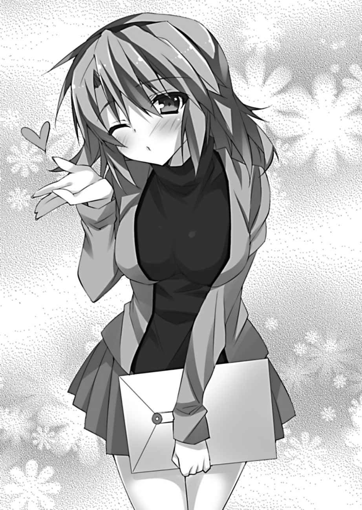
な......!? 投げキッスって......か、可愛いけど、そんなこっぱずかしいこと、実際にやる人初めて見たぞ！ まだ寝ぼけているか、疲労のあまりおかしくなってしまったのだろうか？ 代わりに俺の眠気がどこかへ飛んでいってしまった。
しかし、何でも構わない、って......。そんな言い方されたら、エロいことでもいいのか......って妄想せざるを得ないじゃないか......！
「わ、分かりましたから！ ちゃんと考えておきますから、早く向かって下さい！」
俺がそう叫ぶと、
「本当に、ちゃんと考えておいて下さいねっ！」
とこちらに向かって手を振ってから、再び俺に背を向けて走り去っていった。
そんな彼女の後姿を見ながら、俺はこれからも小悪魔的な彼女に振り回されるのかもしれないなあ......なんて、なんとなく思った。
決して、嫌ではない。むしろ......ご褒美です！ ......なんて思ってしまうのは、今俺の頭が疲れ切っていて正常に働かないせいなんだろう......と、無理矢理思い込むことにして、ふらついた足取りで駅までの道のりを歩いた。
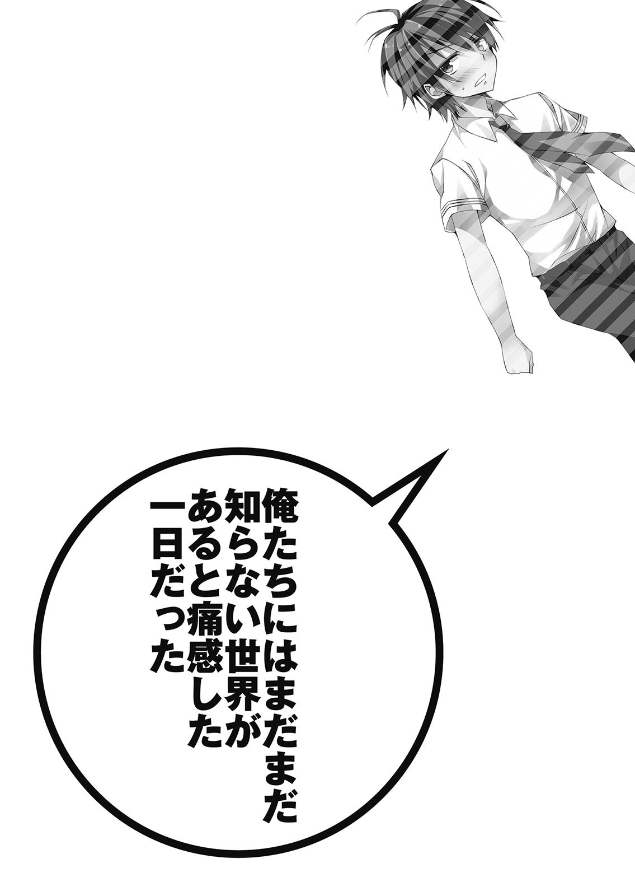
「カッシー！ 今日帰りちょっとアキバ付き合って欲しいんだけど～」
ある日の放課後、帰り支度を終えた俺が教室から出ようとすると、隣のクラスの鈴木がうちのクラスの教室まで入って来て俺に声をかけた。
「......ちょっ！」
アキバ、という単語にオタバレを恐れた俺は焦って、鈴木の背中を押して無理矢理教室の外へと移動する。
人通りの少ない階段の踊り場まで移動すると、
「あー、そっかごめん、カッシーオタ隠してるんだったっけ」
と、鈴木が申し訳なさそうに俺に謝罪した。
以前「学校ではオタクを隠しているのでその手の話題は人目がつかないところでだけにして欲しい」と鈴木に頼んであったのだが、鈴木の奴は完全にそれを忘れていたようだ。
「あー、まあ今後気をつけてくれや......」
まあ『アキバ』って単語だけならそこまで過剰に警戒するほどではないのかもしれないが、俺はここのところオタバレに関して以前より一層過敏に警戒するようになっていた。
というのは、俺の想い人である長谷川がオタクが苦手であるとの発言を聞いて、何が何でも俺がオタクだということを隠し通さなければ......と、深く決心したからなのだ。
「で、アキバだっけ？」
気を取り直して、俺は鈴木に尋ねる。
「そうそう、ちょっと買わなきゃいけないもんあってさー」
「俺もちょうど行きたかったし、いいよ」
先日バイトの給料日も迎えたことだし、近々行きたいと思っていたのでちょうど良かった。
「マジで!? やったー！」
鈴木は無邪気な笑顔を浮かべて大げさなくらい喜んだ。
帰りに寄り道なんて今までにも何度もしてるのに、変な奴......。と思うと同時に、たかがこんなことでこんなに喜んでくれるなんて、可愛い奴だなあ......とも少し思ってしまった。
それから鈴木と二人、電車で秋葉原まで向かった。駅に到着して電気街口を出る。
「で、どこ行く？ お前の買いたいもんて何なんだ？」
「あ、えーっとね......」
鈴木は鞄から財布を出すと、その中から四つ折りにされた紙を取りだした。欲しいもののリストを書いてきたのか？ 一体どんだけ買い物するつもりだよ......と思ったのだが。
鈴木はその紙を開いて、俺の方へ向けて見せてきた。
「これ、今日買うものリスト」
「へぇー............えっ......!?」
買い物リストに目を通した俺は、一瞬流しかけたがすぐに自分の目を疑った。
「んなっ......なんだよこれ!?」
そのリストには可愛らしい字で、買うべきものが次のように書かれていた。
『☆同人誌×３ ジャンルは全て『ダンスのプリンスさまっ♪』
・タイトル：君と朝まで サークル名：クレイジードッグ
・タイトル：Ｋｉｓｓ×Ｋｉｓｓ×Ｋｉｓｓ サークル名：クレイジードッグ
・タイトル：危ない☆スキャンダル サークル名：万屋
☆キャラグッズ×２
・【マジ恋プリンス♪】北条隆也添い寝シーツ
・【俺と野獣と愛玩媚薬】横峰和人お尻マウスパッド
☆ゲーム×１
・俺の彼氏は３本使い
......以上ですっ♪ 恥ずかしいと思うけどよろちく
あっ、買ったときの周り（お客、店の人）の反応もちゃんとお姉ちゃんに報告すること～！ Ｂｙ実月★』
「おい......これって......」
「いや......この前さ、姉貴のお菓子勝手に食べちゃって、姉貴超激怒して、そのお詫びとして買い物頼まれたんだけど......」
鈴木のお姉さんである実月さんに頼まれた買い物リストである、ということは、最後の文で理解できた。しかし......。
「高校生の弟にこんなもん買いに行かせるって......明らかに罰ゲームってか嫌がらせじゃね!? これって確実に女向け......っつーか腐女子向けグッズばっかだよな!?」
俺はつい声を荒げた。もし自分が同じ仕打ちを受けたら......と想像してゾッとしてしまったのだ。
グッズやら同人誌やらの元ネタの作品名を見ただけで、女性向けに詳しくない俺でもこれらが『女性向け』または『腐女子向け』ジャンルの商品だと分かってしまう。それも、添い寝シーツやらお尻マウスパッドやら同人誌やら......いずれもかなり濃い部類に入る商品だ。つーか、『買ったときの周りの反応も報告すること』って......お姉さん、完全に鈴木を虐めて楽しんでるよな......。
「そーだよ......前から言ってるけど姉貴は鬼畜でドＳで超性格悪いから......つーかこれだけで許してもらえるだけでも今回はまだマシなんだよ......」
鈴木は死んだ魚の目をして言った。鈴木のことが色んな意味で心配になる。
「......お願いカッシー！ 買うの手伝ってくんない!? 一人でやり遂げるなんて俺絶対無理っ！」
突如、鈴木が俺の肩を掴んで懇願してきた。
「んなー!? っつーか、最初っからそれが目的かよ!?」
もしかして、今日俺がアキバに付き合うって返事したときあんなに嬉しそうにしてたのは、このことに付き合わせたかったからなのか......!? ハ......ハメられた！
こんな恥ずかしいもん買えるかっ！ と、断ろうとしたのだが......。
「こんなドＳでド鬼畜な姉に虐められてる俺、超可哀想だと思わない!?」
真剣な表情をして訴えかけてくる鈴木を邪険にすることなど、できなくなってしまった......。今にも泣き出しそうな鈴木を見て、確かに可哀想だと思ってしまったのだ。
「くっ......わ、分かったよ、しょうがねえ......さっさと終わらすぞ！」
「マジでー!? ありがとーカッシー！」
こうして、俺と鈴木の戦いが始まったのだった。
買い物リストには、どの商品がどの店に売っているかということまで実月さんによってわざわざご丁寧に書かれていた。リストによると、女性向けアイテムを多く取り扱っている『とらのあな秋葉原店Ｂ』に、リストに書かれた同人誌が売っているとのことだったので、まずはそこへ向かうことにした。
一階のＣＤ売り場には何度も行っているが、上の階の女性向け商品が売られているフロアへは行ったことがない。緊張しながら鈴木と二人エレベーターを上がる。
目的の階へ辿り着き、エレベーターを降りた。
勿論、店内には女性客しかいない。ついでに、店員も女性だった。
初めての空間にとても緊張してしまう。平積みされているＢＬ同人誌に目をやると、当然のごとく男同士が絡んでいる表紙のものばかりだった。
店内には、俺たちの他に二人組の女性客が二組いた。ぱっと見、一組は割と年齢が高めのようで、もう一組は反対にかなり若いようだった。非常に気まずいので、なるべくどちらの客の近くへも行かないようにしよう......と心に決める。
「じゃあ俺はこの本とこの本探すから、カッシーはこの本探してくれる？」
「お、おう......」
鈴木がリストの本のタイトルを指差して俺に指示した。よし、俺が探す同人誌は『危ない☆スキャンダル』......なんだよこのタイトル！
鈴木と二人、アニメ『ダンスのプリンスさまっ♪』の同人誌が売っているコーナーまで行き、恥を堪えて本を探し始める。なるべく女性客の方に顔を向けないようにしているが、視線が痛い。俺たちを見てコソコソ何かを話したりもしている。きっと、なんで男がＢＬ同人誌なんか見てんだよ、邪魔なんだよ！ って言われているに違いない......。俺だってエロ同人誌を買おうとしているときフロア内に女性客がいたら恥ずかしくて早くどこかへ行って欲しいと思うので、女性もきっと同じ気持ちだろう。なるべく早く立ち去りたいと思い、全神経を集中させて同人誌を探した。
「あ、あったー！ ほら！」
鈴木が見つけた同人誌を笑顔で俺に見せた。すぐに見つけられたのが嬉しいのだろう。
やがて俺も同人誌を見つけることができた。鈴木に本を渡すと、奴はレジへと向かおうとしたのだが......恥ずかしいからレジ付近までも一緒に来て欲しい、などと言うので仕方なくついていってやった。
鈴木が無事購入できたようなので、逃げるようにそそくさとエレベーターに乗り込む。
「はあ......なんか疲れた......家に姉貴のああいう本とかいっぱいあるから見慣れてるとはいえ、レジまで持ってって買うとかマジ超きついし......」
鈴木がげんなりしながら言う。
「つーか、お前のお姉さん......腐女子だったんだな......」
オタクとは知っていたが、腐女子だったとは少し意外だった。
「まー腐女子っちゃ腐女子だけど......なんつーか、その一言では片付けられないんだよね。あいつ属性多すぎて」
「え？ 属性が多すぎる？」
「うん、『ゆりかごから墓場まで一通り行ける』とかマジキチ発言してるし」
「!?」
『ゆりかごから墓場まで』という衝撃のフレーズに思わず吹いてしまった。
「現にロリ、ショタ、熟女、オヤジ、ＢＬ、百合......なんにでも手ぇー出してるし......。今はたまたまＢＬがマイブームみたいだけど......」
な、なんという超人......。常識を逸脱していやがる。あのオシャレで優しいお姉さんがそんな人だったなんて......とてもじゃないが信じられない。
とらのあなを後にした俺たちは、今度はアニメイトへ移動して、【マジ恋プリンス♪】（アニメ化もした人気乙女ゲーム）の添い寝シーツと、【俺と野獣と愛玩媚薬】（よく知らないが、ＢＬゲームらしい）のお尻マウスパッドを購入するべく探すことにした。
キャラクターグッズが売っているコーナーですぐに見つけることができた。
添い寝シーツは、シーツにイケメンキャラが寝転がってこちら（？）に向かって手を差し伸べているイラストが描かれているというもの。ふとんにかければキャラと添い寝している気分になれる......ということでそんなネーミングなのだろうか。まあ、こっちはまだいい。
「うわっ......！ な、なんだこれ......!?」
問題はお尻マウスパッドの方だ。商品を前に、思わずそんな声を漏らしてしまった。マウスパッドに後ろを向いたイケメンキャラがお尻を突き出し、恥ずかしそうにこちらを振り向いているイラストが描かれている。尻の部分が膨らんでいて触ると柔らかい。
男性向けでも萌えキャラの抱き枕やおっぱいマウスパッドなんてものがあるし、俺は家族に見られるのが嫌で買ったことこそないものの欲しいと思ったことはあるので、非難できる立場ではないのだが......正直なところ、それらのグッズにかなり引いてしまった。鈴木のお姉さんはこれらを購入して一体どうするのだろうか？ 本気で理解に苦しむ。
鈴木は戸惑いながらもそれらを手にとってレジへと向かう。再びレジの近くまでついて来てくれと言うので仕方なくついていってやる。
「女性向けでもこんな商品あるんだな。男からしたら誰得だよとか思っちゃうけど......」
「......もうね......ヤバいよね。あいつ、ビョーキだよね。彼氏いるところも見たことないし、こんなもんばっかに金つぎ込んで......」
鈴木は姉のことを語りながら遠い目になった。蔑んでもいるが、少しだけ......そんな姉を心配している、という風にも見えた。
あのお姉さんがそこまで残念な人だったなんて......。そんな風には微塵も見えなかったのに。
やがて列が進み鈴木がレジで会計を終える。
俺はここへ来る前、バイト代も入ったことだしアニメイトで何か欲しいものがあったら購入しようと考えていたが......今や鈴木姉のおつかいに精神的に疲れ切ってしまい、すっかりそんな気分ではなくなっていた。
しかし、鈴木は違ったようだ。
「えーっと、次で最後......『俺の彼氏は３本使い』とかいうゲーム？ ......これ売ってんの、通り渡った向かいにある店だね。その前に俺、ちょっと別の店で買いたいもんあるんだけどいいかな？」
会計を終えた後、飄々とそんなことを言う。
「ああ、いいけど......」
こいつ、まだそんな元気あるのか......などと感心してしまう。アニメイトを後にして鈴木が行きたいという『別の店』へと移動した。ずばり、その店とは......エロゲが売られている店だった。エロゲを購入する際年齢確認をされないので、俺もよく利用している店だ。
「え、エロゲ買うんか？ 今日制服じゃん。買えんのか？」
さすがに俺は、学校の制服のままエロゲをレジまで持って行く勇気などない。
「あ、そういえばそっかー。まー一応レジまで持ってって、無理だったら諦めるわ」
鈴木は脳天気に言いながら、素早く目的のエロゲを探しだした。
「あー、これこれ」
「......!?」
鈴木が手にしたのは、パッケージの表面にどう見ても......小学校低学年くらいにしか見えない幼女のイラストが描かれた、『はじめてのおるすばん』というタイトルの、所謂......『ロリゲー』という代物だった。
「な、何だこれ......初めて見たぞ......」
「あー、そんなに有名ではないからねー。なんか良ロリゲーって評判高かったからさー」
全く恥じたりする様子もなく、鈴木は飄々と説明した。
「へ、へぇー......」
興味本位でパッケージの裏側を見る。あらすじを読む限り、物語性などはほとんどない、実用的な『抜きゲー』のようだ。ロリのエロいグラフィックが満載だった。
「カッシーも興味あんの？」
「いや......全く......」
ロリコン気質が皆無な俺には、『うわー、こんなもんあるんだー......』という感情しか湧いてこず、やってみたいなどとは微塵も思わなかった。こういうゲーム、どんな奴がやるんだろう？ とか今まで思ってたけど、まさか自分の友人にいたとは......。
「じゃ、買ってくんねー」
鈴木は嬉しそうに『はじめてのおるすばん』をレジまで持って行った。そんな鈴木の後ろ姿を見て、俺は心配せずにはいられない。先ほど二次元イケメングッズに金をつぎ込む姉のことを「あいつビョーキ」などと蔑んでいたが......ロリのエロゲーやるお前も十分危ないぞ......。相変わらず三次元には全く興味がないようだし、大丈夫だろうか？ 俺だって同じ彼女なしのオタクなのだから人のことは言えないが......俺は三次元に興味もあるし、ロリコンでもない。危険度で言えば鈴木の方が遥かに上だと勝手に思っている。
「買えなかったー......今度通販で買うわ」
鈴木ががっくりと肩を落としてレジから戻ってきた。
「ん？ カッシーまでなんか悲しそうな顔してるけどどうしたん？」
「え......いや......」
だが本人にそんなことを言う勇気はなく、「残念だったな！」と肩を叩いてごまかした。
「じゃ、次でラストだね」
エロゲショップを出て、鈴木が買いものリストを見ながら言う。
鈴木が持っているリストを見ると、『俺の彼氏は３本使い』というゲーム名の横に売られている店の名前が書かれていたが、俺は行ったことがない店だった。どうやら女性向けのオタクショップのようだ。
鈴木は以前姉に付き合わされたことがあるらしく、店の場所を知っていると言う。
鈴木の後に付いていき、店へと辿り着いた。
「しかし......一体どういうゲームなんだろうな」
「『俺の彼氏は......』とか言ってるからＢＬゲーでしょ」
フロア案内を見て、ＢＬゲームは３Ｆに売られているとのことだったので、階段を上がる。
３Ｆに辿り着き、ＢＬゲームのコーナーを見つけて二人でゲームを探し始めた。
「うっわー......」
鈴木がゲームのパッケージの裏面を見て表情を歪めている。
「ん？ あったか？」
「いや、違うけど......見てこれ」
鈴木にゲームの裏面を差し出されて見てみると......そこには、筋肉質な男同士のエロいスチルがいくつも掲載されていた。
「うげっ......」
正直言って、かなりキツい。今までの店で見てきた同人誌の表紙なんかは、同じＢＬでもエロ度は低かったし、少女漫画みたいな絵だったのでまだ平気だったのだが......こうももろに男同士のエロシーンが描かれていると、視覚的ダメージがかなり大きい。
「......ほ、ほらもう、余計なもん見てないでさっさと見つけてさっさと買って、早くこの店を出るぞ！」
げんなりしている鈴木の手からＢＬゲームを奪い、元あった場所へと戻す。いつまでもこんな空間にいたら精神が滅入りそうだ。一刻も早く外の空気を吸いたい。
「あ、あった！」
鈴木が嬉しそうな声を上げてゲームを手に取った。どうやら、目的の品を見つけたらしい。
「おお！」
鈴木が手にしたＢＬゲームのパッケージに目をやる。『俺の彼氏は３本使い』というゲームのタイトルロゴが入っており、男キャラが二人でベッドに入っているというイラストが描かれていた。
不可解なのは、パッケージのイラストだった。男二人でベッドへ......という時点でおかしいのだが、そこはＢＬゲームなのでまあいいだろう。問題は、そのシチュエーションだ。一人の男キャラがベッドのシーツをまくってもう一人の男キャラの下半身を見て、驚いた表情をしているのだ。ちなみに下半身を見られている方の男はドヤ顔をしている。
次にキャッチコピーを見て、俺は絶句した。
『３本の快感......教えてやるよ』
えっ......？ ..................えっ......？
このＢＬゲームのタイトルの『俺の彼氏は３本使い』の３本って......まさか......!?
「......腐女子の発想マジキチすぎるんだけど......」
俺の隣でパッケージを見ている鈴木も『３本』の意味を理解したようで、顔面蒼白になっていた。
「マジ......意味わかんねえ......」
俺もうわごとのように呟いた。鈴木がパッケージを裏返す。そこには、男性器が３本生えた男とのエロシーンのグラフィックが描かれており、著しく気分が悪くなった。あらすじがあったので目を通す。
『主人公の青年・岩瀬大輝はバーで知り合った日下部というミステリアスな男に心惹かれていく。しかし彼には、大きな秘密があった。彼の身体には、以前彼が属していた闇の組織での人体実験で飲んだ薬によって、ペニスが３本生えていたのだ。──......』
俺がそこまで読んだ時点で、鈴木がそっとゲームを元あった場所へと戻した。
「おっおいっ、何戻してんだよっ!? レジまで持ってかなきゃダメだろうが！」
「カッシー......俺たちは何も見なかった、そういうことにしよう」
鈴木は笑顔で俺に言ったが、目が笑っていない。
「マジ恐ろしすぎるんだけど腐女子の発想！ つーか何が一番恐ろしいって、こんなおぞましいもんを俺と血の繋がった姉貴がやろうとしてるってことだよ！」
鈴木は吐き気を催しているのか、口元に手を当てて震えている。
「き、気持ちは分かるが落ち着け鈴木......！ でもほら、お前がやれって言われてるわけじゃないし、さっさと買っちまって早くここを出ようぜ！」
俺は鈴木の肩を掴んで説得する。
「買う......!? 無理無理無理無理無理無理！ あんなもんレジまで持って行くとか、超無理っ！ だってあれ持って行ったら、店員に俺があのゲームやるって思われるんでしょ!?」
「いやでも、ゲーム買っていかなかったらお姉さん怒るだろ？」
「............多分、もっと酷いおしおきを仕掛けてくると思う......」
鈴木は全てを諦めたかのような目をして呟く。
「じゃあ今買っちゃえよ！ あの店員となんて二度と会わないだろうし、なんと思われても別にいいじゃねえか！」
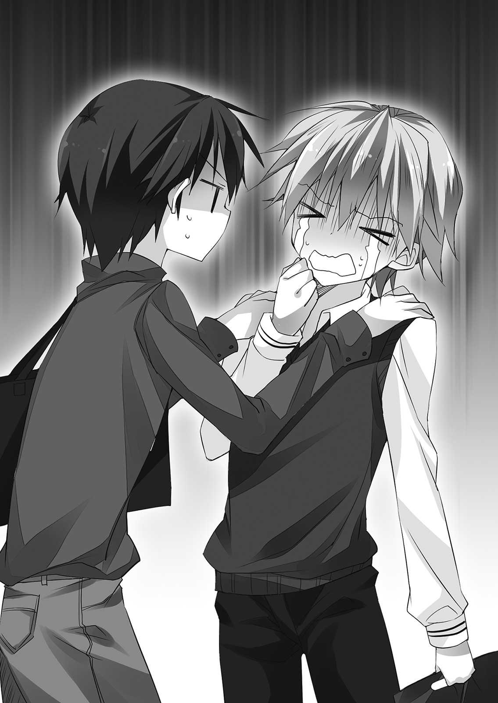
「............カッシーは、人ごとだから簡単に言うんだよ......」
鈴木が涙目で俺を見つめた。そんな鈴木をとても不憫に思う気持ちもあるが、早く終わらせて早くこの店を出たいというのが俺の本音だ。早くレジへ持って行って欲しい。......くっそ、もう......！
「あー......しょうがねえな......！」
俺は『俺の彼氏は３本使い』を商品棚から手にとって、そのままレジへと向かう。
「えっ............!?」
鈴木が俺の後ろで驚いた声を上げている。
「......こ、こちら七千百四十円でございます」
レジに商品を置いた俺を、店員がやや戸惑い気味に見ている。視線が痛い。
「鈴木、金」
振り向いて、後ろにいる鈴木に金をせびる。
「あっ、うん......」
鈴木から金を受け取って、支払いを終えて商品を受け取った。
「ほら、さっさと出るぞ」
「う、うん！」
最後の買いものを終えた俺たちは、そそくさと店を後にした。
「いやーマジすごい！ カッシー超男らしい～っ！ 男っていうかもう漢、だよね！」
店を出て駅に向かうまでの間、鈴木は輝いた目で俺を見つめながら俺を褒めちぎり続けた。
「もう改めて惚れ直したわーっ！ カッシーがいなかったら絶対買えてなかったもん、ほんとありがとーっ！」
俺の右手を両手で握り、ぶんぶんと上下に振る。
「ハハハ......そんなに褒めても何も出ねえよ......」
惚れ直したとか男に言われても何も嬉しくねえ......。
「これで姉貴に怒られなくて済むーっ！」
「そらー良かった良かった......」
俺と鈴木によるおつかいは、そんなこんなで幕を閉じたのだった。
その日帰宅すると、いつものようにあかりがリビングでゲームをしていた。
「ただいま」
「おかえりー」
珍しくあかりがちゃんと俺の顔を見て挨拶を返してきたので、少々驚いた。
「いや～、今日はいいもん見ちゃったー♪」
かと思ったら突然、上機嫌でそんなことを言う。どうやら何かいいことがあったらしい。
「いいもん？」
「そー！ 今日あかりオタク友達とアキバ行ったんだけどさ～」
「!?」
アキバ......？ あかりも今日、俺と同じくアキバへ行ったのか......。
「とらのあなの女向け同人誌売り場で、高校生っぽい腐男子が、二人でダンプリのＢＬ同人誌買ってたんだよね！」
「......!?」
え......え......!? 秋葉のとらのあなでＢＬ同人誌を購入してた高校生......って......。
完全に俺と鈴木じゃねえか！
そういえば、とらのあなに随分若そうな女の子二人組がいた気がするけど......まさかあれがあかりだったのか......!? 恥ずかしさのあまりずっと女性客の方は見ないようにしてたから、全然気付かなかった......。
しかも、腐男子って......完全に誤解してやがる。いや、ＢＬ同人誌なんか買おうとしてたら腐男子と思われて当然なんだけどさ......。
「マジやばかったー！ 周りのお客さんとか店員さんもみんな注目してたし～！」
ニヤニヤしながらテンション高くそんなことを言うあかりは、我が妹ながら若干キモかった。お前が今萌えてる男子高校生とは兄なんだぞ......。しかし、男がＢＬ同人誌買ってるだけでそんなに萌えるものなのか？ 腐女子とは、わけがわからないよ......。
「だって二人組でＢＬ同人誌買うなんて、絶対ホンモノのホモだよね！ 二人仲良くずーっと一緒にいたし！」
......!?
俺は妹の発言に絶句した。な、何という誤解をしているんだこいつは......!?
「あ～写メでも隠し撮りしてツイッターにでも載せれば良かったなー！」
なんて恐ろしいことを......！
......もしかして女性の注目を浴びていたのは、ホモだと勘違いされてたからなのか......!?
腐女子の妄想力こえぇー！
「直輝、何青い顔してんの？」
「い、いや別に......」
絶対に、今日とらのあなにいたのが俺だということはあかりにバレないようにしなければ......と、固く心に誓った俺だった。
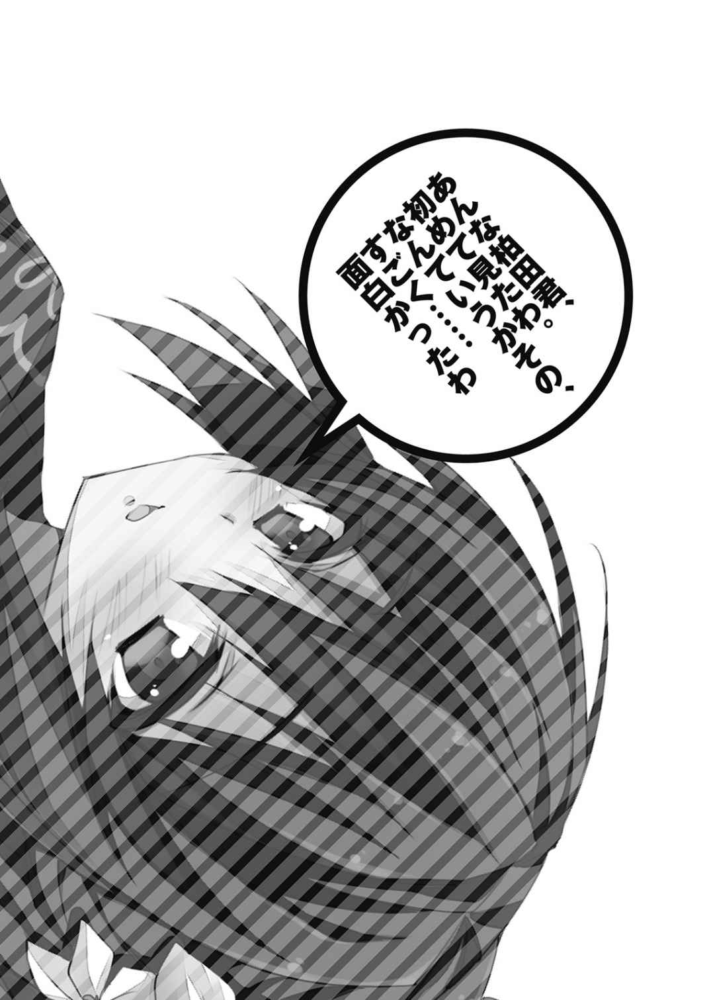
もしもの話だ。
もしも君が、好きな人に自分の好きなものを否定されてしまったら、一体どうするだろうか。
好きな人のために、今まで自分が好きだったものをやめることができるだろうか。
はたまた、好きな人に対して『自分の好きなものを嫌いにならないでくれ』と説得して、理解してもらうことができるだろうか。
どちらを選ぶにしても道は険しく、生半可な気持ちではやり遂げることなどできないだろうと思う。
俺柏田直輝は、今まさにそういった問題に直面していた。
想い人であるクラスメイトの長谷川翠に、
「オタク文化は嫌い」
「オタク趣味の人も苦手」
とオタクを否定されて、この先一体どうしたらいいのか分からなくなって途方にくれていた。
好きな相手に否定されたからと言って、そんな簡単にオタク趣味を止めることなどできない。オタクである部分は、俺の人格の半分を形成している部分だと言っても過言ではないのだ。
であれば、この先ずっと、オタクであるということを隠し続けて長谷川と接しなくてはならない。元々学校ではオタク趣味を隠していたし、勿論この先も隠すつもりでいたが、この先万が一──長谷川と、どうにかして恋人同士になれた場合も......ずっと隠し通さなくてはいけないことになるのだ。
そんなこと、俺にできるのだろうか？
──といった感じで、長谷川のあのセリフを聞いて以来、俺は毎日悩み続けていた。
考えても考えても、結論など出なかった。
その日も、朝から長谷川の件で思い悩みながら登校していた。校内へ入り、教室へ向かうべく廊下を歩いていると、曲がり角を曲がろうとしたところで別の生徒に軽くぶつかった。
「あ、すみま......」
謝ろうとして相手の顔を見ると、なんと......そこには今俺が思い浮かべていた張本人、長谷川がいた。
「は、はせ......！」
突然のことで驚いて、長谷川の名前を呼ぼうとしたが噛んでしまった。
「あ、柏田君......ごめんなさい、ぼーっとしてしまって......」
俺も惚けていたので自分の不注意でぶつかってしまったのだと思っていたが、どうやら長谷川も考え事をしながら歩いていたらしい。
「いや、こっちこそ......。......珍しいね、長谷川がぼーっとしてるだなんて......」
いつも気を張っていてきびきびと動いているところしか見たことがないので、少し不思議に思った。
「な、何か......考え事？」
俺の質問に、長谷川は少しだけ考え込む。何かを言うべきかどうか悩んでいるのだろうか。やがてゆっくりと口を開いた。
「えぇ......。実は......友人に、文化祭へ来ないかと誘われていて、その件で考え事を......」
友人、か......。
「それって、前話してくれた中学の時の......？」
失礼ながら、長谷川の友人といったらその人物しか思い当たらない。
「えぇ、そう」
「そっか、文化祭かー。もうそろそろそんな時期だもんねー。行くの？」
軽い気持ちでなんとなしに聞いてみる。
「そうね......来月はうちの学校も文化祭だから参考になると思うし、できれば行きたいのだけれど......今、悩んでいて......」
そこで長谷川は口をつぐんだ。
できれば行きたいけど、行くかどうか決めかねている......ということなのだろうか。どうして悩んでいるのだろう。
......もしかして、一人ではなく誰かと一緒に行きたい、と思っているとか......？
「そうなんだ～！ 他校の文化祭って楽しそうだね、も、もし......一緒に行く相手がいないんだったら、俺も行きたいなあ、とか......」
そのセリフを口にした後で、長谷川が一緒に行く相手のことで悩んでいるのかもしれないという俺の憶測が間違っていた場合、俺の今の発言は的外れで空気が読めないものだったよなあ......と不安になる。恐る恐る長谷川の顔を見ると......。
「......本当？ 一緒に、来てくれるの......？」
長谷川は真剣に俺の顔を見つめて聞き返した。
「え、も、勿論！」
「......そう......ありがとう......」
長谷川は俺の返事を聞くと、僅かに笑みを浮かべて礼を言ってくれた。
勇気を出して提案してみて、本当に良かった......。長谷川のその顔を見て、俺は心からそう思った。
それから長谷川に文化祭の日にちを聞くと来週の日曜日とのことで、その日は何もバイトなどの予定が入っていなかったので、二人で文化祭へ行くことが決定した。
当日は、午前十一時に文化祭が行われる学校の最寄り駅で待ち合わせをすることにした。再び長谷川と休日に二人きりで会えるだなんて、夢みたいだ。
......とりあえず、色々考えることはあるが、当日は余計なことは考えず長谷川との文化祭を楽しむことに徹しよう、と心に決める。
俺がオタクだってことは、くれぐれもバレないようにしなくては......。
それから数日が経過して、長谷川の友人の高校......『名和高校』の文化祭の日を迎えた。
お台場デートの日は寝坊してしまったが、今回は家を出る一時間前に起きることができた。朝飯を食って歯を磨いてから、昨日買ったばかりの秋服を袋から取り出す。
先日恋ヶ崎に『秋っぽい服を買いたいんだがどういう服がいいと思う？』とメールで相談したところ、恋ヶ崎は俺が数日前にラクーアで奴の荷物持ちをしてやったお礼にと、俺の秋服の買い物に付き合ってくれると言い出した。そして実際に昨日、新宿へ恋ヶ崎と買い物へ行き、俺は奴のチョイスで黒のＶネックの七分袖のＴシャツを購入したのだ。
値札を切ってから袖を通し、鏡を見る。店で試着したとき恋ヶ崎にいい感じだと言われただけあって、我ながら割と似合っていると思う。運良く昨日購入できたおかげで今日着ていくことができて、本当に助かった。
着替えを終えてから髪型のセットをして、早めに家を出た。
電車を乗り継ぎ、待ち合わせ時間の十分前に駅に到着した。
緊張しながら待つこと五分、長谷川が待ち合わせ時間の五分前に改札口にやってきた。
「お待たせ」
「ああいや、俺も今来たところだから......」
駅を出たところに駅周辺の地図があり、長谷川と二人で地図を見る。少し見ただけで長谷川が場所を把握したようで、歩き始めた。
「............」
長谷川と会話をすることは以前に比べたら多少慣れたが、それでもいざ二人きりになると緊張してしまい、未だに沈黙してしまうことがある。沈黙すら気にならないくらいの関係になれたらいいのだが、まだそこまでにも至っていない。
「......えっと、その友達のクラスは、文化祭で何の出し物やるの？」
やっとの思いで思いついた話題を長谷川に振ってみる。
「確か、和菓子喫茶と言っていたわ」
「へぇ～いいねー。うちもそろそろ話し合い始まるし何やるか考え始めないとなー」
「えぇ、そうね」
「は、長谷川は、何かやりたいこととか既にあったりする？」
「私は......クラスのみんなが一番望んだものが出来れば、それが最善だと思っているわ」
目的地である長谷川の友人の高校......『名和高校』は駅から近く、話している間にすぐに辿り着いた。
『名和祭』と大きく書かれた生徒手作りの門をくぐり、入り口で受付を済ませてパンフレットをもらう。
「......あ、和菓子喫茶あった。ここであってるのかな？」
パンフレットを捲りクラス別の出し物紹介ページを初めから見ていくと、一年三組が和菓子喫茶とあった。長谷川にパンフレットのそのページを見せて尋ねる。
「ええ、そうだと思うわ。友人が店番をするのは午後一時からと言っていたから、それまでは他のところを回るということでもいいかしら？」
「あ、そうなんだ。勿論いいよ！」
通行人の邪魔にならないように隅に移動してから、互いにパンフレットを見て行きたいところを物色する。
とりあえず、朝飯を少ししか食べていないので何か食べたいなあ。他は......あ、この学校も漫画研究部あるのか......。紹介ページのカットに俺の好きなアニメのキャラクターのイラストが描いてあったのでつい興味惹かれてしまう。だが、長谷川の前では絶対に興味のあるフリなどしないようにしなくては、と慌てて思い直す。
「柏田君、行きたいところは決まった？」
「あっ、ええっと......」
突然声をかけられて、慌てて漫研の紹介ページを捲って違うページを開く。
「......こ、校庭でいくつか出店やってるみたいだから、何か食べたいな～とか......」
「そうね、では早速校庭へ行きましょう」
「ほんと？ いいの？ 長谷川は、行きたいところは......」
「私は、自分のクラスの出し物の参考にするためにいろいろなところを見学したいと思っているから、時間の許す限りたくさんのクラスの出し物を見て回りたいと考えているわ。結構疲れてしまうかもしれないけれど......いいかしら？」
「勿論、大丈夫だよ！」
今俺たちが入って来た入り口の逆側から、すぐに校庭に出ることができた。
校庭は生徒や外部からの客で賑わっていた。
「わー、うまそう～！」
たこ焼き、焼きそば、チョコバナナなど様々な出店があり、腹が減っている俺は目がくらんでしまう。
高校の文化祭に来たのは、高校入学前の中学三年時に、自分が受験する高校......つまり今俺が通っている藤見高校の文化祭にオカンと来て以来、二回目だった。そのときはオカンと来ているということが恥ずかしくてほとんど出し物を見ず、学校の中の設備などを見て回るだけで終わってしまった。だから、きちんと文化祭を楽しむのはこれが初めてだ。
やはり中学の時の文化祭とは規模が違って、結構自由が利くんだなあ。どの生徒も楽しそうだ。少しばかりテンションが上がってしまう。
悩んだ挙げ句、俺はたこ焼きを食べることにした。長谷川にももし良かったら食べてと勧めるべきか悩んだが、割り箸は一つしかないので間接キスになってしまう......。長谷川は嫌がるだろうし、失礼だよな......と思い、勧めるのをやめて一人で食べきった。長谷川は飲み物だけを買って飲んでいた。
二人で校庭の隅の花壇の縁に軽く腰掛けていると、長谷川が何かに目を奪われていることに気付いた。長谷川の視線の先に目をやると、生徒らしきバンドが演奏していた。歌も演奏も結構うまい。
「すごい、うまいねー」
「えぇ、そうね」
演奏が終わって観客が拍手をする。中には誰かの名前を叫んでいる人もいる。きっと、バンドの中の誰かの名前なのだろう。
......ああ、軽音部の演奏ってあんな感じなのかあ......。恋ヶ崎の奴、鈴木や軽音部と一緒にライブやるとかいうことになってたけど......本当に大丈夫なんだろうか。
「......柏田君、険しい顔になっているけど、どうかした？」
「えっ!? いやあ、何でもないよ」
せっかく長谷川と二人きりの休日なんだ、余計なことを思い出して悩んでも仕方がない。そもそも、俺が悩んでもどうしようもないことなんだし......。
それから俺がたこ焼きを食べ終えたので、今度は校内の出し物を見て回ることにした。
適当にぶらついて、気になる場所があったら入る、ということになった。
教室内に張り出されている歴史物の展示を見たり、鉄道部の展示（電車の模型）を見たり、『名和高校48総選挙！』と名付けられた、ＡＫＢの総選挙を模倣したミスコンのようなものを見て回ったりした。ちなみに総選挙は黒板に学校の生徒だと思われる48人の女の子のチェキが貼り付けられており、投票したい女の子の番号をアンケート用紙に書いて係の生徒に渡す......というもの。正直、エントリーしているどの女の子よりも長谷川の方が何倍も可愛かったけどな。というか、こんなもんに進んでエントリーするような自己顕示欲が強い女、俺嫌いだし。
「すごいわ......今の流行をうまく取り入れてクラスの出し物にするだなんて......よく考えたものね......」
長谷川は素直に感心していた。
『名和高校48総選挙』を出た俺たちが次にどこへ行こうかパンフレットを見て立ち止まっていると、
「よろしければ漫研の展示見に来ませんかー!?」
なんと......ちょうど隣が漫研の展示だったようで、漫研部員と思われる女子生徒に勧誘された。
長谷川はオタク文化が嫌いなわけだし、気まずいので足早に通り過ぎようとしたのだが、女子生徒は思ったよりもしつこい。
「ただいま部誌の同人誌も無料でお配りしてますよ～！」
......どうしてか、長谷川が『同人誌』の言葉に、少しだけ反応したように見えた。
「申し訳ないけれど......他に行くところがあるので」
長谷川は極めて冷静に、だがキッパリと漫研の勧誘を断った。
今日は参考にするためになるべくいろいろなところを見て回りたい......そう言っていたのに、漫研だけは固く拒否した。
俺はその様子に少し驚いて、長谷川を見る。
「柏田君......もしかして、今のところへ行きたかった？」
長谷川は俺の視線に気付いて、俺の顔を見つめながらそう尋ねた。
気のせいだろうか......俺を見る彼女の瞳が、いつもの彼女の瞳よりも冷たく感じたのは......。
何かを......疑っているかのような瞳に見えるのは......。
「い、いや、全然！」
俺がそう否定すると、長谷川はいつもの表情に戻った。
......もしかして、長谷川のオタク嫌いはそう生半可なものではないのだろうか......？
そんな風に思えてしまうほど、冷たい瞳だった。
俺はそれ以上考えたくなくて、忘れようと努めた。
「じゃ、じゃあ次、どうしようか～」
極めて明るく、彼女に声をかける。
「そうね、どうしましょうか......」
......せっかく今日は二人きりでいられるのだから、今日くらいはネガティブなことを考えずに楽しもう......。
そう、自分で自分に言い聞かせた。
時計を見ると、十二時四十五分を回っていた。
「一時まであと少しだね」
長谷川に声をかけると、またもや彼女は何かに目を奪われていた。
視線の先には......
「お、お化け屋敷......？」
教室内を改造して作られた、お化け屋敷があった。
「面白そう......」
静かに呟く長谷川。
「じゃあ、入ってみようか」
「柏田君、大丈夫？」
「え？ 全然大丈夫だよ」
最後にお化け屋敷に行ったのは確か小学生の頃だったが、その当時でさえあまり怖がらなかったような気がするので、大丈夫だろうと思った。
入り口で受付を済ませ、早速中へと入る。
「すごい......まだ昼間なのに教室内をこんなに暗くできるだなんて......カーテンだけではここまで暗くはならないはずだから、ダンボールか何かで窓からの光を遮っているのかしら」
長谷川は相変わらず冷静に分析していた。もし自分のクラスでお化け屋敷をやるとしたら参考にしようと思っているのだろう。本当に研究熱心だなあ。少しだけ、キャー！ とか怖がって俺に抱きついてきたりする展開を期待していたのだが、そんなことになる気配は一ミリも感じられない。
「わっ!?」
そのとき、突然俺の足下に何かが転がってきてぶつかった。暗闇でよく分からないので、掴んで持ち上げてみる。
「────ひいいいっ！ なっ、何だこれっ!?」
つい、悲鳴に近い声を上げてしまった。
それは......人間の生首だった。勿論作り物であるが、やたらと完成度が高い。
暗くてよく見えないのが幸いだが......相当グロテスクだった。俺は、幽霊などは比較的大丈夫なのだが、いかんせんグロテスクなものが苦手だった。ネットで誤ってグロ画像などを踏んでしまったりした日には、たとえそれが作り物でもその日一日は脳裏に焼き付いて離れないほどだ。
「すごい技術だわ......相当造形が得意な人が作ったんでしょうね。恐らく、美容師の人などが使うマネキンの頭を改造して作っているようだけれど......」
ここでも冷静に分析している長谷川に、驚きを隠せない。
「い、いいから行こう！」
俺は作り物の生首を慌てて床に置いて、すぐに歩き出した。さっさとお化け屋敷を出てしまいたいという衝動に駆られる。
次の瞬間、突然ロッカーが開いた。
「うわっ!?」
それだけでも驚いたのだが、中から......ゾンビっぽいもの（に扮した人）が出てきて、突然俺に飛びついてきた。
「うわああああああっ!!」
俺は驚いて大声をあげ、ゾンビを振り払って逃げた。
しかしすぐに長谷川の存在を思い出して振り返る。ゾンビはなぜか長谷川には目もくれず、俺の方を一目散に追いかけてきていた。
「ひいいいっ、しつこいっ！」
俺はそのまま出口までダッシュして、お化け屋敷を出た。
「はあ、はあ......」
「はい、お疲れ様でしたー」
係の生徒が俺を見て笑っている。うわあ、俺制作者の思うつぼじゃねえか......。
俺が出てきてからすぐに、長谷川も出てきた。
「ご......ごめん......置いて逃げちゃって......」
お化け屋敷の中で女の子を置いて逃げるだなんて、俺最低すぎるだろ......。
長谷川は、怒っているだろうか、それとも呆れているだろうか......。
「ふふっ......」
しかし彼女は、俺の予想と反して......笑っていた。
それも、いつもの僅かな笑みではない。口元を抑えて、くすくす笑っている。しかも、なかなか終わらない。ずっと笑い続けている。
「ご、ごめんなさい......柏田君が......あまりにも必死に逃げていたものだから......すごく、面白くて......」
俺は長谷川の様子に驚いてぽかんとしてしまう。
こんな風に笑っている長谷川の姿、初めて見た。そういえば花火大会の日も恋ヶ崎と笹川のやりとりに笑ったりしていたけど、今の笑いっぷりはそのとき以上だ。
「......大丈夫よ、あのお化け役の人、私が全く怖がっていないことに気付いていて、私には何もしてこなかったもの。柏田君の反応に面白がって、柏田君のことだけ追いかけていたから......」
「そ、そうだったんだ......」
俺は情けなくなると同時にとても恥ずかしくなって、顔が熱くなる。
ああ、もう、本当に男として最低だ。ものすごく怖かったというわけではないのだが、突然のことで驚いて思わず逃げてしまった。
普通は怖がってる女子を男子がなだめたりするもんだっていうのに......自分が怖がってどうすんだよ。
「......あ、もう一時だね」
「えぇ、では一年三組へ向かいましょう」
気を取り直して、俺たちは長谷川の友人のクラスの出し物『和菓子喫茶』へと行くことにした。
パンフレットの案内図を見ながら移動して、一年三組へと辿り着く。
「いらっしゃいませー」
浴衣姿（どうやら和菓子喫茶の制服らしい）の生徒に案内されて、教室内にあるテーブルに着く。......テーブルと言っても、机を二つくっつけてテーブルクロスをかけているもののようだが。
メニューを渡されて目を通す。あんみつにぜんざい、抹茶アイス......先ほどたこ焼きを食べたばかりだがメニューを見ていると食べたくなってしまい、あんみつを頼んだ。長谷川も俺と同じくあんみつを頼んでいた。
すぐに注文の品と緑茶がテーブルへと運ばれてきた。
そういえば、長谷川の友人はどこにいるのだろう。長谷川に尋ねようとしたところ......。
「......？ は、長谷川？」
なぜか、彼女は俯いて笑いを堪えていた。
......何か笑えるようなものがあったのだろうか。
「ご、ごめんなさい......」
なぜか突然俺に謝る。
「......？」
「先ほどの柏田君の様子を思い出してしまって......そしたらまた笑いが再度こみ上げてきてしまって......笑ってはいけないと思っているのだけど、止まらなくて......」
「えっ!?」
笑ってる原因、俺!?
先ほどの俺の情けない様子が、どうやら相当長谷川の笑いのツボにハマッてしまったらしい。長谷川の笑顔を見られるのは嬉しいが......その原因の出来事を思うと死にたくなる。
「いや、えっと......その......さっきのは、もう忘れて！」
俺は再度赤くなりながら、強く言う。
長谷川は俺のセリフに俺の方を見てキョトンとした。やがて口を開く。
「忘れる......？ それは......無理ね」
「えぇっ!?」
まさかの発言に、俺は驚いて声を上げた。
「だって、あんなに面白かった出来事......久しぶりなんだもの」
彼女は、少しだけ意地悪そうに......笑いながら言った。
か、可愛い......。
ちょっと意地悪な長谷川も、めちゃくちゃ可愛いじゃないか。長谷川の新しい魅力に気付いてしまった。
こんな新しい一面が見られるのなら、情けない姿を晒してしまったことも、悪くなかったかも......。
「翠！」
そのとき、不意に長谷川の名前が呼ばれた。
かと思うと、俺たちのテーブルに一人の浴衣姿の女子生徒が駆け寄ってきた。
「り、莉緒......」
「来てくれてサンキューッ！」
長谷川に莉緒、と呼ばれた女子生徒は、長谷川の肩に飛びついた。
そうか、これが長谷川の中学時代の友人の......。
ショートカットの彼女は、健康的に日に焼けた肌をしていて、少しボーイッシュな印象だった。正直、長谷川とは真逆のタイプに見える。
「この人は、同じ高校の柏田君。今日、付き合ってくれたの」
長谷川が友人に俺を紹介してくれた。俺は軽く頭を下げる。
彼女は俺に向かって無邪気にニカっと笑って、
「翠の親友の園田莉緒です！ よろしく！」
と、挨拶をしながら俺と握手をしてくれた。明るく人懐っこそうな人だという印象を受ける。親友、という言葉を長谷川に対して躊躇いなく使っているのを聞いて、この二人は本当に強い絆で結ばれているのだろう......なんて勝手に思った。
「あ、こちらこそ、宜しく......」
慌てて俺も挨拶を返す。
「いつも翠がお世話になってまーす！」
「えぇっ!? いやいや、全然、お世話だなんて......」
俺は園田さんのセリフに戸惑ってたじろいでしまった。
「あっ、二人が食べてるあんみつ、あたしが作ったんだぜ！ うまいっしょー!?」
園田さんが俺たちの食べているあんみつを見て嬉しそうに言う。
あ、そうなんですか、美味しいです......と俺が言おうとしたとき。
「そうなの？ ......作ったといっても、どうせ盛りつけただけでしょう？」
そのセリフを聞いて、俺は口へ運ぼうとしていた白玉を落としそうになった。
それは、長谷川の口から出た言葉だった。
信じられない......あの長谷川が......真面目で心優しく聖女のような長谷川が......嫌み（？）を言った。
「ひでーな翠！ まあその通りだけどな！」
園田さんはさして気にする様子もなくそう言うと......長谷川の許可も取らずに長谷川のあんみつを横から一口、ぱくっと食べた。
「ちょっと、私の分勝手に食べないでよ！」
......あの長谷川が......今度は、食べ物のことで文句を言ったぞ......？
長谷川が親しい友人を前にするとこんな態度になるんだなんて......意外だ。意外すぎる。
以前長谷川は確か園田さんのことを、中学時代唯一話しかけてきてくれた恩人......というような感じで話していたような気がする。人気者で優しい子だった、とも言っていた。だから実際会ったときも、もっと好意的な態度を前面に出すのだろうとなんとなく思っていたのだが......今の長谷川の園田さんに対する態度は、俺が想像していたのと一八〇度違った。
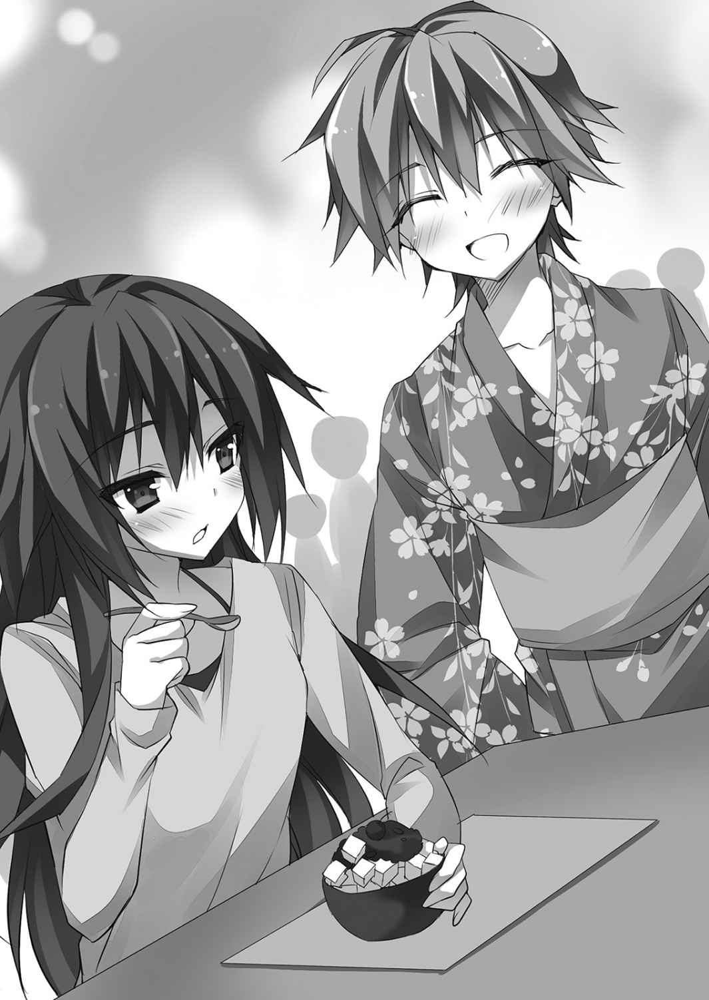
「そうだ莉緒、この前話したライブのチケット当たっていたわ。来月の一六日空けておいて頂戴」
突然長谷川が、園田さんに向かって思い出したかのように言う。
「えぇーっ!? あの意味不明なコントのライブ当たっちゃったのかよーっ!?」
園田さんはあからさまに嫌そうな顔をした。コント......ということは、お笑いのライブだろうか。
「柏田君は知っているかしら？ 『肉離れ』という名前のお笑いコンビ」
ぽかんとしている俺に、長谷川が尋ねた。
「肉離れ......？ 聞いたことないや......ごめん、俺あんまりお笑い詳しくなくて......」
コンビ名からして随分シュールな芸人だなあ。
「いえ、まだテレビなどにはほとんど出たことのないマイナーなコンビだから、知らなくて当然だと思うわ。だけど、これから絶対人気が出ると思う」
長谷川は目を輝かせて、力強く言った。そんなにそのお笑いコンビのことが好きなのか......正直、ちょっとそのお笑いコンビが羨ましい。......って、芸人に嫉妬してどうするよ、俺。とりあえずそこまで長谷川が推すんだったら、今度調べてみようかな。
「いやいやいや！ あたしは断言するぜ！ 絶対奴ら......『肉離れ』は人気出ないね！ だってコント全然意味分かんねえもん！」
「それは莉緒の理解力が足りないだけでしょう？ この間コントのＤＶＤを一緒に見ながら横で説明してあげたじゃない」
長谷川は園田さんに対して、相変わらずの毒舌をふるう。
「説明されてもイマイチ分からんかった......。つーか、説明がなきゃ分かんないって時点でコントとしてダメっしょー！ 友達にも見せたけど全然意味わかんねーって言ってたし。翠の感性って相当残念だからな～」
「ちょっと莉緒！ 自分の理解力のなさを棚に上げて『肉離れ』を馬鹿にしないで頂戴！」
長谷川が、飲んでいた緑茶をテーブルの上に強く置きながら、声を荒げた。
こんな長谷川......俺の知ってる長谷川と違う......！
「と、とりあえず......俺も今度見てみるよ......」
少しでも落ち着かせようと、声をかける。
「本当？ それなら今度ＤＶＤを貸すから、是非見て欲しいわ！」
長谷川は、今日一番の笑顔を俺に向けた。
「柏田君......絶対後悔すると思うぜ......」
園田さんは遠い目をして俺を見つめていた。
なんだか今日は、いつもは見られないような長谷川の一面をいくつも見ている気がする。
いつも俺が見ていたクールで完璧な長谷川は、表面的な部分でしかなかったのかもしれない。もしかしたら、園田さんといるときの彼女が、素の状態に一番近いのかも......とすら思える。
だが、こんなことで引いたりする俺ではない。
むしろ、今まで見られなかった、学校では見ることのできない別の顔を見ることが出来て、俺は嬉しかった。
いつか俺にも、園田さんに対する態度と同じくらい、素の長谷川で接してくれる日が来たらいいな......なんて、思った。
「あっそうだ！ 翠にいいことしてやろう！ ちょっとこっち来て！」
園田さんは突然長谷川の腕を引っ張って、無理矢理立ち上がらせる。
「ちょっと！ 私まだ食べきっていないのだけれど......」
「いいからいいから！」
園田さんは不満げな長谷川の手を引いて教室を出て行ってしまった。なんというか......なんてフリーダムな人なんだ。っていうか、一体どこへ行ったんだ？
残された俺はどうしたらいいのだろう......。仕方なく一人で黙々とあんみつを食べた。
「お待たせ～！」
十分程度経過したところで、二人が戻ってきた。
「............！」
園田さんの後ろにいる長谷川は......なんと、園田さんや他のウェイトレスと同じような浴衣姿になっていた。
「五百円で浴衣の着付けサービスもやってるんだよね、うちの店。まあ翠は特別に無料サービスにしてやんよ！」
「何の説明もなく勝手に無理矢理着せておいて、よく言うわ......」
呆れた様子でため息をつく浴衣姿の長谷川は......まるで天使、そのもの。
黒髪をアップにまとめ、紺色の浴衣に紫色の帯をつけている。
綺麗なさらさらの黒髪に、正統派美人な顔、スレンダーな身体を持つ長谷川は、恐ろしいくらい浴衣が似合っていたのだ。
あまりの美しさに感動して、何も言葉が出ない。
息をすることさえ忘れて浴衣姿の長谷川に見とれてしまう。
やはり、以前浴衣は長谷川のために存在するのではないかと思うくらい似合うだろう、なんて思っていた俺の予想は当たった。周囲にいる客もみんな彼女に釘付けになっていた。
花火大会の日、長谷川の浴衣姿を見ることができずにがっかりしたが......今日見ることが出来て本当に良かった。園田さんに心から感謝したい。
だが当の本人は特に浴衣に感動することもなく、さっさと席についてあんみつの続きを食べようとした。どうやら浴衣にあまり興味がないようだ。しかし、園田さんによってそれは阻止されてしまった。
「せっかく着せてやったんだから写真撮るよ！ ほら、翠の携帯も貸して！」
「えぇ!?」
長谷川を黒板の前に無理矢理立たせて、携帯で撮影している。
「あ、せっかくだから柏田君も一緒に入ったら!?」
「......え!?」
園田さんに言われて、戸惑っているふりをしつつも、俺は内心喜んだ。浴衣姿の長谷川と、ツーショット撮影できるだなんて......！
「あ、柏田君の携帯でも撮ろっか？」
「えっ!? ああ、じゃあ......」
園田さんに携帯を渡し、やった、俺の携帯に初めて長谷川とのツーショット写メが残る！ ......と喜んだのもつかの間。
黒板の前で二人で撮影する俺たちは......非常に目立っていた。客も店員も完全にこちらを見ている。うわー、確実に『彼女はあんなに綺麗なのに男だっさ......』って思われているに違いない。
この場所は目立つので他の場所で撮影しないかと園田さんに提案しようかとも思ったが、もうここまで来たらさっさと撮って終わらせてしまいたいとも思い、黙っておいた。
......つーか、長谷川からしたら『なんでこいつ私とのツーショット写真を自分の携帯に収めてんの？』って感じだよな......ああ、やっぱり断れば良かったかもしれない......。
「柏田君......ごめんなさいね、変なことにつきあわせて」
隣の長谷川を見ると、呆れたように笑っていた。
「えぇ!? いやいや」
......良かった、長谷川は『俺が園田さんに無理矢理付き合わされている』と思ってくれているようだ。
それから園田さんに「あたしと翠のツーショも撮って～！」と頼まれたので、園田さんの携帯と長谷川の携帯でそれぞれ二人を撮影した。
撮影を終えると、長谷川が今度こそあんみつの続きを食べてから、元の私服姿へと着替えるため教室を出て行った。
そんな彼女の後姿を見送っていると......。
「いやーそれにしても、驚いたなー」
「......えっ!?」
不意に園田さんが俺に声をかけてきたので、少々驚いてしまう。
「翠があんな風に笑ってるだなんてさ～」
「あんな風に......？」
一瞬、何のことだか分からない。
「あたしが二人に声かける前、翠ずっと楽しそうに笑ってたっしょ？」
「え、ああ......」
それは、長谷川が俺のお化け屋敷での情けない姿を思い出して笑っているときのことだろう。あの様子を園田さんに見られていたとは思わなかった。
「あんな風に笑う翠、珍しいじゃん」
「そうですね......俺も初めて見ました」
タメとは分かっているものの、初対面の女子相手だとついつい敬語になってしまう。
「翠から聞いてるとは思うけどさ......あいつ、中学で色々あったから」
「あ......はい」
園田さんは急に今までのふざけた様子から一転して、真面目な表情になって語り始めた。「だから......高校で人と関わろうとしなくなっちゃってたらどうしよう、って勝手に心配してたんだ。本当は同じ高校に行きたかったけど、頭の出来の違いで無理だったからさ。翠とか柏田君が行ってる高校って、結構頭いいじゃん」
「いえ、そんな......」
口では否定したが、確かにこの園田さんの高校より、俺たちが行っている高校の方が偏差値は高い。
「だけど、完全に余計な心配だったみたいだな。最近翠から友達が出来たって報告を受けて、実際今日翠が柏田君と一緒にいるところを見て......安心したよ」
「えっ......!?」
長谷川から、友達が出来た、と報告を受けた......？
長谷川が園田さんに報告した『友達』というのは、俺のことなんだろうか......？ 俺のことを友達、と園田さんに話してくれていたのだろうか......？
失礼ながら、高校で俺以外に長谷川と仲良くしている人物は思い当たらない。
ということは......長谷川は、俺のことを友達として認めてくれて、しかも親友である園田さんにまで話してくれたんだ......。
こんなに嬉しいことって、あるだろうか。
「翠があたし以外の人にあんな笑顔を見せるだなんて......びっくりした」
確かに、長谷川の......あんなにずっと笑っている姿なんて、すごくレアかもしれない。
「......正直、ちょっと嫉妬しちゃうくらい」
「えっ？」
園田さんが何か独り言のように小さな声で呟いたのだが、よく聞き取れずに聞き返した。
「あー、いや！ とにかく、これからも翠をよろしくな！」
園田さんに肩をポン、と叩かれる。
「あ、はい！」
俺は力強く返事をした。
高校での長谷川のことは、俺に任せて下さい！ そんな気持ちを込めて。
やがて、着替えを終えた長谷川が戻ってきた。
「お待たせ。あら......もうこんな時間」
長谷川が時計を見て驚く。もう二時半を回っていた。そろそろ文化祭終了の時間のようだ。
「じゃあ莉緒、私たちはこれで」
長谷川は園田さんに無愛想に挨拶する。
「おう！ またな翠！ 柏田君も、来てくれてありがとなー！」
「あ、いえ！ では、また......」
「うん、良かったら今度、翠と三人で遊ぼうぜ！」
「......！ は、はい。是非......！」
社交辞令かもしれないが、園田さんにそう言ってもらえて俺は嬉しかった。
園田さんに手を振り、俺たちは一年三組を後にした。
「もう他を回る時間はないわね......。このまま今日はもう帰りましょうか」
「そうだね。どう？ 満足に回れた？ 参考になりそう？」
「......えぇ、とても。やはり来て良かったわ」
「お、俺も、来て良かったよ。園田さんにも会えたし」
俺のセリフを聞いて、長谷川は穏やかに笑った。
園田さんに会えたのも嬉しかったけど、園田さんの口から、長谷川が俺を『友達』と園田さんに話してくれていたことが聞けたし、普段と違う別人みたいな長谷川も見ることができたし、長谷川の浴衣姿も見られたし......今日は本当にいいことだらけだった。
......今俺が抱えている問題なんて、忘れてしまうほど......。
「柏田君......」
「え？」
不意に長谷川に呼びかけられて、彼女の方を見る。
彼女は穏やかな表情で俺を見つめて、口を開いた。
「今日......一緒に来てくれてありがとう」
「えっ......!? いや、そんな......」
改めて丁寧に礼を言われると、気恥ずかしくなってしまう。
「私......莉緒に文化祭に来ないかって誘われたとき、すごく......悩んだの。一人で文化祭へ行くのは構わないのだけれど、そんなことしたら莉緒を心配させてしまうかもしれない、って思ったから......」
......長谷川が文化祭へ行こうか迷っていたのは、やはり行く相手のことで悩んでいたからだったのか......。だけど、『一人で文化祭へ行く』ということ自体ではなく、園田さんを心配させてしまうことを考えて悩んでしまっていただなんて......いかにも長谷川らしい。
やっぱりあんな風に冷たい態度を取っていても、園田さんのことが大好きなんだろうな。
「......本当は、柏田君に一緒に来て欲しいって思っていたのだけれど......私の個人的な用事に付き合わせてしまうことになるから、躊躇っていて......」
......長谷川が、俺に一緒に来て欲しいと思っていた？
まさかそんなこと、思ってもみなかった。それは俺にとってすごく喜ばしい事実だ。
「だから......柏田君が俺も行きたい、って言ってくれたとき......本当に嬉しかった」
彼女は穏やかに笑って続ける。
「それに、今日一人で文化祭へ来ていたら、こんなに楽しめなかったとも思うわ。柏田君が来てくれたおかげで......楽しかった」
「そ、そんな......俺の方こそ、今日来れてすごく楽しかったよ！」
俺は長谷川の言葉にすごく嬉しくなった。こんなに感謝してもらえるなんて、本当に来て良かった。
最初は長谷川のことを無愛想だとか無表情だとか思っていたけれど、未だにクラスの連中はそう思っているだろうと思うけど......こんなに自分の感情に素直で、躊躇いなく感謝の気持ちを相手に伝えることができる人間って、そうそういない。勿論俺だってできやしない。
長谷川は、人一倍純粋で、優しい心を持っている。
やっぱり俺......長谷川のことが、好きだ。
今のままの関係じゃなくて、もっと仲良くなりたい。
もっともっと長谷川の色んな面を見てみたい。
「次は私たちの番ね。頑張りましょう、文化祭」
「うん、頑張ろう！」
このときの俺は、とても調子に乗っていた。その日一日がすごく楽しかったから、今自分が抱えている問題なんて、ほとんど忘れきっていた。
高校に入学してからの五ヶ月間で、こんなに長谷川と仲良くなれたんだ。長谷川だって少しずつ俺に心を開いてくれている。そう思っていた。
だから、この調子でもっともっと頑張れば......いつの日か、長谷川と恋人同士になれる日だって、夢じゃない。そんな風に、根拠もなく信じていた。
それがまさか......この後、長谷川ではない、他の女の子と付き合うことになるなんて......このときの俺には、微塵も想像することなどできなかったんだ。
あとがき
読者の皆様、こんにちは。村上凛です。
この度は『オタリア』五巻をお手にとって頂きありがとうございます。
今回はキャラ短編という形で書かせて頂きました。基本的に執筆中はいつも楽しく執筆させて頂いていますが（※締切直前を除く）、今回はそれに輪をかけてとても楽しく執筆させて頂きました。もう書いている最中自分でニヤニヤするほど......ただ、ふとたまに我に返って小説と現実との差に悲しくなったりもしましたが......（苦笑）。読者の皆さんにも少しでも楽しんで頂けたなら、こんなに嬉しいことはありません。
各短編の時期が少しばらついていて分かりにくかったと思うので、少々時期の解説を。
・桃短編......九月下旬の某祝日。
・小豆短編......夏休み中。夏コミ（八月十三日）直後。
・あかり短編......夏休み中。夏コミ後。
・ムラサキさん短編......九月下旬の某金曜日。
・鈴木短編......九月下旬の某平日。
・長谷川短編......九月下旬の某平日。文化祭当日はその次の週の日曜日。
......こんな感じでしょうか。まぁ大体の目安なのでぶっちゃけ気にしなくても大丈夫です。
今回は柏田が同人誌原稿のアシスタントを行う場面がありましたが、私自身も以前漫画を描いていた時期があったので、少々思い出話を......。
かなり昔なので当時はデジタルは今ほど普及しておらず、全てアナログで描いていました。原稿を描き上げて出版社へ投稿したことも何度かあったのですが、初めて漫画を投稿しようとした際、自分で決めた締切に原稿が間に合いそうになく非常に焦っていました。
すると高校のオタク友達二名が「修学旅行に原稿持ってきたら手伝ってあげるよ」と......。冗談だったのかもしれませんが、切羽詰まっていた自分はなんと本当に原稿を修学旅行へ持って行きました。友人らは本当に手伝ってくれました。今考えると阿呆すぎます（笑）。同室の他の友人も理解があったので本当に助かりました......高校時代の自分はとても恵まれていたなぁと思います。
担当様。的確なアドバイスをありがとうございました。今回も大変お世話になりました。
あなぽん様。今回もお忙しい中素晴らしい表紙とイラストをありがとうございました。表紙の桃も柚子もとても可愛いです！
ファンレター下さった読者の方々。今回もお返事できなくてごめんなさい......。お便りをいつも心の支えに執筆しております！ ありがとうございます。
最後にお知らせです。十月二十三日（火）、葵季むつみ様によって月刊コミックアライブ（メディアファクトリー刊）にて連載中の漫画版『オタリア』コミックスの一巻が発売されます！ さらに、この小説版『オタリア』五巻と、漫画版一巻の同時購入キャンペーンが行われます。どちらも購入して頂いた方にはプレゼントが抽選で当たるようです。どうぞ宜しくお願いします！
それでは、次巻では物語が大きく動き出し始めるかと思うので、願わくば、六巻でも皆様とお会いできたら嬉しいです。今後とも精進していきますので、宜しくお願いします。
村上 凛
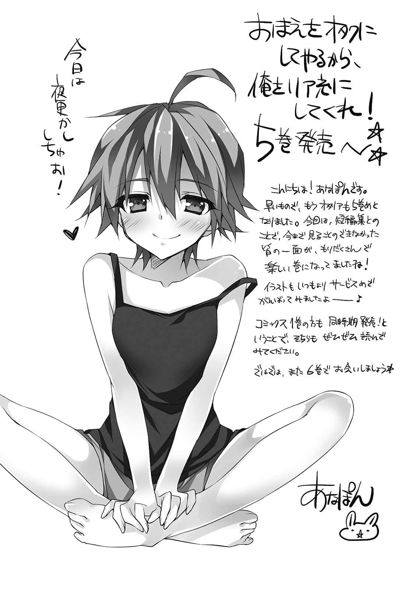
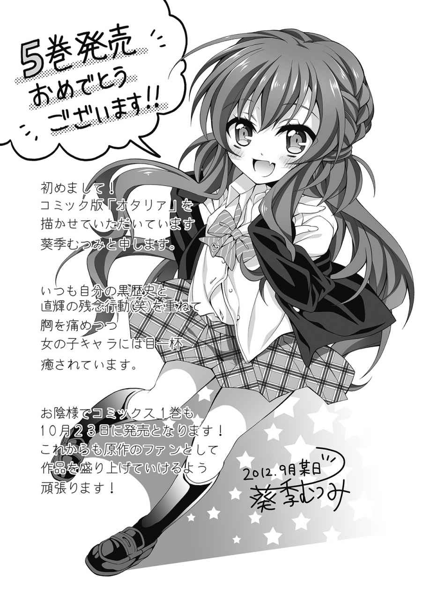
おまえをオタクにしてやるから、
俺をリア充にしてくれ！５
村上 凛
平成24年10月25日 発行
発行者 山下直久
発行所 株式会社富士見書房
〒102-8144 東京都千代田区富士見1-12-14
http://www.fujimishobo.co.jp/
(C)2012 Rin Murakami, Anapon/Fujimishobo